1 User Manual¶
The Insurance Management Information System (IMIS) is a web based software to manage health insurance schemes. It includes functionality for setup of the software to requirements of health insurance schemes, administration of policies and policy holders and for claim processing. This manual is a guide on the use and functionality of the software rather than in-depth technical reference. The Contents section, provide a reference to the page of each major chapter and the sub chapters within. By clicking on the content title (online version), the reader is re-directed to the position of the content title.
1.1 Users’ roles and rights¶
| Role | Responsibilities | Available functionality |
|---|---|---|
| Scheme administrator & district Staff | ||
| Enrolment Officer | He/she enrols insurees and submits enrolment forms to a health insurance administration; handles policy modifications; collects feedback from scheme patients and submits to the health insurance administration. | Capture a photo of an Insuree Send a photo Inquiry on an Insuree Collect feedback from an Insuree |
| Village Executive Officer (VEO) | He/she collects feedbacks and collects changes on insurees during insurance periods | Collect feedback from an Insuree Inquiry on an Insuree |
| Manager | Over-sees operations of the health insurance scheme; runs IMIS operational reports analyses data generated from the IMIS. | Create managerial statistics Authorize issuance of a substitution membership card |
| Accountant | Transfers data on collected Contributions to an external accounting system. Calculates claim amounts per health facility, runs IMIS operational reports and presents claims decision overview to management of a health insurance administrator. Processes approved claims to health facility sub-accounts. | Transfer of data on Contributions to accounting system Valuation of a claim Transfer of a batch of claims for payment |
| Clerk | Enters and modifies data on families, insurees, policies and contributions. Enters data on claims if the claims are submitted in a paper form |
Creation/Search/Mod ification/Deletion /Modification of a household/group , an Insuree, a Policy or a Contribution. |
| Medical Officer | Provides technical advice on claims verification from a medical standpoint. | Checking of a claim for plausibility Review of a claim Authorize a claim for payment |
| Scheme Administrator | Administers registers (all except the register of users) | Administer registers (Officers, Payers, Medical Services, Medical Items, Health Facilities, Medical Item Price Lists, Medical Services Price List, Products), Extract Creation for Off-line Health Facilities |
| IMIS Administrator | Administers operations of the IMIS. Is responsible for backups of data. | Administer the register of users ,Utilities, Backup, Restore and Updates, Extract Creation for Off-line Health Facilities <#imis |
| Health Facilities staff | ||
| Receptionist | Verifies membership and issues to a patient a claim form. | Inquiring on a Household/group, Insuree and Policy |
| Claim administrator | Pools claim forms of a health facility, enters and submits claims. | Opening of a batch of claims Entry of a claim |
| HF Administrator | Off-line Health Facility administration, Off-line extract upload | Off-line extract upload |
| Offline Administrator | Creation of clerk user in the offline IMIS, Creation of offline Extract | |
1.2 Login Access¶
To access the software, Users, must have a valid User Name and Password, provided by the “IMIS Administrator”. In the browser address bar type URL of the IMIS and request the start page. Login page will appear (Image 1 - User Login).
Image 1 - User Login
Use the provided Login Name and Password, and click on the button Login. If successful, the system will re-direct to the Home Page (Image 2 - Home Page).

Image 2 - Home Page
The full menu is displayed; Clicking on the menu headers will display a sub-menu providing further navigation options. Menus with a blue fore-colour are accessible, while menus with a grey fore-colour are disabled; either due to access rights of a user or unavailable functionality. Below the main menu at the top left-hand corner there is information about the current login user: Login Name, a list of roles acquired by the user and the districts to which the user has access.
When a password is forgotten, clicking Forgot Password? results in the Forgot Password Page (Image 3 - Forgot Password Page).

Image 3 - Forgot Password Page
Enter the Email linked to the account and click on the Submit button. In case the Email coincides with the e-mail address provided with the user in the register of users, the forgotten password is sent to the indicated e-mail.
1.3 Administration of registers¶
Registers of IMIS serve as a principal tool by which IMIS is adjusted to needs of health insurance schemes. With exception of the register of Users that can be managed only by users with the role IMIS Administrator, all other registers can be managed by users with the role Scheme Administrator.
The register of Users defines who can login to IMIS and under what constraints. The register of Locations defines administrative division of the territory, on which a health insurance scheme is operated. The register of Payers allows specification of institutional payers that can pay contributions on behalf of policy holders (households, groups of persons). The register of Enrolment Agents specifies all persons (either employed or contracted) by the scheme administration that are entitled to distribute/sell policies to population. The register of Claim Administrators specifies all employees of health facilities that are entitled to submit claims to the scheme administration. The register of Health Facilities contains all contractual health facilities that can submit claims to the scheme administration. The register of Medical Items specifies all possible medical items (drugs, prostheses, medical devices etc.) that can be used in definitions of packages of insurance products and in pricelists associated with contractual health facilities. The register of Pricelists that splits into two divisions for Medical Services and for Medical Items contains pricelists valid for individual health facilities or their groups reflecting results of price negotiations between contractual health facilities and the scheme administration. Finally, the register of Products includes definitions of all insurance products that can be distributed/ sold within the health insurance scheme.
1.3.1 Insurance Products Administration¶
The register of insurance products contains all insurance products in the health insurance scheme. There may be several insurance products available for distribution/selling in a territory, e.g. one basic product and one or several supplemental insurance products. The insurance products may at the different levels. For example that basic insurance product may be at the national level whereas the supplemental insurance products may be at the regional level. Administration of the register of insurance products is restricted to users with the role of Scheme Administrator.
1.3.1.1 Pre-conditions¶
An insurance product may only be added or thereafter edited, after the approval of the management of the scheme administration.
1.3.1.3 Product Control Page¶
Clicking on the sub menu Products re-directs the current user to the Product Control Page.

Image 5 - Product Control Page
The Product Control Page is the central point for administration of insurance products. By having access to this page, it is possible to add, edit, duplicate and search. The panel is divided into four panels. (Image 5 - Product Control Page)
- Search Panel
The search panel allows a user to select specific criteria to minimise the search results. In the case of Products the following search options are available, which can be used alone, or in combination with each other.
Product CodeType in the beginning of; or the fullProduct Code; to search for products with aProduct Code, which starts with or matches completely, the typed text.
Product NameType in the beginning of; or the fullProduct Nameto search for products with aProduct Name, which starts with or matches completely, the typed text.
Date FromType in a date; or use the Date Selector Button, to search for products with aDate From, which is on or is greater than the date typed/selected. Note: To clear the date entry box; use the mouse to highlight the full date and then press the space key.
Date ToType in a date; or use the Date Selector Button, to search for products with aDate To, which is on or is greater than the date typed/selected. Note: To clear the date entry box; use the mouse to highlight the full date and then press the space key.
Date Selector ButtonClicking on the
Date Selector Buttonwill pop-up an easy to use, calendar selector (image6); by default the calendar will show the current month, or the month of the currently selected date, with the current day highlighted.
- Anytime during the use of the pop-up, the user can see the date of today.
- Clicking on today will close the pop-up and display the today’s date in the corresponding date entry box.
- Clicking on any day of the month will close the pop-up and display the date selected in the corresponding date entry box.
- Clicking on the arrow to the left displays the previous month.
- Clicking on the arrow on the right will displays the following month.
- Clicking on the month will display all the months for the year.
- Clicking on the year will display a year selector.
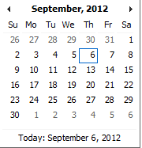 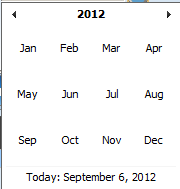
RegionSelect theRegion; from the list of regions by clicking on the arrow on the right of the selector to select products from a specific region. The option National means that the found insurance products should be common for all regions. Note: The list will only be filled with the regions assigned to the current logged in user and with the option National. All nationwide products and all regional products relating to the selected region will be found. If no district is selected then also all district products for districts belonging to the selected region will be found.
DistrictSelect theDistrict; from the list of districts by clicking on the arrow on the right of the selector to select products from a specific district. Note: The list will be only filled with the districts belonging to the selected region. All nationwide products, all regional products relating to the selected region and all district products for the selected district will be found.
HistoricalClick onHistoricalto see historical records matching the selected criteria. Historical records are displayed in the result with a line through the middle of the text (strikethrough) to clearly define them from current records (Image 7 - Historical records - Result Panel).
Image 7 - Historical records - Result Panel
Search ButtonOnce the criteria have been entered, use the search button to filter the records, the results will appear in the result panel.
- Result Panel
The result panel displays a list of all products found, matching the selected criteria in the search panel. The currently selected record is highlighted with light blue, while hovering over records changes the highlight to yellow (Image 8 - Selected record (blue), hovered records (yellow) - Result Panel). The leftmost record contains a hyperlink which if clicked, re-directs the user to the actual record for detailed viewing if it is a historical record or editing if it is the current record.

Image 8 - Selected record (blue), hovered records (yellow) - Result Panel
A maximum of 15 records are displayed at one time, further records can be viewed by navigating through the pages using the page selector at the bottom of the result Panel (Image 9 - Page selector - Result Panel).

Image 9 - Page selector - Result Panel
- Button Panel
With exception of the
Cancelbutton, which re-directs to the Home Page (Image 2 - Home Page), and the Add button which re-directs to the product page, the button panel (the buttonsEditandDuplicate) is used in conjunction with the current selected record (highlighted with blue). The user should first select a record by clicking on any position of the record except the leftmost hyperlink, and then click on the button.
- Information Panel
The Information Panel is used to display messages back to the user. Messages will occur once a product has been added, updated or deleted or if there was an error at any time during the process of these actions.
1.3.1.4 Product Page¶
1. Data Entry
Image 10 - Product Page
Product CodeEnter the product code for the product. Mandatory, 8 characters.
Product NameEnter product name for the product. Mandatory, 100 characters maximum.
RegionSelect the region in which the product will be used, from the list by clicking on the arrow on the right hand side of the lookup. The option National means that the insurance product is nationwide and it is not constraint to a specific region. Note: The list will only be filled with the regions assigned to the current logged in user and with the option National. Mandatory.
DistrictSelect the district in which the product will be used, from the list by clicking on the arrow on the right hand side of the lookup. Note: The list will only be filled with the districts assigned to the selected region and assigned to the current logged in user. If no district is selected then the product is considered to be either nationwide (the option National is selected in the field Region) or regional associated with the selected region.
Date FromType in the date or use theDate Selector Buttonto provide the date for which underwriting for the insurance product can be done from.Date Fromdetermines the earliest date from which underwriting can be done. Note: To clear the date entry box; use the mouse to highlight the full date and then press the space key. Mandatory.
Date ToType in the date or use the Date Selector Button to provide the date until which underwriting can be done to.`Note: To clear the date entry box; use the mouse to highlight the full date and then press the space key.` Mandatory.
Date Selector ButtonClicking on the
Date Selector Buttonwill pop-up an easy to use, calendar selector (image11). By default the calendar will show the current month, or the month of the currently selected date, with the current day highlighted. At anytime during the use of the pop-up, the user can see the date oftoday.
- Clicking on
todaywill close the pop-up and display the today’s date in the corresponding date entry box.- Clicking on any day of the month will close the pop-up and display the date selected in the corresponding date entry box.
- Clicking on the arrow to the left displays the previous month.
- Clicking on the arrow on the right will displays the following month.
- Clicking on the month will display all the months for the year.
- Clicking on the year will display a year selector.
ConversionSelect from the list of products, a reference to the product which replaces the current product in case of renewal after theDate to. Note: Selecting the current product will prevent the record from saving, and cause a message to be displayed in the Information Panel.
Lump SumEnter the lump sum contribution (an amount paid irrespective of the number of members up to a threshold) to be paid by a household/group for the product. If the lump sum is zero no lump sum is applied irrespective of the threshold members. Decimal up to two digits.
Threshold MembersEnter the threshold number of members in product for which the lump sum is valid.
Number of MembersEnter the maximal number of members of a household/group for the product.
Contribution AdultEnter the contribution to be paid for each adult (on top of the threshold number of members). Decimal up to two digits.
Contribution ChildEnter the contribution to be paid for each child (on top of the threshold number of members). Decimal up to two digits.
Insurance PeriodEnter duration of the period in months, in which a policy with the product will be valid. Mandatory.
Administration PeriodEnter duration of the administration period in months. The administration period is added to the enrolment date/renewal date for determination of the policy start date.
Max InstalmentsEnter maximal number of instalments in which contributions for a policy may be paid. Mandatory.
Grace Period PaymentEnter duration of the period in months, in which a policy has a grace period (not fully paid up) before it is suspended. Mandatory, although it is by default and can be left at zero.
Grace Period EnrolmentEnter duration of the period in months after the starting date of a cycle (including this starting date), in which underwriting of a policy will still be associated with this cycle.
Grace Period RenewalEnter duration of the period in months after the starting date of a cycle (including this starting date), in which renewing of a policy will still be associated with this cycle.
Enrolment Discount percentageEnter the enrolment discount percentage for the insurance product. The discount percentage is applied on the total contributions calculated for a policy underwritten earlier thanEnrolment disc. periodmonths before the start date of the corresponding cycle.
Enrolment Discount PeriodEnter the enrolment discount period of the insurance product in months.
Renewal Discount PercentageEnter the renewal discount percentage for the insurance product. The discount percentage is applied on the total contributions calculated for a policy renewed earlier thanrenewal disc. periodmonths before the start date of the corresponding cycle.
Renewal Discount PeriodEnter the renewal discount period of the insurance product in months.
Medical ServicesSelect from the list of available medical services (from the register of Medical Services) the medical services covered within the insurance product, by either clicking on theCheck Allbox at the top of the list of medical services, or by selectively clicking on the check box to the left of the medical service.
Medical Services Grid
Image 12 - Medical Services - Product


- Code: Displays the code for the medical service
- Name: Displays the name of the medical service
- Type: Displays the type of the medical service
- Level: Displays the level of the medical service
- Limit: Indicates the type of limitation of coverage for the medical service. This may be adjusted per medical service, select between Co-Insurance [C] and Fixed amount [F]. Co-insurance means coverage of a specific percentage of the price of the medical service by policies of the insurance product. Fixed amount means coverage up the specified limit. C is the default value. Limit O is used for claims having the type of visit Other, Limit R is used for claims having the type of visit Referral and Limit E is used for claims having the type of visit Emergency.
- Origin: Indicates where the price for remuneration of the service comes from. This may be adjusted per service, the options are: [P] Price taken from the price list of a claiming health facility, [O] Price taken from a claim and [R] Relative price, the nominal value of which is taken from the price list and the actual value of which is determined backwards according to available funds and volume of claimed services and medical items in a period. [R] is the default value.
- Adult: Indicates the limitation for adults. If the type of limitation is a co-insurance then the value is the percentage of the price covered by policies of the insurance product for adults. If the type of limitation is a fixed limit the value is an amount up to which price of the service is covered for adults by policies of the insurance product. Default is 100%. Adult O is for Other, Adult R is for Referral and Adult E is for Emergency claims according to the type of visit (Visit Type).
- Child: Indicates the limitation for children. If the type of limitation is a co-insurance then the value is the percentage of the price covered for children by policies of the insurance product. If the type of limitation is a fixed limit the value is an amount up to which price of the service is covered for children by policies of the insurance product. Default is 100%. Child O is for Other, Child R is for Referral and Child E is for Emergency claims according to the type of visit (Visit Type).
- No Adult: It indicates the maximal number of provisions of the medical service during the insurance period for an adult.
- No Child: It indicates the maximal number of provisions of the medical service during the insurance period for an child.
- Waiting Period Adult: Indicates waiting period in months (after the effective date of a policy) for an adult.
- Waiting Period Child: Indicates waiting period in months (after the effective date of a policy) for a child.
- Ceiling Adult: It indicates whether the medical service is excluded from comparison against ceilings defined in the insurance product for adults. Default is that the medical service is not excluded from comparisons with ceilings. [H] means exclusion only for provision of in-patient care, [N] means exclusion only for out-patient care and [B] means exclusion both for in-patient and out-patient care.
- Ceiling Child: It indicates whether the medical service is excluded from comparison against ceilings defined in the insurance product for children. Default is that the medical service is not excluded from comparisons with ceilings. [H] means exclusion only for provision of in-patient care, [N] means exclusion only for out-patient care and [B] means exclusion both for in-patient and out-patient care.
medical itemsSelect from the list of available medical items (from the register of Medical Items) the medical items covered within the product; by either clicking on the Check All box at the top of the list of medical items, or by selectively clicking on the check box to the left of the medical item.
medical items grid
Image 13 - Medical Items - Product
- Code: Displays the code for the medical item
- Name: Displays the name of the medical item
- Type: Displays the type of the medical item
- Package: Displays the packaging of the medical Item
- Limit: Indicates the type of limitation of coverage for the medical item. This may be adjusted per medical item, select between Co-Insurance [C] and Fixed amount [F]. Co-insurance means coverage of a specific percentage of the price of the medical item by policies of the insurance product. Fixed amount means coverage up the specified limit. C is the default value. Limit O is used for claims having the type of visit Other, Limit R is used for claims having the type of visit Referral and Limit E is used for claims having the type of visit Emergency.
- Origin: It indicates where the price for remuneration of the item, comes from: This may be adjusted per medical item, the options are: [P] Price taken from the price list of a claiming health facility, [O] Price taken from a claim and [R] Relative price, the nominal value of which is taken from the price list and the actual value of which is determined backwards according to available funds and the volume of claimed services and medical items in a period. [R] is the default value.
- Adult: It indicates the limitation for adults. If the type of limitation is a co-insurance then the value is the percentage of the price covered for adults by policies of the insurance product. If the type of limitation is a fixed limit the value is an amount up to which price of the item is covered for adults by policies of the insurance product. Default is 100%. Adult O is for Other, Adult R is for Referral and Adult E is for Emergency claims according to the type of visit (Visit Type).
- Child: It indicates the limitation for children. If the type of limitation is a co-insurance then the value is the percentage of the price covered for children by policies of the insurance product. If the type of limitation is a fixed limit the value is an amount up to which price of the service is covered for children by policies of the insurance product. Default is 100%. Child O is for Other, Child R is for Referral and Child E is for Emergency claims according to the type of visit (Visit Type).
- No Adult: It indicates the maximal number of provisions of the medical item during the insurance period for an adult.
- No Child: It indicates the maximal number of provisions of the medical item during the insurance period for a child.
- Waiting Period Adult: It indicates waiting period in months (after the effective date of a policy) for an adult.
- Waiting Period Child: It indicates waiting period in months (after effective date of a policy) for a child.
- Ceiling Adult: It indicates whether the medical item is excluded from comparison against ceilings defined for adults in the insurance product. The default is that the medical item is not excluded from comparisons with ceilings. [H] means exclusion only for provision of in-patient care, [N] means exclusion only for out-patient care and [B] means exclusion both for in-patient and out-patient care.
- Ceiling Child: It indicates whether the medical item is excluded from comparison against ceilings defined for children in the insurance product. The default is that the medical item is not excluded from comparisons with ceilings. [H] means exclusion only for provision of in-patient care, [N] means exclusion only for out-patient care and [B] means exclusion both for in-patient and out-patient care.
Account Code RemunerationEnter the account code of the insurance product used in the accounting software for remuneration of the product. 25 characters maximum.
Account Code ContributionEnter the account code of the insurance product used in the accounting software for paid contributions. 25 characters maximum.
Registration Lump SumEnter the lump sum (for a household/group) for registration fee to be paid at the first enrolment of the household/group. Registration fee is not paid for renewals of policies.
Assembly Lump SumEnter the lump sum (for a household/group) for additional assembly fee to be paid both at the first enrolment and renewals of policies.
Registration FeeEnter the registration fee per member of a household/group. If registration lump sum is non zero, registration fee is not considered. Registration fee is not paid for renewals of policies.
Assembly FeeEnter the assembly fee per member of a household/group. If assembly lump sum is non zero, assembly fee is not considered. Assembly fee is paid both at the first enrolment and renewals of policies.
Start Cycle 1Start Cycle 2Start Cycle 3Start Cycle 4If one or more starting dates (a day and a month) of a cycle are specified then the insurance product is considered as the insurance product with fixed enrolment dates. In this case, activation of underwritten and renewed policies is accomplished always on fixed dates during a year. Maximum four cycle dates can be specified.
Ceiling InterpretationSpecify whether Hospital and Non-Hospital care should be determined according to the type of health facility (select [Hospital]) that provided health care or according to the type of health care (select [In-patient]) acquired from a claim. In the first case all health care provided in hospitals (defined in the fieldHF Levelin the register of Health Facilities) is accounted forHospital Ceilings/Deductiblesand for calculation of relative prices for theHospitalpart. It means that if clamed health care was provided out-patient in a hospital, it is considered for calculation of ceilings/deductibles and for calculation of relative prices as hospital care. In the second case only in-patient care (determined from a claim when a patient spent at least one night in a health facility) is accounted forHospital Ceilings/Deductiblesand for calculation of relative prices for hospital part. Other health care including out-patient care provided in hospitals is accounted forNon hospital Ceilings/Deductiblesand also such health care is used for calculation of relative prices for non-hospital part. Mandatory.
TreatmentDeductibles and Ceilings for treatments may be entered for general care (Hospitals and Non-hospitals) or for hospital care (Hospitals) only and/or for non-hospital care (Non-Hospitals) only. An amount may be set, indicating the value that a patient should cover within his/her own means, before a policy of the insurance product comes into effect (Deductibles) or the ceiling (maximum amount covered) within a policy of the insurance product (Ceilings) for a treatment (the treatment is identified health care claimed in one claim)
InsureeDeductibles and Ceilings for an insuree may be entered for general care (Hospitals and Non-hospitals) or for hospital care (Hospitals) only and/or for non-hospital care (Non-Hospitals) only. An amount may be set, indicating the value that an insuree should cover within his/her own means, before a policy of the insurance product comes into effect (Deductibles) or the ceiling (maximum amount covered) within a policy of the insurance product (Ceilings) for an insuree for the whole insurance period.
PolicyDeductibles and Ceilings for a policy may be entered for general care (Hospitals and Non-hospitals) or for hospital care (Hospitals) only and/or for non-hospital care (Non-Hospitals) only. An amount may be set, indicating the value that policy holders should cover within their own means, before a policy of the insurance product comes into effect (Deductibles) or the ceiling (maximum amount covered) for the policy (all members of a family/group) of the insurance product (Ceilings) for the whole insurance period.
Extra Member CeilingAdditional (extra) ceiling for a policy may be entered for general care (HospitalsandNon-hospitals) or for hospital care (Hospitals) only and/or for non-hospital care (Non-Hospitals ) only per a member of a family/group aboveThreshold Members.
Maximum CeilingMaximal ceiling for a policy may be entered for general care (HospitalsandNon-hospitals) or for hospital care (Hospitals) only and/or for non-hospital care (Non-Hospitals) only if extra ceilings are applied for members of a family/group aboveThreshold Members.
NumberMaximal number of covered claims per an insuree during the whole insurance period according to the category of a claim. The options are claims of the categoryConsultations,Surgery,DeliveryandAntenatal care. Maximal numbers may be also specified for Hospitalizations (in-patient stays) and (out-patient visits)Visits. The claim category is determined as follows:
If at least one service of the category Surgery is given in the claim it is of category Surgery
otherwise
if at least one service of the category Delivery is given in the claim it is of category Delivery
otherwise
if at least one service of the category Antenatal care is given in the claim it is of category Antenatal care
otherwise
if the claim is a hospital one the claim it is of category Hospitalization
otherwise
if at least one service of the category Consultation is given in the claim it is of category Consultation
otherwise
the claim is of the category Visit
CeilingMaximal amount of coverage can be specified for claims according to the category of a claim. The options are claims of the category
Consultations,Surgery,Delivery,Antenatal care, Hospitalizations, andVisits. The category of claim is determined according to the procedure described withNumber.Note. It is possible to specify only one of the following ceilings –per Treatment, per Insuree or per Policy. If ceilings per category of claims are specified together with ceilings per Treatment, per Insuree or per Policy than evaluation of claims may be dependent under special circumstances on the order of claimed medical services/items in a claim.
distribution PeriodDistribution periods may be entered for general care (
HospitalsandNon-hospitals), or for hospital care (Hospitals) only and/or for non-hospital care (Non-Hospitals) only. Select from the list (NONE, Monthly, Quarterly, Yearly), the period that is to be used for calculation of the actual value of relative prices for the insurance product; by clicking on the arrow on the right. The default value is ‘NONE’ which means that relative prices are not calculated for general health care or for hospital care or non-hospital care within the insurance product. By selecting Monthly, Quarterly or Yearly will cause a pop-up (image14) with the relative periods (1 period for yearly, 4 for quarterly, 12 for monthly). Percentages should be entered to indicate the distribution over the periods as per the product description. Enter to each field an appropriate percentage of paid contributions for policies of the insurance product allocated proportionally to corresponding calendar period. It means, for example, that in case of the distribution Monthly we put in each slot percentage of paid contributions of the insurance product that are allocated to the corresponding month and that is to be used for calculation of relative prices.It is not required to enter a value in each period, zero values are accepted. Once all the percentage values have been entered, click on the button OK to submit the values to the respective grid. Clicking on the button
Cancelwill cancel the action closing the popup and cancelling the change in the distribution.
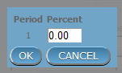 Image 14 - Distribution Periods (Monthly – Quarterly – Yearly) - Product)
Capitation PaymentThe section allows definition of parameters of a capitation formula used for remuneration of selected levels of health facilities within the insurance product. The report Capitation Payment is used for calculation of the amount of capitation payment for individual health facilities. The parameters of the capitation formula are the following:
Level 1The first level of health facilities can be selected that should be included in the calculation of capitation payments. The options are the following levels of a health facility: Dispensary, Health Centre, and Hospital.
Sub Level 1The sub-level of the first level of health facilities can be selected that should be included in calculation of capitation payments. If the sub level is not selected, all health facilities of the specified level are included irrespective of their sub-level.
Level 2The second level of health facilities can be selected that should be included in the calculation of capitation payments. The options are the following levels of a health facility:Dispensary,Health Centre, andHospital.
Sub Level 2The sub-level of the second level of health facilities can be selected that should be included in calculation of capitation payments. If the sub level is not selected, all health facilities of the specified level are included irrespective of their sub-level.
Level 3The third level of health facilities can be selected that should be included in the calculation of capitation payments. The options are the following levels of a health facility:Dispensary,Health Centre, andHospital.
Sub Level 3The sub-level of the third level of health facilities can be selected that should be included in calculation of capitation payments. If the sub level is not selected, all health facilities of the specified level are included irrespective of their sub-level.
Level 4The fourth level of health facilities can be selected that should be included in the calculation of capitation payments. The options are the following levels of a health facility:Dispensary,Health Centre, andHospital.
Sub Level 4The sub-level of the fourth level of health facilities can be selected that should be included in calculation of capitation payments. If the sub level is not selected, all health facilities of the specified level are included irrespective of their sub-level.
Share of ContributionThe share of allocated contributions for given insurance product and the period specified for the report Capitation Payment that should be used for calculation of capitation payments for individual health facilities. The amount specified is interpreted as a percentage.
Weight of PopulationThe weight can be entered that is used for the number of population living in catchments areas of individual health facilities. The amount specified is interpreted as a percentage.
Weight of Number of FamiliesThe weight can be entered that is used for the number of families living in catchments areas of individual health facilities. The amount specified is interpreted as a percentage.
Weight of Insured PopulationThe weight can be entered that is used for the number of insured population by given insurance product and living in catchments areas of individual health facilities. The amount specified is interpreted as a percentage.
Weight of Number of Insured FamiliesThe weight can be entered that is used for the number of insured families by given insurance product and living in catchments areas of individual health facilities. The amount specified is interpreted as a percentage.
Weight of Number of VisitsThe weight can be entered that is used for the number of contacts of insured by given insurance product and living in catchments areas of individual health facilities. The amount specified is interpreted as a percentage.
Weight of Adjusted AmountThe weight can be entered that is used for the adjusted amount on claims for insured by given insurance product and living in catchments areas of individual health facilities. The amount specified is interpreted as a percentage.Note. The capitation formula is defined as follows:
Where
is the amount of capitation payment for i-th health facility
is the value of the indicator of the type a for the i-th health facility.
may be:
- Population living in catchments area of the health facility
- Number of families living in catchments area of the health facility
- Insured population living in catchments area of the health facility
- Insured number of families living in catchments area of the health facility
- Number of claims (contacts) with the health facility by insured in the catchment area
- Adjusted amount
*is the amount of contributions for given insurance product for given period *
is the formula parameter Share of contribution
is the weight of the indicator of the type a .
may be:
- Weight of Population
- Weight of Number of Families
- Weight of Insured Population
- Weight of Number of Insured Families
- Weight of Number of Visits
- Weight of Adjusted Amount
2. Saving
Once all mandatory data is entered, clicking on the
Savebutton will save the record. The user will be re-directed back to the Product Control Page, with the newly saved record displayed and selected in the result panel. A message confirming that the product has been saved will appear on the Information Panel.3. Mandatory data
If mandatory data is not entered at the time the user clicks the
Savebutton, a message will appear in the Information Panel, and the data field will take the focus (by an asterisk on the right of the corresponding data field).4. Cancel
By clicking on the
Cancelbutton, the user will be re-directed to the Product Control Page.


{kind=link}
{kind=link}
{kind=link}
1.3.1.5 Adding a Product¶
Click on the Add button to re-direct to the Product Page.
When the page opens all entry fields are empty. See the Product Page information on the data entry and mandatory fields.
1.3.1.6 Editing a Product¶
Click on the Edit button to re-direct to the ProductPage.
The page will open with the current information loaded into the data entry fields. See the Product Page for information on the data entry and mandatory fields
1.3.1.7 Duplicating a Product¶
Click on the Duplicate button to re-direct to the Product Page.
The page will open with all the current information for the selected product, (except for the product code which should be unique), loaded into the data entry fields. See the Product Page for information on the data entry and mandatory fields. To save the record, enter a unique code before clicking on save.
1.3.1.8 Deleting a Product¶
Because of potential problems with synchronization of data between off-line and on-line version, it is not possible delete insurance products currently.
1.3.2 Health Facilities Administration¶
The register of health facilities contains all health facilities contracted and/or eligible for submitting of claims by/to the health insurance scheme. Health Facility administration is restricted to users with the role of Scheme Administrator.
1.3.2.1 Pre-conditions¶
A health facility may only be added if the management of the scheme administration contracts it or if eligibility of submitting of claims can be derived from the legislation. It may thereafter be edited; however, approval of the management of the scheme administration is required for a change of the pricelists associated with the health facility. Deletion of a health facility normally will occur when a Health Facility stops its activity or the contract with the health facility with the scheme administration is cancelled.
1.3.2.2 Navigation¶
Image 15 - Navigation Health Facilities
All functionality for use with the administration of health facilities can be found under the main menu Administration, sub menu Health Facilities.
Clicking on the sub menu Health Facilities re-directs the current user to the Health Facilities Control Page.

Image 16 - Health Facilities Control Page
1.3.2.3 Health Facilities Control PAGE¶
The Health Facilities Control Page is the central point for all health facilities administration. By having access to this page, it is possible to add, edit, delete and search. The page is divided into four panels (Image 16 - Health Facilities Control Page)
- Search Panel
The Search Panel allows a user to select specific criteria to minimise the search results. In the case of health facilities the following search options are available which can be used alone or in combination with each other.
CodeType in the beginning of; or the fullCode; to search for health facilities with aCode, which starts with or matches completely, the typed text.
NameType in the beginning of; or the fullName; to search for health facilities with aName, which starts with or matches completely, the typed text.
FaxType in the beginning of; or the fullFaxto search for health facilities with aFax, which starts with or matches completely, the typed number.
LevelSelect theLevel; from the list of levels of health facilities (Dispensary, Health Centre, Hospital) by clicking on the arrow on the right of the selector, to select health facilities of a specific level of service.
Phone NumberType in the beginning of; or the fullPhone Numberto search for health facilities with aPhone Number, which starts with or matches completely, the typed number.
Legal FormSelect theLegal Form; from the list of legal forms (Government, District organization, Private Organisation, Charity) by clicking on the arrow on the right of the selector, to select health facilities of a specific legal form.
RegionSelect theRegion; from the list of districts by clicking on the arrow on the right of the selector to select health facilities from a specific region. Note: The list will only be filled with the regions assigned to the current logged in user. If this is only one then this region will be automatically selected.
DistrictSelect theDistrict; from the list of districts by clicking on the arrow on the right of the selector to select health facilities from a specific district. Note: The list will only be filled with the districts that belong to the selected region and that are assigned to the current logged in user. If this is only one then the district will be automatically selected.
Care TypeSelect theCare Typefrom the list of types (In-patient, Out-patient, Both) of provided health care by clicking on the arrow on the right of the selector, to select health facilities with a specific type.
HistoricalClick onHistoricalto see historical records matching the selected criteria. Historical records are displayed in the result with a line through the middle of the text (strikethrough) to clearly define them from current records (Image 17 - Historical Records - Result Panel)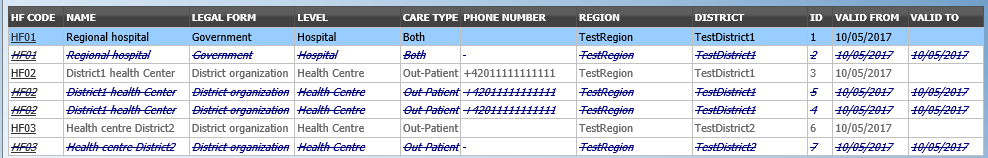Image 17 - Historical Records - Result Panel
Search buttonOnce the criteria have been entered, use the search button to filter the records, the results will appear in the Result Panel.
- Result Panel
The result panel displays a list of all health facilities found, matching the selected Criteria in the search panel. The currently selected record is highlighted with light blue, while hovering over records changes the highlight to yellow (Image 18 - Selected record (blue), hovered records (yellow) - Result Panel). The leftmost record contains a hyperlink which if clicked, re-directs the user to the actual record for detailed viewing if it is a historical record or editing if it is the current record.
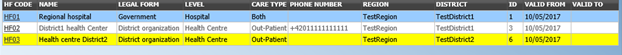Image 18 - Selected record (blue), hovered records (yellow) - Result Panel
A maximum of 15 records are displayed at one time, further records can be viewed by navigating through the pages using the page selector at the bottom of the result Panel (Image 19 - Page selector- Result Panel)
Image 19 - Page selector- Result Panel
- Button Panel
With exception of the
Cancelbutton, which re-directs to the Home Page, and theAddbutton which re-directs to the health facility page, the button panel (the buttonsEditandDelete)is used in conjunction with the current selected record (highlighted with blue). The user should select first a record by clicking on any position of the record except the leftmost hyperlink, and then click on the button.
- Information Panel
The Information Panel is used to display messages back to the user. Messages will occur once a health facility has been added, updated or deleted or if there was an error at any time during the process of these actions.
1.3.2.4 Health Facility Page¶
1. Data Entry
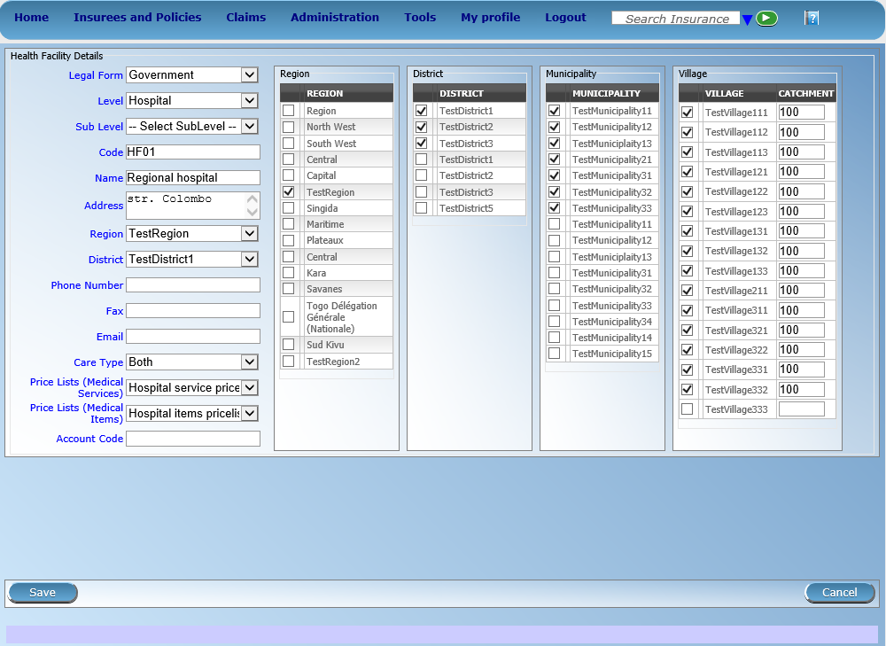Image 20 - Health Facility Page
CodeEnter the code for the health facility. Mandatory, 8 characters.
nameEnter the name for the health facility. Mandatory, 100 characters maximum.
Legal FormSelect the legal form of the health facility from the list (Government, District organization, Private Organisation, Charity), by clicking on the arrow on the right hand side of the lookup. Mandatory.
LevelSelect a level from the list levels (Dispensary, Health Centre, Hospital), by clicking on the arrow on the right hand side of the lookup. Mandatory.
Sub LevelSelect a sub-level from the list sub-levels (No Sublevel, Integrated, Reference), by clicking on the arrow on the right hand side of the lookup. Mandatory.
AddressEnter the address of the health facility. Mandatory, 100 characters maximum.
RegionSelect theRegion; from the list of regions by clicking on the arrow on the right of the selector to enter the region in which the health facility is located. Note: The list will only be filled with the regions assigned to the current logged in user. If this is only one then this region will be automatically selected. Mandatory.
DistrictSelect thedistrict; from the list of districts by clicking on the arrow on the right of the selector to enter the district in which the health facility is located. Note: The list will only be filled with the districts assigned to the selected region and to districts assigned to the currently logged in user. If this is only one then the district will be automatically selected. Mandatory.
Phone NumberEnter the phone number for the health facility. 50 characters maximum.
FaxEnter the fax number for the health facility. 50 characters maximum.
Care TypeSelect the type of health care provided by the health facility from the list (In-patient, Out-patient, Both), by clicking on the arrow on the right hand side of the lookup. Mandatory.
Price Lists (Medical Services)Select the health facilities price lists (for medical services) from the list by clicking on the arrow on the right hand side of the lookup. The pricelist contains the list of medical services and their prices agreed between the health facility (or corresponding group of health facilities) and the scheme administration which can be invoiced by the health facility and remunerated by the scheme administration. Note: The list will only be filled with the pricelists associated with the previously selected district, regional and nationwide pricelists assigned to the current logged in user.
Price Lists (Medical Items)Select the health facilities price lists (medical items) from the list by clicking on the arrow on the right hand side of the lookup. The pricelist contains the list of medical items and their prices agreed between the health facility (or corresponding group of health facilities) and the scheme administration which can be invoiced by the health facility and remunerated by the scheme administration. Note: The list will only be filled with the pricelists associated with the previously selected district, regional and nationwide pricelists assigned to the current logged in user.
Account CodeEnter the account code (Identification for the accounting software), which will be used in reports on remuneration to be received by the health facility. 25 characters maximum.
Region, District, Municipality, Village, Catchment gridCheck the locations that define the catchment area of the health facility. Specify the percentage of the population of a village that belong to the catchment area in the catchment column. Default is 100%.2. Saving
Once all mandatory data is entered, clicking on the
Savebutton will save the record. The user will be re-directed back to theHealth Facility Control Page, with the newly saved record displayed and selected in the result panel. A message confirming that the health facility has been saved will appear on the Information Panel.3. Mandatory data
If mandatory data is not entered at the time the user clicks the
Savebutton, a message will appear in the Information Panel, and the data field will take the focus (by an asterisk on the right of the corresponding data field).4. Cancel
By clicking on the
Cancelbutton, the user will be re-directed to the Health Facilities Control Page.
1.3.2.5 Adding a Health Facility¶
Click on the Add button to re-direct to the Health Facility Page
When the page opens all entry fields are empty. See the Health Facility Page for information on the data entry and mandatory fields.
1.3.2.6 Editing a Health Facility¶
Click on the Edit button to re-direct to the Health Facility Page.
The page will open with the current information loaded into the data entry fields. See the Health Facility Page for information on the data entry and mandatory fields
1.3.2.7 Deleting a Health Facility¶
Click on the Delete button to delete the currently selected record.
Before deleting a confirmation popup (Image 21 - Delete confirmation- Button Panel) is displayed, which requires the user to confirm if the action should really be carried out?
Image 21 - Delete confirmation- Button Panel
When a health facility is deleted, all records retaining to the deleted health facility will still be available by selecting historical records.
1.3.3 Medical Services Administration¶
The register of Medical Services contains all medical services that can be included in packages of benefits of insurance products administered and remunerated by the health insurance scheme. Administration of the register of medical services is restricted to users with the role of Scheme Administrator.
1.3.3.1 Pre-conditions¶
A medical service may only be added or thereafter edited or deleted, after the approval of the management of the scheme administration.
1.3.3.2 Navigation¶
All functionality for use with the administration of Medical Services can be found under the main menu Administration, sub menu Medical Services.

Image 22 - Navigation Medical Services
Clicking on the sub menu Medical Services re-directs the current user to the Medical Services Control Page.

Image 23 - Medical Services Control Page
1.3.3.3 Medical Services Control Page¶
The Medical Services Control Page is the central point for all medical service administration. By having Access to this panel, it is possible to add, edit, delete and search. The panel is divided into four panels (Image 23 - Medical Services Control Page)
- Search Panel
The Search Panel allows a user to select specific criteria to minimise the search results. In the case of medical services the following search options are available which can be used alone or in combination with each other.
CodeType in the beginning of; or the fullCode; to search for medical services with aCode, which starts with or matches completely, the typed text.
NameType in the beginning of; or the fullNameto search for medical services with aName, which starts with or matches completely, the typed text.
TypeSelect theType; from the list of types (Preventive, Curative) by clicking on the arrow on the right of the selector, to select medical services of a specific type.
HistoricalClick onHistoricalto see historical records matching the selected criteria. Historical records are displayed in the result with a line through the middle of the text (strikethrough) to clearly define them from current records (Image 24 - Historical records - Result Panel)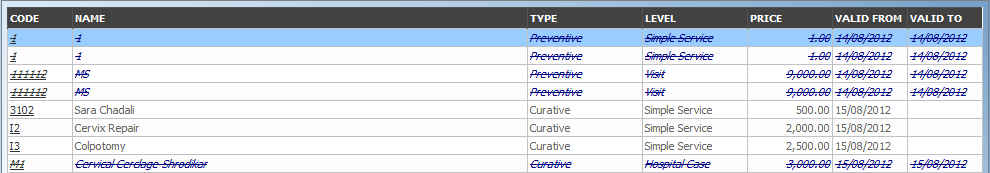Image 24 - Historical records - Result Panel
Search ButtonOnce the criteria have been entered, use the search button to filter the records, the results will appear in the result panel.
- Result Panel
The Result Panel displays a list of all medical services found, matching the selected Criteria in the search panel. The currently selected record is highlighted with light blue, while hovering over records changes the highlight to yellow (Image 25 - Selected record (blue), hovered records (yellow) - Result Panel). The leftmost record contains a hyperlink which if clicked, re-directs the user to the actual record for detailed viewing if it is a historical record or editing if it is the current record.

Image 25 - Selected record (blue), hovered records (yellow) - Result Panel
A maximum of 15 records are displayed at one time, further records can be viewed by navigating through the pages using the page selector at the bottom of the result Panel (Image 26 - Page Selector - Result Panel).
Image 26 - Page Selector - Result Panel
- Button Panel
With exception of the cancel button, which re-directs to the Home Page, and the
Addbutton which re-directs to the Medical Service Page, the button panel (the buttonsEndandDelete) is used in conjunction with the current selected record (highlighted with blue). The user should first select a record by clicking on any position of the record except the leftmost hyperlink, and then click on the button.
- Information Panel
The Information Panel is used to display messages back to the user. Messages will occur once a medical service has been added, updated or deleted or if there was an error at any time during the process of these actions.
1.3.3.4 Medical Service Page¶
1. Data Entry

Image 27 - Medical Service Page
CodeEnter the code for the medical service. Mandatory, 6 characters.
NameEnter the name of the medical service. Mandatory, 100 characters maximum.
CategoryChoose the category (Surgery, Consultation, Delivery, Antenatal, Other) which the medical service belongs to.
TypeChoose one from the options available (Preventive, Curative), the type of the medical service. Mandatory.
LevelSelect from the list )Simple Service, Visit, Daz of Staz, Hospital Case), the level for the medical service. Mandatory.
PriceEnter the price a general price that can be overloaded in pricelists. Full general price (including potential cost sharing of an insuree) for the medical service. Mandatory.
Care TypeChoose one from the options available (Out-patient, In-patient, Both), the limitation of provision of the medical service to the specific type of health care. Mandatory.
FrequencyEnter the limitation of frequency of provision in a number of days within which a medical service can be provided to a patient not more than once. If the frequency is zero, there is no limitation. Note: By default the frequency is 0.
PatientChoose one or a combination of the options available, to specify which patient type the medical service is applicable to. Note: By default all patient options are checked (selected).2. Saving
Once all mandatory data is entered, clicking on the
Savebutton will save the record. The user will be re-directed back to the Medical Services Control Page, with the newly saved record displayed and selected in the result panel. A message confirming that the medical service has been saved will appear on the Information Panel.3. Mandatory data
If mandatory data is not entered at the time the user clicks the
Savebutton, a message will appear in the Information Panel, and the data field will take the focus (by an asterisk on the right of the corresponding data field).4. Cancel
By clicking on the
Cancelbutton, the user will be re-directed to the Medical Services Control Page.
1.3.3.5 Adding a Medical Service¶
Click on the Add button to re-direct to the Medical Service Page.
When the page opens all entry fields are empty. See the Medical Service Page for information on the data entry and mandatory fields.
1.3.3.6 Editing a Medical Service¶
Click on the Edit button to re-direct to the Medical Service Page.
The page will open with the current information loaded into the data entry fields. See the Medical Service Page for information on the data entry and mandatory fields.
1.3.3.7 Deleting a Medical Service¶
Click on the Cancel button to delete the currently selected record; the user is re-directed the Medical Services Control Page.
Before deleting a confirmation popup (Image 28 - Delete confirmation- Button Panel) is displayed, which requires the user to confirm if the action should really be carried out?
Image 28 - Delete confirmation- Button Panel
When a medical service is deleted, all records retaining to the deleted medical service will still be available by selecting historical records.
1.3.4 Medical Items Administration¶
The register of Medical Items contains all medical items (drugs, prostheses) that can be included in packages of benefits of insurance products within the health insurance scheme and are remunerated by the scheme administration. Administration of the register of medical items is restricted to users with the role of Scheme Administrator
1.3.4.1 Pre-conditions¶
A medical item may only be added or thereafter edited or deleted, after the approval of the management of the scheme administration.
1.3.4.2 Navigation¶
All functionality for use with the administration of medical items can be found under the main menu Administration, sub menu Medical Items
Image 29 - Navigation Medical Items
Clicking on the sub menu Medical Items re-directs the current user to the Medical Items Control Page.

Image 30 - Medical Items Control Page
1.3.4.3 Medical Items Control Page¶
The Medical Items Control Page is the central point for all medical item administration. By having access to this page, it is possible to add, edit, delete and search. The panel is divided into four panels (Image 30 - Medical Items Control Page)
- Search Panel
The search panel allows a user to select specific criteria to minimise the search results. In the case of medical items the following search options are available which can be used alone or in combination with each other.
CodeType in the beginning of; or the fullCode; to search for medical items with aCode, which starts with or matches completely, the typed text.
NameType in the beginning of; or the fullNameto search for medical items with aName, which starts with or matches completely, the typed text.
TypeSelect theType; from the list of types (Drugs, Medical Prostheses) by clicking on the arrow on the right of the selector, to select medical items of a specific type.
PackageType in the beginning of; or the fullPackage; to search for medical items with aPackage, which starts with or matches completely, the typed text.
HistoricalClick onHistoricalto see historical records matching the selected criteria. Historical records are displayed in the result with a line through the middle of the text (strikethrough) to clearly define them from current records (Image 31 - Historical records - Result Panel).
Image 31 - Historical records - Result Panel
Search buttonOnce the criteria have been entered, use the search button to filter the records, the results will appear in the Result Panel.
- Result Panel
The result panel displays a list of all medical items found, matching the selected criteria in the search panel. The currently selected record is highlighted with light blue, while hovering over records changes the highlight to yellow (Image 32 - Selected record (blue), hovered records (yellow) - Result Panel). The leftmost record contains a hyperlink which if clicked, re-directs the user to the actual record for detailed viewing if it is a historical record or editing if it is the current record.
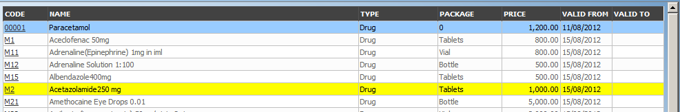Image 32 - Selected record (blue), hovered records (yellow) - Result Panel
A maximum of 15 records are displayed at one time, further records can be viewed by navigating through the pages using the page selector at the bottom of the result Panel (Image 33 - Page selector- Result Panel)
Image 33 - Page selector- Result Panel
- Button Panel
With exception of the
Cancelbutton, which re-directs to the Home Page, and theAddbutton which re-directs to the Medical Item Page, the button panel (the buttonsEditandDelete) is used in conjunction with the current selected record (highlighted with blue). The user should first select a record by clicking on any position of the record except the leftmost hyperlink, and then click on the button.
- Information Panel
The Information Panel is used to display messages back to the user. Messages will occur once a medical item has been added, updated or deleted or if there was an error at any time during the process of these actions.
1.3.4.4 Medical Item Page¶
1. Data Entry

Image 34 - Medical Item Page
CodeEnter the code for the medical item. Mandatory, 6 characters.
NameEnter the name of the medical item. Mandatory, 100 characters maximum.
TypeChoose one from the options available, the type of the medical item. Mandatory.
PackageEnter the package (Indication of type and volume of package in a suitable coding system) for the medical item. Mandatory, 255 characters maximum.
PriceEnter the price (a general price that can be overloaded in pricelists). Full general price including potential cost sharing of an insuree) for the medical item. Mandatory.
Care TypeChoose one from the options available, the limitation of provision of the medical item within the specific type of health care (In-patient, Out-patient or Both). Mandatory.
FrequencyEnter the limitation of frequency of provision in a number of days within which a medical item cannot be provided to a patient not more than once. If the frequency is zero, there is no limitation. Note: By default the frequency is 0.
PatientChoose one or a combination of the options available, to specify which patient type the medical item may be provided to. Note: By default all patients’ options are checked (selected).2. Saving
Once all mandatory data is entered, clicking on the
Savebutton will save the record. The user will be re-directed back to the Medical Items Control Page, with the newly saved record displayed and selected in the Result Panel. A message confirming that the medical item has been saved will appear on the Information Panel.3. Mandatory data
If mandatory data is not entered at the time the user clicks the
Savebutton, a message will appear in the Information Panel, and the data field will take the focus (by an asterisk on the right of the corresponding data field).4. Cancel
By clicking on the
Cancelbutton, the user will be re-directed to the Medical Items Control Page.
1.3.4.5 Adding a Medical Item¶
Click on the Add button to re-direct to the Medical Item Page.
When the page opens all entry fields are empty. See the Medical Item Page for information on the data entry and mandatory fields.
1.3.4.6 Editing a Medical Item¶
Click on the Edit button to re-direct to the Medical Item Page.
The page will open with the current information loaded into the data entry fields. See the Medical Item Page for information on the data entry and mandatory fields.
1.3.4.7 Deleting a Medical Item¶
Click on the Delete button to delete the currently selected record
Before deleting a confirmation popup (Image 35 - Delete confirmation- Button Panel) is displayed, which requires the user to confirm if the action should really be carried out?
Image 35 - Delete confirmation- Button Panel
When the medical item is deleted, all records retaining to the deleted medical item will still be available by selecting historical records.
1.3.5 Medical Service Price Lists Administration¶
Price lists of medical services are tools for specification which medical services and at which prices can be invoiced by contractual health facilities to the scheme administration. Administration of price lists of medical services is restricted to users with the role of Scheme Administrator
1.3.5.1 Pre-conditions¶
A price list of medical services may only be added, after an agreement with a health facility or a group of health facilities on specific prices. Editing of the price list may occur only after an approval of the management of the scheme administration. Deletion of a price list of medical services normally will occur when a price list becomes obsolete.
1.3.5.2 Navigation¶
All functionality for use with the administration of price lists medical services can be found under the main menu Administration, sub menu Price Lists and sub menu Medical Services

Image 36 - Navigation Medical Services Price Lists
Clicking on the sub menu Medical Services re-directs the current user to the Price List Medical Services Control Panel.

Image 37 - Price List Medical Service Control Panel
1.3.5.3 Price List Medical Services Control Page¶
The Price List Medical Services Control Page is the central point for administration of all price lists of medical service. By having access to this panel, it is possible to add, edit, delete and search. The panel is divided into four panels (Image 36 - Navigation Medical Services Price Lists)
- Search Panel
The search panel allows a user to select specific criteria to minimise the search results. In the case of price lists for medical services the following search options are available which can be used alone or in combination with each other.
NameType in the beginning of; or the fullName; to search for price lists medical services with aName, which starts with or matches completely, the typed text.
DateType in the fullDateto search for price lists of medical services with a creationDatewhich matches completely, the typed date. Note: You can also use the button next to the date field to select a date.
Date Selector ButtonClicking on the
Date Selector Buttonwill pop-up an easy to use, calendar selector (image38); by default the calendar will show the current month, or the month of the currently selected date, with the current day highlighted.
- Anytime during the use of the pop-up, the user can see the date of today.
- Clicking on today will close the pop-up and display the today’s date in the corresponding date entry box.
- Clicking on any day of the month will close the pop-up and display the date selected in the corresponding date entry box.
- Clicking on the arrow to the left displays the previous month.
- Clicking on the arrow on the right will displays the following month.
- Clicking on the month will display all the months for the year.
- Clicking on the year will display a year selector.
RegionSelect theRegion; from the list of regions by clicking on the arrow on the right of the selector to select price lists of medical services from a specific region. The option National means that the price list is common for all regions. Note: The list will only be filled with the regions assigned to the current logged in user and with the option National. All nationwide pricelists and all regional pricelists relating to the selected region will be found. If no district is selected then also all district pricelists for districts belonging to the selected region and assigned to the currently logged in user will be found.
DistrictSelect theDistrict; from the list of districts by clicking on the arrow on the right of the selector to select price lists of medical services from a specific district. Note: The list will be only filled with the districts belonging to the selected region. All nationwide pricelists, all regional pricelists relating to the selected region and all district pricelists for the selected district will be found.
HistoricalClick onHistoricalto see historical records matching the selected criteria. Historical records are displayed in the result with a line through the middle of the text (strikethrough) to clearly define them from current records (Image 39 - Historical records - Result Panel)
Image 39 - Historical records - Result Panel
Search buttonOnce the criteria have been entered, use the search button to filter the records, the results will appear in the Result Panel.
- Result Panel
The Result Panel displays a list of all price lists of medical services found, matching the selected criteria in the search panel. The currently selected record is highlighted with light blue, while hovering over records changes the highlight to yellow (Image 40 - Selected record (blue), hovered records (yellow) - Result Panel). The leftmost record contains a hyperlink which if clicked, re-directs the user to the actual record for detailed viewing if it is a historical record or editing if it is the current record.

Image 40 - Selected record (blue), hovered records (yellow) - Result Panel
A maximum of 15 records are displayed at one time, further records can be viewed by navigating through the pages using the page selector at the bottom of the result Panel (Image 41 - Page selector- Result Panel)
Image 41 - Page selector- Result Panel
- Button Panel
With exception of the
Cancelbutton, which re-directs to the Home Page, and theAddbutton which re-directs to the Price List Medical Service Page, the Button Panel (the buttonsEditandDuplicate) is used in conjunction with the current selected record (highlighted with blue). The user should first select a record by clicking on any position of the record except the leftmost hyperlink, and then click on the button.
- Information Panel
The Information Panel is used to display messages back to the user. Messages will occur once a price list of medical services has been added, updated or deleted or if there was an error at any time during the process of these actions.
1.3.5.4 Price List Medical Services Page¶
1. Data Entry

Image 42 - Price List Medical Service Page
NameEnter the name for the price list of medical services. Mandatory, 100 characters maximum.
DateEnter the creation date for the price list of medical services. Note: You can also use the button next to the date field to select a date to be entered.
RegionSelect theRegion; from the list of regions by clicking on the arrow on the right of the selector to enter the region in which the price list of medical services is to be used. The region National means that the price list is common for all regions. The list will only be filled with the regions assigned to the current logged in user and with the option National. Mandatory.
DistrictSelect theDistrict; from the list of districts by clicking on the arrow on the right of the selector to enter the district in which the price list of medical services is to be used. Note: The list will be only filled with the districts belonging to the selected region and currently logged in user. It is not mandatory to enter a district, not selecting a district will mean the price list of medical services is used in all districts of the region or nationwide if the region National is selected.
Medical ServicesSelect from the list of available medical services the medical services which the price list of medical service should contain, by either clicking on thecheck allbox at the top of the list of medical services, or by selectively clicking on thecheck boxto the left of a medical service. The list shows the medical services displaying the code, name, type and price for reference. There is also an extra column, Overrule, which can be used to overrule the pre-set price. By clicking once on the row desired item in the overrule column, a new price can be entered for the individual service. This occurs when price agreed between a health facility or group of health facilities and the health insurance administration differs from the common price in the register of medical services.2. Saving
Once all mandatory data is entered, clicking on the
Savebutton will save the record. The user will be re-directed back to the Price List Medical Services Control Page, with the newly saved record displayed and selected in the result panel. A message confirming that the price list medical service has been saved will appear on the Information Panel.3. Mandatory Data
If mandatory data is not entered at the time the user clicks the
Savebutton, a message will appear in the Information Panel, and the data field will take the focus (by an asterisk on the right of the corresponding data field).4. Cancel
By clicking on the
Cancelbutton, the user will be re-directed to the Price List Medical Services Control Page.
1.3.5.5 Adding a Price List of Medical Services¶
Click on the Add button to re-direct to the Price List Medical Services Page.
When the page opens all entry fields are empty. See the Price List Medical Services Page for information on the data entry and mandatory fields.
1.3.5.6 Editing a Price List of Medical Services¶
Click on the Edit button to re-direct to the Price List Medical Services Page.
The page will open with the current information loaded into the data entry fields. See the Price List Medical Services Page for information on the data entry and mandatory fields.
1.3.5.7 Duplicating a Price List of Medical Services¶
Click on the Duplicate button to re-direct to the Price List Medical Services Page.
The page will open with all the current information for the selected pricelist, (except for the pricelist name which should be unique), loaded into the data entry fields. See the Price List Medical Services Page for information on the data entry and mandatory fields. To save the record, enter a unique code before clicking on save.
1.3.5.8 Deleting a Price List of Medical Services¶
Click on the Delete button to delete the currently selected record.
Before deleting a confirmation popup (Image 43 - Delete Confirmation - Button Panel) is displayed, which requires the user to confirm if the action should really be carried out?
Image 43 - Delete Confirmation - Button Panel
When a price list medical service is deleted, all records retaining to the deleted price list medical service will still be available by selecting historical records.
1.3.6 Medical Item Price Lists Administration¶
Pricelists of medical items are tools for specification which medical items and at which prices can be invoiced by contractual health facilities to the scheme administration. Administration of pricelists of medical items is restricted to users with the role of Scheme Administrator.
1.3.6.1 Pre-conditions¶
A price list of medical items may only be added, after an agreement with a health facility or a group of health facilities on specific prices. Editing of the price list may occur only after an approval of the management of the scheme administration. Deletion of a price list of medical Items normally will occur when a price list becomes obsolete.
1.3.6.2 Navigation¶
All functionality for use with the administration of medical items price lists can be found under the main menu Administration, sub menu Price Lists, sub menu Medical Items.

Image 44 - Navigation Price Lists Medical Items
Clicking on the sub menu Medical Items re-directs the current user to the Price List Medical Items Control Page.
Image 45 - Price List Medical Items Control Page
1.3.6.3 Price List Medical Items Control Page¶
The Price List Medical Items Control Page is the central point for all medical item price list administration. By having access to this panel, it is possible to add, edit, delete and search. The panel is divided into four panels (Image 48 - Selected record (blue), hovered records (yellow) - Result Panel).
- Search Panel
The search panel allows a user to select specific criteria to minimise the search results. In the case of price lists for medical items the following search options are available which can be used alone or in combination with each other.
NameType in the beginning of; or the fullName; to search for price lists medical items with a Name, which starts with or matches completely, the typed text.
DateType in the fullDateto search for price lists of medical items with a creation Date which matches completely, the typed date. Note: You can also use the button next to the date field to select a date.
Date Selector ButtonClicking on the
Date Selector Buttonwill pop-up an easy to use, calendar selector (Image 45 - Price List Medical Items Control Page); by default the calendar will show the current month, or the month of the currently selected date, with the current day highlighted.
- At anytime during the use of the pop-up, the user can see the date of today.
- Clicking on today will close the pop-up and display the today’s date in the corresponding date entry box.
- Clicking on any day of the month will close the pop-up and display the date selected in the corresponding date entry box.
- Clicking on the arrow to the left displays the previous month.
- Clicking on the arrow on the right will displays the following month.- Clicking on the month will display all the months for the year.
- Clicking on the year will display a year selector.
RegionSelect theRegion; from the list of regions by clicking on the arrow on the right of the selector to select price lists of medical items from a specific region. The option National means that the price list is common for all regions. Note: The list will only be filled with the regions assigned to the current logged in user and with the option National. All nationwide pricelists and all regional pricelists relating to the selected region will be found. If no district is selected the also all district pricelists for districts belonging to the selected region will be found.
DistrictSelect theDistrict; from the list of districts by clicking on the arrow on the right of the selector to select price lists medical items from a specific district. Note: The list will be only filled with the districts belonging to the selected region and assigned to the currently logged in user. All nationwide pricelists, all regional pricelists relating to the selected region and all district pricelists for the selected district will be found.
HistoricalClick onHistoricalto see historical records matching the selected criteria. Historical records are displayed in the result with a line through the middle of the text (strikethrough) to clearly define them from current records (Image 47 - Historical records - Result Panel).
Image 47 - Historical records - Result Panel
Search buttonOnce the criteria have been entered, use the search button to filter the records, the results will appear in the result panel.
- Result Panel
The Result Panel displays a list of all price lists of medical items found, matching the selected criteria in the search panel. The currently selected record is highlighted with light blue, while hovering over records changes the highlight to yellow (Image 48 - Selected record (blue), hovered records (yellow) - Result Panel). The leftmost record contains a hyperlink which if clicked, re-directs the user to the actual record for detailed viewing if it is a historical record or editing if it is the current record.

Image 48 - Selected record (blue), hovered records (yellow) - Result Panel
A maximum of 15 records are displayed at one time, further records can be viewed by navigating through the pages using the page selector at the bottom of the result Panel (Image 49 - Page selector- Result Panel)
Image 49 - Page selector- Result Panel
- Button Panel
With exception of the
Cancelbutton, which re-directs to the Home Page, and theAddbutton which re-directs to the Price List Medical Item Page, the button panel (the buttonsEditandDelete) is used in conjunction with the current selected record (highlighted with blue). The user should first select a record by clicking on any position of the record except the leftmost hyperlink, and then click on the button.
- Information Panel
The Information Panel is used to display messages back to the user. Messages will occur once a price list medical item has been added, updated or deleted or if there was an error at any time during the process of these actions.
1.3.6.3.1 Price List Medical Item Page¶
1. Data entry

Image 50 - Price List Medical Item Page
NameEnter the name for the price list of medical items. Mandatory, 100 characters maximum.
DateEnter the creation date for the price list of medical items. Note: You can also use the button next to the date field to select a date to be entered.
RegionSelect theRegion; from the list of regions by clicking on the arrow on the right of the selector to enter the region in which the price list of medical items is to be used. The district National means that the price list is common for all regions. Note: The list will only be filled with the regions assigned to the current logged in user and with the option National. Mandatory.
DistrictSelect theDistrict; from the list of districts by clicking on the arrow on the right of the selector to enter the district in which the price list of medical items is to be used. Note: The list will be only filled with the districts belonging to the selected region and currently logged in user. It is not mandatory to enter a district, not selecting a district will mean the price list of medical items is used in all districts of the region or nationwide if the region National is selected .
Medical ItemsSelect from the list of available medical items the medical items which the price list medical item contains, by either clicking on thecheck all boxat the top of the list of medical items, or by selectively clicking on thecheck boxto the left of the medical item. The list shows the medical items displaying the code, name, type and price for reference. There is also an extra column, Overrule, which can be used to overrule the pre-set price. By clicking once on the row desired item in the overrule column, a new price can be entered for the individual item. This occurs when price agreed between a health facility or group of health facilities and the health insurance administration differs from the common price in the register of medical items.2. Saving
Once all mandatory data is entered, clicking on the
Savebutton will save the record. The user will be re-directed back to the Price list Medical Items Control Page, with the newly saved record displayed and selected in the result panel. A message confirming that the price list of medical items has been saved will appear on the Information Panel.3. Mandatory data
If mandatory data is not entered at the time the user clicks the
Save button, a message will appear in the Information Panel, and the data field will take the focus (by an asterisk on the right of the corresponding data field).4. Cancel
By clicking on the
Cancelbutton, the user will be re-directed to the Price List Medical Items Control Page.
1.3.6.3.2 Adding a Price List of Medical Items¶
Click on the Add button to re-direct to the Price List Medical Item Page.
When the page opens all entry fields are empty. See the Price List Medical Item Page for information on the data entry and mandatory fields.
1.3.6.3.3 Editing a Price List of Medical Items¶
Click on the Edit button to re-direct to the Price List Medical Item Page.
The page will open with the current information loaded into the data entry fields. See the Price List Medical Item Page for information on the data entry and mandatory fields.
1.3.6.3.4 Duplicating a Price List of Medical Items¶
Click on the Duplicate button to re-direct to the Price List Medical Item Page.
The page will open with all the current information for the selected price list, (except for the price list name which should be unique), loaded into the data entry fields. See the Price List Medical Item Page for information on the data entry and mandatory fields. To save the record, enter a unique code before clicking on Save.
1.3.6.3.5 Deleting a Price List of Medical Items¶
Click on the Delete button to delete the currently selected record; the user is re-directed to the Price List Medical Items Control Page.
Before deleting a confirmation popup (Image 51 - Delete confirmation- Button Panel) is displayed, which requires the user to confirm if the action should really be carried out?
Image 51 - Delete confirmation- Button Panel
When a price list of medical items is deleted, all records retaining to the deleted price list of medical items will still be available by selecting historical records.
1.3.7 Users administration¶
User administration is restricted to users with the role of IMIS Administrator.
1.3.7.1 Pre-conditions¶
A user may only be added or thereafter edited, after the approval of the management of the scheme administration. Deletion of a user normally will occur when a user leaves his/her post within the health insurance scheme and/or the scheme administration.
1.3.7.2 Navigation¶
All functionality for use with the administration of users can be found under the main menu Administration, sub menu Users.
Image 52 - Navigation Users
Clicking on the sub menu Users re-directs the current user to the User Control Page.

Image 53 - User Control Page
1.3.7.3 User Control Page¶
The User Control Page is the central point for all user administration. By having access to this page, it is possible to add, edit, delete and search users. The page is divided into four panels (Image 52 - Navigation Users).
- Search Panel
The search panel allows a user to select specific criteria to minimise the search results. In the case of users the following search options are available which can be used alone or in combination with each other.
Last NameType in the beginning of; or the full Last name; to search for users with a Last name, which starts with or matches completely, the typed text.
Login NameType in the beginning of; or the full Login name, to search for users with a Login name, which starts with or matches completely, the typed text.
Phone NumberType in the beginning of; or the full Phone Number, to search for users, with a Phone Number which starts with or matches completely, the typed text.
Other NamesType in the beginning of; or the full Other Names, to search for users, with Other names which start with or match completely the typed text.
RoleSelect the Role; from the list of roles by clicking on the arrow on the right of the selector, to select users of a specific role.
Health FacilitiesSelect the Health Facility; from the list of health facilities by clicking on the arrow on the right of the selector, to select users from a specific health facility. Note: The list will only be filled with the health facilities belonging to the districts assigned to the currently logged in user.
RegionSelect the Region; from the list of regions by clicking on the arrow on the right of the selector to find users with access to a specific region. Note: The list will only be filled with the regions assigned to the current logged in user.
DistrictSelect the District; from the list of districts by clicking on the arrow on the right of the selector to find users with access to a specific district. The list will be only filled with the districts belonging to the selected region.
LanguageSelect the Language; from the list of languages by clicking on the arrow on the right of the selector, to select users with a specific language.
HistoricalClick onHistoricalto see historical records matching the selected criteria. Historical records are displayed in the result with a line through the middle of the text (strikethrough) to clearly define them from current records (Image 54 - Historical records - Result Panel).
Image 54 - Historical records - Result Panel
Search ButtonOnce the criteria have been entered, use the search button to filter the records, the results will appear in the result panel.
- Result Panel
Image 55 - Selected record (blue), hovered records (yellow) - Result Panel
The result panel displays a list of all users found, matching the selected criteria in the search panel. The currently selected record is highlighted with light blue, while hovering over records changes the highlight to yellow (Image 55 - Selected record (blue), hovered records (yellow) - Result Panel). The leftmost record contains a hyperlink which if clicked, re-directs the user to the actual record for detailed viewing if it is a historical record or editing if it is the current record.
A maximum of 15 records are displayed at one time, further records can be viewed by navigating through the pages using the page selector at the bottom of the result Panel (Image 56 - Page selector- Result Panel)
Image 56 - Page selector- Result Panel
- Button Panel
With exception of the
Cancelbutton, which re-directs to the Home Page, and theAddbutton which re-directs to the User Page, the button panel (the buttonsEditandDelete) is used in conjunction with the current selected record (highlighted with blue). The user should first select a record by clicking on any position of the record except the leftmost hyperlink, and then click on the button.
- Information Panel
The Information Panel is used to display messages back to the user. Messages will occur once a user has been added, updated or deleted or if there was an error at any time during the process of these actions.
1.3.7.4 User Page¶
1. Data Entry

Image 57 - User Page
LanguageSelect the user’s preferred language from the list by clicking on the arrow on the right hand side of the lookup. Mandatory.
Last nameEnter the last name (surname) for the user. Mandatory, 100 characters maximum.
Other NamesEnter other names of the user. Mandatory, 100 characters maximum.
Phone NumberEnter the phone number for the user. 50 characters maximum.
Login NameEnter the Login name for the user. This is an alias used for logging into the application; a minimum of 6 and a maximum of 25 characters should be used for the login. Each Login Name should be unique. Mandatory.
PasswordEnter the password for the user. This is used at login to grant access to the application; a minimum of 8 and a maximum of 25 characters should be used for the password. The password should have at least one digit. Mandatory.
Confirm PasswordRe-enter the password. The password must be entered twice, to ensure that there was no mistyping in the first entry. Mandatory.
Health FacilitySelect the health facility that the user belongs to, if applicable, from the list of health Facilities from the list by clicking on the arrow on the right hand side of the lookup. Note: The list will only be filled with the Health Facilities belonging to the districts assigned to the currently logged in user.
RolesSelect from the list of available roles the Roles which the user carries out, by either clicking on theCheck Allbox at the top of the list of Roles, or by selectively clicking on theCheck boxto the left of the role. Mandatory (at least one role must be selected)
RegionsSelect from the list of available regions the region(s) which the user will have access to, by either clicking on theCheck Allbox at the top of the list of regions, or by selectively clicking on theCheck boxto the left of a region. Mandatory (at least one region must be selected). The selection can be done indirectly by selecting a district or some districts.
DistrictsSelect from the list of available districts the district(s) which the user will have access to, by either clicking on theCheck Allbox at the top of the list of districts, or by selectively clicking on theCheck boxto the left of the district. Districts are pre-selected based on the selected region(s). The pre-selection can be modified. Mandatory (at least one district must be selected). The selection can be done indirectly by just selecting a region or some regions.2. Saving
Once all mandatory data is entered, clicking on the
Savebutton will save the record. The user will be re-directed back to the User Control Page, with the newly saved record displayed and selected in the result panel. A message confirming that the user has been saved will appear on the Information Panel.3. Mandatory data
If mandatory data is not entered at the time the user clicks the
Savebutton, a message will appear in the Information Panel, and the data fields will take the focus (by an asterisk on the right of the corresponding data field).4. Cancel
By clicking on the
Cancelbutton, the user will be re-directed to the User Control Page.
1.3.7.5 Adding a User¶
Click on the Add button to re-direct to the User Page.
When the page opens all entry fields are empty. See the User Page for information on the data entry and mandatory fields.
1.3.7.6 Editing a User¶
Click on the Edit button to re-direct to the User Page
The page will open with the current information loaded into the data entry fields. See the User Page for information on the data entry and mandatory fields
1.3.7.7 Deleting a User¶
Click on the Delete button to delete the currently selected record
Before deleting a confirmation popup (Image 58 - Delete confirmation- Button Panel) is displayed, this requires the user to confirm if the action should really be carried out.
Image 58 - Delete confirmation- Button Panel
When a user is deleted, all records retaining to the deleted user will still be available by selecting historical records.
1.3.8 Enrolment Officers Administration¶
Enrolment Officers administration is restricted to users with the role of Scheme Administrator.
1.3.8.1 Pre-conditions¶
An enrolment officer may only be added after the approval of the management of the scheme administration with engaging of a new enrolment officer. Editing may be done on all fields; however, approval of the management of the scheme administration is usually required for a substitution of an enrolment officer. Deletion will normally occur when an enrolment officer leaves his post within the scheme administration.
1.3.8.2 Navigation¶
All functionality for use with the administration of enrolment officers can be found under the main menu Administration, sub menu Enrolment Officers.

Image 59 - Navigation Enrolment Officers
Clicking on the sub menu Enrolment Officers re-directs the current user to the Enrolment Officers Control Page..

Image 60 - Enrolment Officers Control Page
1.3.8.3 Enrolment Officers Control Page¶
The Enrolment Officers Control Page is the central point for all enrolment officer administration. By having access to this page, it is possible to add, edit, delete and search. The page is divided into four panels (Image 60 - Enrolment Officers Control Page).
- Search Panel
The search panel allows a user to select specific criteria to minimise the search results. In the case of officers the following search options are available which can be used alone or in combination with each other.
Last NameType in the beginning of; or the fullLast name; to search for officers with aLast name, that starts with or matches completely, the typed text.
CodeType in the beginning of; or the fullCodeto search for officers with aCode, that starts with or matches completely, the typed text.
Other NamesType in the beginning of; or the fullOther Namesto search for officers withother names, that starts with or matches completely, the typed text.
Birth Date FromType in a date; or use the Date Selector Button, to enter theBirth Date Fromto search for officers having the same or later birth date. Note. To clear the date entry box; use the mouse to highlight the full date and then press the space key.
Birth Date ToType in a date; or use the Date Selector Button, to enter theBirth Date Toto search for officers having the same or earlier birth date. Note: To clear the date entry box; use the mouse to highlight the full date and then press the space key.
Date Selector buttonClicking on the
Date Selector Buttonwill pop-up an easy to use, calendar selector (image61); by default the calendar will show the current month, or the month of the currently selected date, with the current day highlighted.
- At anytime during the use of the pop-up, the user can see the date of today.
- Clicking on today will close the pop-up and display the today’s date in the corresponding date entry box.
- Clicking on any day of the month will close the pop-up and display the date selected in the corresponding date entry box.
- Clicking on the arrow to the left displays the previous month.
- Clicking on the arrow on the right will displays the following month.
- Clicking on the month will display all the months for the year.
- Clicking on the year will display a year selector.
RegionSelect theRegion; from the list of regions by clicking on the arrow on the right of the selector to select enrolment officers acting in a specific region. Note: The list will only be filled with the regions assigned to the current logged in user.
DistrictSelect theDistrict; from the list of districts by clicking on the arrow on the right of the selector to select enrolment officers acting in a specific district. Note: The list will be only filled with the districts belonging to the selected region and assigned to the current logged in user.
Phone NumberType in the beginning of; or the fullPhone Numberto search for enrolment officers with a Phone Number, that starts with or matches completely, the typed number.
HistoricalClick onHistoricalto see historical records matching the selected criteria. Historical records are displayed in the result with a line through the middle of the text (strikethrough) to clearly define them from current records (Image 62 - Historical records - Result Panel).
Image 62 - Historical records - Result Panel
Search ButtonOnce the criteria have been entered, use thesearch buttonto filter the records, the results will appear in the result panel.
- Result Panel

Image 63 - Selected record (blue), hovered records (yellow) - Result Panel
The result panel displays a list of all officers found, matching the selected Criteria in the search panel. The currently selected record is highlighted with light blue, while hovering over records changes the highlight to yellow (Image 63 - Selected record (blue), hovered records (yellow) - Result Panel). The leftmost record contains a hyperlink which if clicked, re-directs the user to the actual record for detailed viewing if it is a historical record or editing if it is the current record.
A maximum of 15 records are displayed at one time, further records can be viewed by navigating through the pages using the page selector at the bottom of the result Panel (Image 64 - Page selector- Result Panel)
Image 64 - Page selector- Result Panel
- Button Panel
With exception of the
Cancelbutton, which re-directs to the Home Page, and theAddbutton which re-directs to the Enrolment Officer Page, the button panel (the buttonsEditandDeleteis used in conjunction with the current selected record (highlighted with blue). The user should first select a record by clicking on any position of the record except the leftmost hyperlink, and then click on the button.
- Information Panel
The Information Panel is used to display messages back to the user. Messages will occur once an officer has been added, updated or deleted or if there was an error at any time during the process of these actions.
1.3.8.4 Enrolment Officer Page¶
1. Data Entry

Image 65 - Enrolment Officer Page
Enrolment Officers Details
CodeEnter the code for the enrolment officer. Mandatory, 8 characters maximum.
Last NameEnter the last name (surname) for the enrolment officer. Mandatory, 100 characters maximum.
Other NamesEnter other names of the enrolment officer. Mandatory, 100 characters maximum.
Date of BirthEnter the date of birth for the enrolment officer. Note. To clear the date entry box; use the mouse to highlight the full date and then press the space key.
Phone NumberEnter the phone number for the enrolment officer. 50 characters maximum.
Permanent Address DetailsEnter details of the place of living of the enrolment officer.
RegionSelect from the list of available regions the region to a district in which the enrolment officer will act. Mandatory
DistrictSelect from the list of available districts the district in which the enrolment officer will act. Note: The list will be only filled with the districts belonging to the selected region. Mandatory .
SubstitutionSelect from the list of available enrolment officers the enrolment officer which will substitute the current enrolment officer Substitution means that all prompts to renewals/feedback will be directed to the substituting enrolment officer. Note: The list contains enrolment officers who already exist in the system and who have at least on location common with the enrolment officer to be substituted.
Works ToEnter the date which the substituted enrolment officer will work up to. Note. To clear the date entry box; use the mouse to highlight the full date and then press the space key.
CommunicateCheck the boxCommunicateif the enrolment officer should receive SMS messages alerting him/her about a need of renewing policies of families/groups he/she is assigned to.
MunicipalitiesSelect from the list of available municipalities the municipality(s) which the enrolment officer is acting in, by either clicking on theCheck Allbox at the top of the list of municipalities, or by selectively clicking on theCheck boxto the left of the municipality. Mandatory (at least one municipality must be selected.
VillagesSelect from the list of available villages the village(s) which the enrolment officer is acting in, by either clicking on theCheck Allbox at the top of the list of villages, or by selectively clicking on theCheck boxto the left of the village. Villages are pre-selected based on the selected municipality. The pre-selection can be modified. Mandatory (at least one village must be selected.
village Officer Details
CodeEnter the code for the Village Executive officer. 25 characters maximum.
Last nameEnter the last name (surname) for the Village Executive officer. 100 characters maximum.
Other NamesEnter other names of the Village Executive officer. 100 characters maximum.
Phone NumberEnter the phone number for the Village Executive officer. 25 characters maximum.
Date of BirthEnter the date of birth for the Village Executive officer. Note. To clear the date entry box; use the mouse to highlight the full date and then press the space key.2. Saving
Once all mandatory data is entered, clicking on the
Savebutton will save the record. The user will be re-directed back to the Enrolment Officers Control Page, with the newly saved record displayed and selected in the result panel. A message confirming that the officer has been saved will appear on the Information Panel.3. Mandatory data
If mandatory data is not entered at the time the user clicks the
Savebutton, a message will appear in the Information Panel, and the data field will take the focus (by an asterisk on the right of the corresponding data field).4. Cancel
By clicking on theCancelbutton, the user will be re-directed to the Enrolment Officers Control Page.
1.3.8.5 Adding an Enrolment Officer¶
Click on the Add button to re-direct to the Enrolment Officer Page.
When the page opens all entry fields are empty. See the Enrolment Officer Page for information on the data entry and mandatory fields
1.3.8.6 Editing an Enrolment Officer¶
Click on the Edit button to re-direct to the Enrolment Officer Page.
The page will open with the current information loaded into the data entry fields. See the Enrolment Officer Page for information on the data entry and manditory fields.
1.3.8.7 Deleting an Enrolment Officer¶
Click on the Delete button to delete the currently selected record.
Before deleting a confirmation popup (Image 66 - Delete confirmation- Button Panel) is displayed, which requires the user to confirm if the action should really be carried out?
Image 66 - Delete confirmation- Button Panel
When an officer is deleted, all records retaining to the deleted officer will still be available by selecting historical records.
1.3.9 Claim Administrators Administration¶
The register contains employees of contractual health facilities responsible for preparation and/or submission of claims. Administration of the register of claim administrators is restricted to users with the role of Scheme Administrator.
1.3.9.1 Pre-conditions¶
A claim administrator may be added after the agreement of a contractual health facility and the management of the scheme administration.
1.3.9.2 Navigation¶
All functionality for use with the administration of claim administrators can be found under the main menu Administration, submenu Claim Administrators.

Image 67 - Navigation Claim Administrators
Clicking on the sub menu Claim Administrators re-directs the current user to the Claim Administrators Control Page.

Image 68 - Claim Administrators Control Page
1.3.9.3 Claim Administrators Control Page¶
The Claim Administrators Control Page is the central point for all claim administrators administration. By having access to this panel, it is possible to add, edit, delete and search claim administrators. The panel is divided into four panels (Image 68 - Claim Administrators Control Page).
- Search Panel
The search panel allows a user to select specific criteria to minimise the search results. In the case of claim administrators the following search options are available which can be used alone or in combination with each other.
Last NameType in the beginning of; or the fullLast name; to search for claim administrator with aLast name, which starts with or matches completely, the typed text.
CodeType in the beginning of; or the fullCodeto search for claim administrator with aCode, which starts with or matches completely, the typed text.
Other NamesType in the beginning of; or the fullOther Namesto search for claim administrator withOther Nameswhich starts with or matches completely, the typed text.
Birth Date FromType in a date; or use the Date Selector Button, to enter theBirth Date Fromto search for claim administrators having the same or later birth date. Note. To clear the date entry box; use the mouse to highlight the full date and then press the space key.
Birth Date ToType in a date; or use the Date Selector Button, to enter the Birth Date To to search for claim administrators having the same or earlier birth date. Note. To clear the date entry box; use the mouse to highlight the full date and then press the space key.
Date Selector ButtonClicking on the
Date Selector Buttonwill pop-up an easy to use, calendar selector (image69); by default the calendar will show the current month, or the month of the currently selected date, with the current day highlighted.
- At any time during the use of the pop-up, the user can see the date of today.
- Clicking on today will close the pop-up and display the today’s date in the corresponding date entry box.
- Clicking on any day of the month will close the pop-up and display the date selected in the corresponding date entry box.
- Clicking on the arrow to the left displays the previous month.
- Clicking on the arrow on the right will displays the following month.
- Clicking on the month will display all the months for the year.
- Clicking on the year will display a year selector.
HF CodeSelectHF Code(a health facility code); from the list of health facility codes by clicking on the arrow on the right of the selector to select claim administrators from a specific health facility. Note: The list will only be filled with the health facilities from districts which are assigned to the current logged in user.
Phone NumberType in the beginning of; or the fullPhone Numberto search for claim administrators with aPhone Number, which starts with or matches completely, the typed number.
HistoricalClick onHistoricalto see historical records matching the selected criteria. Historical records are displayed in the result with a line through the middle of the text (strikethrough) to clearly define them from current records (Image 70 - Historical records - Result Panel).
Image 70 - Historical records - Result Panel
Search ButtonOnce the criteria have been entered, use the search button to filter the records, the results will appear in the Result Panel.
- Result Panel
The Result Panel displays a list of all claim administrators found, matching the selected criteria in the search panel. The currently selected record is highlighted with light blue, while hovering over records changes the highlight to yellow (Image 71 - Selected record (blue), hovered records (yellow) - Result Panel). The leftmost record contains a hyperlink which if clicked, re-directs the user to the actual record for detailed viewing if it is a historical record or editing if it is the current record.

Image 71 - Selected record (blue), hovered records (yellow) - Result Panel
A maximum of 15 records are displayed at one time, further records can be viewed by navigating through the pages using the page selector at the bottom of the result Panel (Image 72 - Page selector- Result Panel)
Image 72 - Page selector- Result Panel
- Button Panel
With exception of the
Cancelbutton, which re-directs to the Home Page, and theAddbutton which re-directs to the Claim Administrator Page, the button panel (the buttonsEditandDelete) is used in conjunction with the current selected record (highlighted with blue). The user should first select a record by clicking on any position of the record except the leftmost hyperlink, and then click on the button.
- Information Panel
The Information Panel is used to display messages back to the user. Messages will occur once an officer has been added, updated or deleted or if there was an error at any time during the process of these actions.
1.3.9.4 Claim Administrator Page¶
1. Data Entry

Image 73 - Claim Administrator Page
claim administrator details
CodeEnter the code for the claim administrator. Mandatory, 8 characters maximum.
Last nameEnter the last name (surname) for the claim administrator. Mandatory, 100 characters maximum.
Other NamesEnter other names of the claim administrator. Mandatory, 100 characters maximum.
Date of BirthEnter the date of birth for the claim administrator. Note. To clear the date entry box; use the mouse to highlight the full date and then press the space key.
Phone NumberEnter the phone number for the claim administrator. 50 characters maximum.
HF CodeSelect from the list of available health facilities the health facility which the claim administrator will have access to and will act for. Mandatory.2. Saving
Once all mandatory data is entered, clicking on the
Savebutton will save the record. The user will be re-directed back to the Claim Administrators Control Page, with the newly saved record displayed and selected in the result panel. A message confirming that the claim administrator has been saved will appear on the Information Panel.3. Mandatory data
If mandatory data is not entered at the time the user clicks the
Savebutton, a message will appear in the Information Panel, and the data field will take the focus (by an asterisk on the right side of the corresponding field).4. Cancel
By clicking on the Cancel button, the user will be re-directed to the Claim Administrators Control Page.
1.3.9.5 Adding a Claim Administrator¶
Click on the Add button to re-direct to the Claim Administrator Page.
When the page opens all entry fields are empty. See the Claim Administrator Page for information on the data entry and mandatory fields
1.3.9.6 Editing a Claim Administrator¶
Click on the Edit button to re-direct to the Claim Administrator Page..
The page will open with the current information loaded into the data entry fields. See the Claim Administrator Page for information on the data entry and mandatory fields
1.3.9.7 Deleting a Claim Administrator¶
Click on the Delete button to delete the currently selected record
Before deleting a confirmation popup (Image 74 - Delete confirmation- Button Panel) is displayed, which requires the user to confirm if the action should really be carried out.
Image 74 - Delete confirmation- Button Panel
When a claim administrator is deleted, all records retaining to the deleted claim administrator will still be available by selecting historical records.
1.3.10 Payers Administration¶
The register of payers contains all institutional payers that can pay contributions on behalf of policy holders (e.g. private organizations, local authorities, cooperatives etc.). Payer administration is restricted to users with the role of Scheme Administrator.
1.3.10.1 Pre-conditions¶
A payer may only be added or thereafter edited or deleted, after the approval of the management of the scheme administration.
1.3.10.1.1 Navigation¶
Image 75 - Navigation Payers
All functionality for use with the administration of payers can be found under the main menu Administration, sub menu Payers.

Image 76 - Payers Control Page
Clicking on the sub menu Payers re-directs the current user to the Payer Control Page.
1.3.10.1.2 Payer Control Page¶
The Payer control Page is the central point for all payer administration. By having access to this page, it is possible to add, edit, delete and search (institutional) payers. The page is divided into four panels (Image 76 - Payers Control Page).
- Search Panel
The search panel allows a user to select specific criteria to minimise the search results. In the case of payers the following search options are available which can be used alone or in combination with each other.
NameType in the beginning of; or the fullname; to search for payers with aname, that starts with or matches completely, the typed text.
RegionSelect theRegion; from the list of regions by clicking on the arrow on the right of the selector to select payers from a specific region. The option National means that the payer is common for all regions. Note: The list will only be filled with the regions assigned to the current logged in user and with the option National. All nationwide payers and all regional payers relating to the selected region will be found. If no district is selected then also all district payers for districts belonging to the selected region will be found.
DistrictSelect thedistrict; from the list of districts by clicking on the arrow on the right of the selector to select payers from a specific district. Note: The list will only be filled with the districts belonging to the selected region and assigned to the currently logged in user. If this is only one then the district will be automatically selected
Phone NumberType in the beginning of; or the fullPhone Numberto search for payers with aPhone Number, that starts with or matches completely, the typed number.
TypeSelect theType; from the list of types of payers by clicking on the arrow on the right of the selector to select payers of specific type.
HistoricalClick onHistoricalto see historical records matching the selected criteria. Historical records are displayed in the result with a line through the middle of the text (strikethrough) to clearly define them from current records (Image 77 - Historical records - Result Panel).
Image 77 - Historical records - Result Panel
Search ButtonOnce the criteria have been entered, use the search button to filter the records, the results will appear in the result panel.
- Result Panel
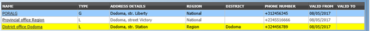Image 78 - Selected record (blue), hovered records (yellow) - Result Panel
The result panel displays a list of all payers found, matching the selected criteria in the search panel. The currently selected record is highlighted with light blue, while hovering over records changes the highlight to yellow (Image 78 - Selected record (blue), hovered records (yellow) - Result Panel). The leftmost record contains a hyperlink which if clicked, re-directs the user to the actual record for detailed viewing if it is a historical record or editing if it is the current record.
A maximum of 15 records are displayed at one time, further records can be viewed by navigating through the pages using the page selector at the bottom of the result Panel (Image 79 - Page selector- Result Panel).
Image 79 - Page selector- Result Panel
- Button Panel
With exception of the
Cancelbutton, which re-directs to the Home Page, and theAddbutton which re-directs to the Payer Page, the button panel (the buttonsEditandDelete) is used in conjunction with the current selected record (highlighted with blue). The user should first select a record by clicking on any position of the record except the leftmost hyperlink, and then click on the button.
- Information Panel
The Information Panel is used to display messages back to the user. Messages will occur once a payer has been added, updated or deleted or if there was an error at any time during the process of these actions.
1.3.10.1.3 Payer Page¶
1. Data Entry

Image 80 - Payer Page
TypeSelect the type of the payer from the list by clicking on the arrow on the right hand side of the lookup. Mandatory.
NameEnter the name for the payer. Mandatory, 100 characters maximum.
AddressEnter address of the payer. Mandatory, 100 characters maximum.
Phone NumberEnter the phone number for the payer. 50 characters maximum.
FaxEnter the fax number for the payer. 50 characters maximum.
RegionSelect theRegion; from the list of regions by clicking on the arrow on the right of the selector to enter the region to which the payer belongs. The region National means that the payer is common for all regions. Note: The list will only be filled with the regions assigned to the current logged in user and with the option National. Mandatory.
DistrictSelect thedistrictto which the payer belongs, from the list by clicking on the arrow on the right hand side of the lookup. Note: The list will only be filled with the districts assigned to the selected region and currently logged in user. If this is only one then the district will be automatically selected. It is not mandatory to enter a district. Not selecting a district will mean the payer operates in all districts of the region or nationwide if the region National is selected.2. Saving
Once all mandatory data is entered, clicking on the
Savebutton will save the record. The user will be re-directed back to the Payer Control Page, with the newly saved record displayed and selected in the result panel. A message confirming that the payer has been saved will appear on the Information Panel.3. Mandatory data
If mandatory data is not entered at the time the user clicks the
Savebutton, a message will appear in the Information Panel, and the data field will take the focus (by an asterisk on the right of the corresponding data field).4. Cancel
By clicking on the
Cancelbutton, the user will be re-directed to the Payer Control Page.
1.3.10.1.4 Adding a Payer¶
Click on the Add button to re-direct to the Payer Page.
When the page opens all entry fields are empty. See the Payer Page for information on the data entry and mandatory fields.
1.3.10.1.5 Editing a Payer¶
Click on the Edit button to re-direct to the Payer Page.
The page will open with the current information loaded into the data entry fields. See the Payer Page for information on the data entry and mandatory fields.
1.3.10.1.6 Deleting a Payer¶
Click on the Delete button to delete the currently selected record.
Before deleting a confirmation popup (Image 81 - Delete confirmation- Button Panel) is displayed, which requires the user to confirm if the action should really be carried out?
Image 81 - Delete confirmation- Button Panel
When a payer is deleted, all records retaining to the deleted payer will still be available by selecting historical records.
1.3.11 Locations Administration¶
Administration of locations is restricted to users with the role of Scheme Administrator.
1.3.11.1 Pre-conditions¶
A region, district, municipality or village may only be added or thereafter edited, after the approval of the management of the scheme administration.
1.3.11.2 Navigation¶
All functionality for use with the administration of locations can be found under the main menu Administration, sub menu Locations.

Image 82 - Navigation Locations
Clicking on the sub menu Locations re-directs the current user to the Locations Page.
Image 83 - Locations Page
1.3.11.3 Locations Page¶
The Locations page is the central point for all locations administration. By having access to this page, it is possible to add, edit, delete and move regions, districts, municipalities and villages. The page is divided into three panels (Image 83 - Locations Page). Note. Only regions and districts with associated municipalities and villages, belonging to the logged in user will be available to edit or delete. On adding a new region or district, the user will automatically become associated with this region or district.
- Locations Panel
This is the working panel and is divided into four vertical panels of
Regions, Districts, MunicipalitiesandVillages.
- Button Panel
It has four buttons,
Add,Edit,DeleteandMovefor actions on the locations and theCancelbutton for re-directing to the Home Page.
Image 84 - Action Buttons - Locations Page
- Information Panel
The Information Panel is used to display messages back to the user. Messages will occur once a region, district or municipality or village has been added, updated, moved or deleted or if there was an error at any time during the process of these actions.
1. Cancel
By clicking on the
Cancelbutton, the user will be re-directed to the Home Page.
1.3.11.4 Adding a Region, District, Municipality, Village¶
Focusing on the appropriate level of locations by clicking on the black or the empty bar on the top of the appropriate panel and clicking on the Add button will open up in the top of the screen an empty entry box. Here one could enter the new code (Code) and name (Name) of a region, district, municipality or village. For villages, the number of male inhabitants (M), female inhabitants (F), inhabitants with the unspecified gender (O) and the number of families (Fam.) can be specified. On clicking the Save button the new record will be saved.
1.3.11.5 Editing a Region, District, Municipality, Village¶
Selecting the location to edit and clicking on the Edit button will open up in the top of the screen an entry box with the name of the location. Here one could change the name. On clicking the Save button, the record will be saved.
1.3.11.6 Deleting a Region, District, Municipality, Village¶
Select first the location to delete and click the Delete button. Note. It is not possible to delete a region, district or municipality with associated districts, municipalities or villages respectively.
Before deleting a confirmation popup (Image 85 - Delete confirmation – Location Page) is displayed, which requires the user to confirm if the action should really be carried out?
Image 85 - Delete confirmation – Location Page
When a region, district, municipality or village is deleted, all records retaining to the deleted region, district, municipality or village will still be available by selecting historical records.
1.3.11.7 Moving a District, Municipality, Village¶
Moving of a location is needed when the administrative division of the territory, on which a health insurance scheme is active, changes. Clicking on the Move button will re-direct to the Move Location Page (Image 86 - Move Location Page).
Image 86 - Move Location Page
The Move Location Page is divided into six panels.
- Locations Panels (A,B,C,D)
The pair of A and B panels is used for moving of a village to another municipality. The pair of B and C panels is used for moving of a municipality to another district. The pair C and D is used for moving a district to another region.
For moving a location, select a location (village, municipality, district) in two adjacent panels by selecting of higher level locations in the fields
Region, District, Municipalityand clicking on the selected location (village, municipality, district) in a panel and on a new parent location in the next panel.Actual moving of a location into a new parent locations is done by clicking on the green arrow between the two corresponding location panels.
- Button Panel
It has only the
Cancelbutton for re-directing to the Location Page.
- Information Panel
The Information Panel is used to display messages back to the user. Messages will occur once a district, municipality or village has been moved or if there was an error at any time during the process of this action.
1.4 Insurees and Policies¶
1.4.1 Insuree Enquiry¶
This functionality is available to users will all roles. The function Insuree Enquiry can be accessed at any time, after login. On the top right hand of the main menu, there is a search feature, allowing the user to enter an Insurance Number for a “quick enquiry”.
Image 87 - Insuree Enquiry Field
By typing in a valid insurance number and pressing the enter key or clicking on the green search button, a pop-up will appear (Image 87 - Insuree Enquiry Field), providing a photo of the insuree and information about the current policy or policies covering of the insuree.
The Information includes the following:
- The photo of the insuree
- The name, date of birth and gender of the insuree
- The (insurance) product code, product name and expiry date of a policy
- The status (I for Idle, A for Active, S for Suspended and E for Expired) of the policy at the time of inquiring
- The deductible amount remaining for the insuree to pay before the policy is claimable, for hospitals and non-hospitals
- The ceiling amount claimable by a health facility on behalf of the insuree for both hospitals and non-hospitals.
Image 88 - Insuree Enquiry Results
1.4.2 Find Family¶
Access to the Find Family Page is restricted to users with the role of Accountant, Clerk and Health Facility Receptionist.
1.4.2.1 Pre-conditions¶
Need to enquire on, or edit a family and/or insurees, policies and contributions associated.
1.4.2.2 Navigation¶
Find Family can be found under the main menu Insurees and Policies sub menu Families/Groups

Image 89 - Navigation – Families - Find Family
Clicking on the sub menu Families/Groups re-directs the current user to the Find Family Page.

Image 90 - Find Families
The Find Family Page is the first step in the process of finding of a family and thereafter accessing the Family Overview Page of insurees, policies and contributions. This initial page can be used to search for specific families or groups based on specific criteria. The page is divided into four panels (Image 90 - Find Families):
- Search Panel
The search panel allows a user to select specific criteria to minimise the search results. The following search options are available which can be used alone or in combination with each other.
Last NameType in the beginning of; or the fullLast name; to search for families/groups, who’s family head/group headLast name, starts with or matches completely, the typed text.
Other NamesType in the beginning of; or the fullOther Namesto search for families/groups, who’s family head/group headOther Namesstarts with or matches completely, the typed text.
Insurance NumberType in the beginning of; or the fullInsurance Numberto search for families/groups, who’s family head/group headInsurance Number, starts with or matches completely, the typed text.
Phone NumberType in the beginning of; or the fullPhone Numberto search for families/groups, who’s family head/group headPhone Number, starts with or matches completely, the typed number.
Birth Date FromType in a date; or use the Date Selector Button, to enter theBirth Date Fromto search for families/groups, who’s family head/group head, has the same or later birth date thanBirth Date From. Note. To clear the date entry box; use the mouse to highlight the full date and then press the space key.
Birth Date ToType in a date; or use the Date Selector Button, to enter theBirth Date Toto search for families/groups, who’s family head/group head, has the same or earlier birth date thanBirth Date To. Note. To clear the date entry box; use the mouse to highlight the full date and then press the space key.
Date Selector ButtonClicking on the
Date Selector Buttonwill pop-up an easy to use, calendar selector (image91) by default the calendar will show the current month, or the month of the currently selected date, with the current day highlighted.
- At anytime during the use of the pop-up, the user can see the date of today.
- Clicking on today will close the pop-up and display the today’s date in the corresponding date entry box.
- Clicking on any day of the month will close the pop-up and display the date selected in the corresponding date entry box.
- Clicking on the arrow to the left displays the previous month.
- Clicking on the arrow on the right will displays the following month.
- Clicking on the month will display all the months for the year.
- Clicking on the year will display a year selector.
GenderSelect theGender; from the list of gender by clicking on the arrow on the right of the selector, to select families/groups, who’s family head/group head is of the specific gender.
Poverty StatusSelect thePoverty Status; from the list of has poverty status by clicking on the arrow on the right of the selector, to select families/groups that have a specific poverty status.
Confirmation TypeType in the beginning of; or the fullConfirmation Typeto search for families/groups, who’sConfirmation Type. starts with or matches completely the typed text.
Confirmation No.Type in the beginning of; or the fullConfirmation No.to search for families/groups, who’sConfirmation No.starts with or matches completely the typed text.
RegionSelect theRegion; from the list of regions by clicking on the arrow on the right of the selector to select families/groups from a specific region. Note: The list will only be filled with the regions assigned to the current logged in user. If this is only one then the region will be automatically selected.
DistrictSelect theDistrict; from the list of districts by clicking on the arrow on the right of the selector to select families/groups from a specific district. Note: The list will only be filled with the districts belonging to the selected region and assigned to the current logged in user. If this is only one then the district will be automatically selected.
MunicipalitySelect the
Municipality; from the list of municipalities by clicking on the arrow on the right of the selector to select families/groups from a specific municipality. Note: The list will only be filled with the municipalities in the selected district above.Select the
Village; from the list of villages by clicking on the arrow on the right of the selector to select families/groups from a specific village. Note: The list will only be filled with the villages in the selected municipality above.
HistoricalClick onHistoricalto see historical records matching the selected criteria. Historical records are displayed in the result with a line through the middle of the text (strikethrough) to clearly define them from current records (Image 92 - Historical records - Result Panel).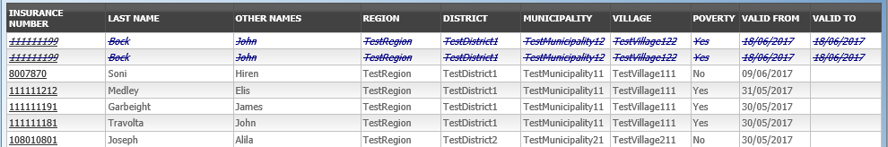Image 92 - Historical records - Result Panel
Search ButtonOnce the criteria have been entered, use the search button to filter the records, the results will appear in the Result Panel.
- Result Panel

Image 93 - Selected record (blue), hovered records (yellow) - Result Panel
The Result Panel displays a list of all families/groups found, matching the selected criteria in the Search Panel. The currently selected record is highlighted with light blue, while hovering over records changes the highlight to yellow (Image 93 - Selected record (blue), hovered records (yellow) - Result Panel). The leftmost record contains a hyperlink which if clicked, re-directs the user to the Family Overview Page for the Family selected or if it is an historical record then the Change Family Page, for detailed viewing.
A maximum of 15 records are displayed at one time, further records can be viewed by navigating through the pages using the page selector at the bottom of the result Panel (Image 94 - Page selector- Result Panel)
Image 94 - Page selector- Result Panel
- Button Panel
The
Cancelbutton re-directs to the Home Page.
- Information Panel
The Information Panel is used to display messages back to the user. Messages will occur once a family/group has been added, updated or deleted or if there was an error at any time during the process of these actions.
1.4.3 Find Insuree¶
Access to the Find Insuree Page is restricted to users with the role of Accountant, Clerk and Health Facility Receptionist.
1.4.3.1 Pre-conditions¶
Need to enquire on, or edit an insuree, and the family/group, policies and contributions associated.
1.4.3.2 Navigation¶
All functionality for use with the administration of insurees can be found under the main menu Insurees and Policies, sub menu Insurees.

Image 95 - Navigation Insurees
Clicking on the sub menu Insurees re-directs the current user to the Find Insuree Page.
1.4.3.3 Find Insuree Page¶
Image 96 - Find Insuree Page
The Find Insuree Page is the first step in the process of finding an insuree and thereafter accessing the family/group overview of insurees, policies and contributions. This initial page can be used to search for specific Insurees or groups of insurees based on specific criteria. The panel is divided into four panels (Image 96 - Find Insuree Page)
- Search Panel
The Search Panel allows a user to select specific criteria to minimise the search results. In the case of insurees the following search options are available, which can be used alone or in combination with each other.
Last NameType in the beginning of; or the fullLast name; to search for insurees with aLast name, which starts with or matches completely, the typed text.
Other NamesType in the beginning of; or the fullOther Namesto search for insurees withOther Nameswhich starts with or matches completely, the typed text.
Insurance NumberType in the beginning of; or the fullInsurance Numberto search for insurees with theInsurance Number, which starts with or matches completely, the typed text.
Marital StatusSelect theMarital Status; from the list of marital status by clicking on the arrow on the right of the selector, to select insurees of a specific marital status.
Phone NumberType in the beginning of; or the fullPhone Numberto search for insurees with aPhone Number, which starts with or matches completely, the typed number.
Birth Date FromType in a date; or use the Date Selector Button, to enter theBirth Date Fromto search for insurees who have the same or later birth date. Note. To clear the date entry box; use the mouse to highlight the full date and then press the space key.
Birth Date ToType in a date; or use the Date Selector Button, to enter theBirth Date Toto search for insurees who have the same or earlier birth date. Note. To clear the date entry box; use the mouse to highlight the full date and then press the space key.
Date Selector ButtonClicking on the
Date Selector Buttonwill pop-up an easy to use, calendar selector (image97) by default the calendar will show the current month, or the month of the currently selected date, with the current day highlighted.
- At anytime during the use of the pop-up, the user can see the date of today.
- Clicking on today will close the pop-up and display the today’s date in the corresponding date entry box.
- Clicking on any day of the month will close the pop-up and display the date selected in the corresponding date entry box.
- Clicking on the arrow to the left displays the previous month.
- Clicking on the arrow on the right will displays the following month.
- Clicking on the month will display all the months for the year.
- Clicking on the year will display a year selector.
GenderSelect theGender; from the list of genders by clicking on the arrow on the right of the selector, to select insurees of a specific gender.
RegionSelect theRegion; from the list of regions by clicking on the arrow on the right of the selector to select insurees from a specific region. Note: The list will only be filled with the regions assigned to the current logged in user. If this is only one then the region will be automatically selected.
DistrictSelect theDistrict; from the list of districts by clicking on the arrow on the right of the selector to select insurees from a specific district. Note: The list will only be filled with the districts belonging to the selected region and assigned to the current logged in user. If this is only one then the district will be automatically selected.
MunicipalitySelect theMunicipality; from the list of wards by clicking on the arrow on the right of the selector to select insurees from a specific municipality. Note: The list will only be filled with the wards in the selected district above.
VillageSelect theVillage; from the list of villages by clicking on the arrow on the right of the selector to select insurees from a specific village. Note: The list will only be filled with the villages in the selected municipality above.
Photo AssignedSelect whether all insurees are searched [All] or only insurees with a photo assigned [Yes] or only insurees with no photo assigned [No].
HistoricalClick on Historical to see historical records matching the selected criteria. Historical records are displayed in the result with a line through the middle of the text (strikethrough) to clearly define them from current records (Image 98 - Historical records - Result Panel)
Image 98 - Historical records - Result Panel
Search ButtonOnce the criteria have been entered, use the search button to filter the records, the results will appear in the Result Panel.
- Result Panel
The result panel displays a list of all Insurees found, matching the selected criteria in the search panel. The currently selected record is highlighted with light blue, while hovering over records changes the highlight to yellow (Image 99 - Selected record (blue), hovered records (yellow) - Result Panel). The leftmost record contains a hyperlink which if clicked, re-directs the user to the Family Overview Page of the insuree’s family, or the Insuree Page if it is a historical record for viewing purposes.

Image 99 - Selected record (blue), hovered records (yellow) - Result Panel
A maximum of 15 records are displayed at one time, further records can be viewed by navigating through the pages using the page selector at the bottom of the result Panel (Image 100 - Page selector- Result Panel)
Image 100 - Page selector- Result Panel
- Button Panel
The
Cancelbutton re-directs to theHome Page.
- Information Panel
The Information Panel is used to display messages back to the user. Messages will occur once a insuree has been added, updated or deleted or if there was an error at any time during the process of these actions.
1.4.4 Find Policy¶
Access to the Find Policy Page is restricted to users with the role of Accountant, Clerk or Health Facility Receptionist.
1.4.4.1 Pre-conditions¶
Need to enquire on, or edit a policy, and the family/group, insurees and contributions associated.
1.4.4.2 Navigation¶
Find Policy Page can be found under the main menu Insurees and Policies, sub menu Policies.

Image 101 - Navigation Policies
Clicking on the sub menu Policies re-directs the current user to the find policy page.
1.4.4.3 Find Policy Page¶

Image 102 - Find Policy Page
The Find Policy Page is the first step in the process of finding a policy and thereafter accessing the Family Overview Page of insurees, policies and contributions. This initial page can be used to search for specific policies or groups of policies based on specific criteria. The panel is divided into four panels (Image 102 - Find Policy Page)
- Search Panel
The Search Panel allows a user to select specific criteria to minimise the search results. In the case of policies the following search options are available which can be used alone or in combination with each other.
Enrolment Date FromType in a date; or use the Date Selector Button, to enter theEnrolment Date Fromto search for policies with anEnrolment Dateequal or later than the specified date. Note. To clear the date entry box; use the mouse to highlight the full date and then press the space key.
Enrolment Date ToType in a date; or use the Date Selector Button, to enter theEnrolment Date toto search for policies with anEnrolment Dateequal or earlier than the specified date. Note. To clear the date entry box; use the mouse to highlight the full date and then press the space key.
Effective Date FromType in a date; or use the Date Selector Button, to enter theEffective Date Fromto search for policies with anEffective Dateequal or later than the specified date. Note. To clear the date entry box; use the mouse to highlight the full date and then press the space key.
Effective Date ToType in a date; or use the Date Selector Button, to enter the ^^Effective Date To’’ to search for policies with an ^^Effective Date^^ equal or earlier than the specified date. Note. To clear the date entry box; use the mouse to highlight the full date and then press the space key.
Start Date FromType in a date; or use the Date Selector Button, to enter theStart Date Fromto search for policies with aStart Dateequal or later than the specified date. Note. To clear the date entry box; use the mouse to highlight the full date and then press the space key.
Start Date ToType in a date; or use the Date Selector Button, to enter theStart Date toto search for policies with aStart Dateequal or earlier than the specified date. Note. To clear the date entry box; use the mouse to highlight the full date and then press the space key.
Expiry Date FromType in a date; or use the Date Selector Button, to enter theExpiry Date Fromto search for policies with anExpiry Dateequal or later then the specified date. Note. To clear the date entry box; use the mouse to highlight the full date and then press the space key.
Date Selector ButtonClicking on the
Date Selector Buttonwill pop-up an easy to use, calendar selector (image103); by default the calendar will show the current month, or the month of the currently selected date, with the current day highlighted.
- At anytime during the use of the pop-up, the user can see the date of today.
- Clicking on today will close the pop-up and display the today’s date in the corresponding date entry box.
- Clicking on any day of the month will close the pop-up and display the date selected in the corresponding date entry box.
- Clicking on the arrow to the left displays the previous month.
- Clicking on the arrow on the right will displays the following month.
- Clicking on the month will display all the months for the year.
- Clicking on the year will display a year selector.
Enrolment OfficerSelect theEnrolment Officer; from the list of enrolment officers by clicking on the arrow on the right of the selector, to select policies related to a specific enrolment officer.
ProductSelect theProduct; from the list of products by clicking on the arrow on the right of the selector, to select policies for a specific product.
Policy StatusSelect the
Policy Status; from the list of policy statuses by clicking on the arrow on the right of the selector, to select policies for a specific policy status.A policy can have the following statuses:
- Idle (Policy data entered but policy not yet activated)
- Active (Policy partially or fully paid and made active)
- Suspended (Policy was not fully paid for within the grace period)
- Expired (Policy is not active anymore as the insurance period elapsed)
BalanceTypes in a positive
Balanceto search for policies with a balance equal or greater than the typed amount. For example if 0 (zero) is entered, all policies with a balance, will be displayed. If 1,000 is entered, then only policies with a balance equal to or greater than 1,000 will be displayed.The balance is the difference between the policy value and total of contributions paid. For the policy
RegionSelect theRegion; from the list of regions by clicking on the arrow on the right of the selector to select policies from a specific region. Note: The list will only be filled with the regions assigned to the current logged in user. If this is only one then the region will be automatically selected.
DistrictSelect theDistrict; from the list of districts by clicking on the arrow on the right of the selector to select policies for families/groups residing in a specific district. Note: The list will only be filled with the districts belonging to the selected region and assigned to the current logged in user. If this is only one then the district will be automatically selected.
Policy TypeSelect whether new policies [New Policy] or renewed policies [Renewal] should be searched for.
Inactive InsureesCheck the box to select only policies for families/groups with insurees which are non-active (not covered) despite the policy of their family/group is active. The reason may be addition of a new insuree (member) to the family/group with an active policy without adequate payment of additional contributions or because the maximum number of members in the family/group exceeds the maximum number determined by the insurance product of the policy.
HistoricalClick onHistoricalto see historical records matching the selected criteria. Historical records are displayed in the result with a line through the middle of the text (strikethrough) to clearly define them from current records (Image 104 - Historical records - Result Panel)
Image 104 - Historical records - Result Panel
Search buttonOnce the criteria have been entered, use theSearchbutton to filter the records, the results will appear in the Result Panel.
- Result Panel
The Result Panel displays a list of all policies found, matching the selected criteria in the search panel. The currently selected record is highlighted with light blue, while hovering over records changes the highlight to yellow (Image 105 - Selected record (blue), hovered records (yellow) - Result Panel). The leftmost record contains a hyperlink which if clicked, re-directs the user to the actual record for detailed viewing if it is a historical record or editing if it is the current record.

Image 105 - Selected record (blue), hovered records (yellow) - Result Panel
A maximum of 15 records are displayed at one time, further records can be viewed by navigating through the pages using the page selector at the bottom of the result Panel (Image 106 - Page selector- Result Panel)
Image 106 - Page selector- Result Panel
- Button Panel
The
Cancelbutton re-directs to the Home Page.
- Information Panel
The Information Panel is used to display messages back to the user. Messages will occur once a policy has been added, updated or deleted or if there was an error at any time during the process of these actions.
1.4.5 Find Contribution¶
Access to the Find Contribution Page is restricted to users with the role of Accountant or Clerk.
1.4.5.1 Pre-conditions¶
Need to enquire on, or edit a contribution, or the family/group, insurees and policies associated.
1.4.5.2 Navigation¶
Find Contribution can be found under the main menu Insurees and Policies, sub menu Contributions

Image 107 - Navigation Contributions
Clicking on the sub menu Contributions re-directs the current user to the Find Contribution Page.
1.4.5.3 Find Contribution Page¶

Image - 108 Find Contribution Page
The Find Contribution Page is the first step in the process of finding a contribution and thereafter accessing the Family Overview Page of insures, policies and contributions. This initial page can be used to search for specific contributions or groups of contributions based on specific criteria. The page is divided into four panels (Image - 108 Find Contribution Page).
- Search Panel
The Search Panel allows a user to select specific criteria to minimise the search results. In the case of contributions the following search options are available which can be used alone or in combination with each other.
PayerSelect thePayer; from the list of payers by clicking on the arrow on the right of the selector, to select contributions related to a specific payer.
Payment TypeSelect thePayment Type; from the list of types by clicking on the arrow on the right of the selector, to select contributions related to a specific payment type.
Payment Date FromType in a date; or use the Date Selector Button, to enter thePayment Date Fromto search for contributions with aPayment Dateequal or later than the specified date. Note. To clear the date entry box; use the mouse to highlight the full date and then press the space key.
Payment Date ToType in a date; or use the Date Selector Button, to enter thePayment Date Toto search for contributions with aPayment Dateequal or earlier than the specified date. Note. To clear the date entry box; use the mouse to highlight the full date and then press the space key.
Date Selector ButtonClicking on the
Date Selector Buttonwill pop-up an easy to use, calendar selector (image109); by default the calendar will show the current month, or the month of the currently selected date, with the current day highlighted.
- At anytime during the use of the pop-up, the user can see the date of today.
- Clicking on today will close the pop-up and display the today’s date in the corresponding date entry box.
- Clicking on any day of the month will close the pop-up and display the date selected in the corresponding date entry box.
- Clicking on the arrow to the left displays the previous month.
- Clicking on the arrow on the right will displays the following month.
- Clicking on the month will display all the months for the year.
- Clicking on the year will display a year selector.
Contribution PaidType in theContribution Paidto search for contributions with the paid amount, greater or equal to the typed amount.
RegionSelect theRegion; from the list of regions by clicking on the arrow on the right of the selector to select contributions for policies from a specific region. Note: The list will only be filled with the regions assigned to the current logged in user. If this is only one then the region will be automatically selected.
DistrictSelect theDistrict; from the list of districts by clicking on the arrow on the right of the selector to select contributions paid for policies from a specific district. Note: The list will only be filled with the districts belonging to the selected region and assigned to the current logged in user. If this is only one then the district will be automatically selected.
HistoricalClick onHistoricalto see historical records matching the selected criteria. Historical records are displayed in the result with a line through the middle of the text (strikethrough) to clearly define them from current records (Image 110 - Historical records - Result Panel).
Image 110 - Historical records - Result Panel
Search ButtonOnce the criteria have been entered, use the
Searchbutton to filter the records, the results will appear in the Result Panel.
- Result Panel
The result panel displays a list of all contributions found, matching the selected criteria in the search panel. The currently selected record is highlighted with light blue, while hovering over records changes the highlight to yellow (Image 111 Selected record (blue), hovered records (yellow) - Result Pane) The leftmost record contains a hyperlink which if clicked, re-directs the user to the actual record for detailed viewing if it is a historical record or editing if it is the current record.

Image 111 Selected record (blue), hovered records (yellow) - Result Pane
A maximum of 15 records are displayed at one time, further records can be viewed by navigating through the pages using the page selector at the bottom of the result Panel (Image 112 - Page selector- Result Panel).
Image 112 - Page selector- Result Panel
- Button Panel
The
Cancelbutton re-directs to the Home Page.
- Information Panel
The Information Panel is used to display messages back to the user. Messages will occur once a contribution has been added, updated or deleted or if there was an error at any time during the process of these actions.
1.4.6 Family Overview¶
Access to the Family Overview Page is restricted to users with the role of Accountant or Clerk.
1.4.6.1 Pre-conditions¶
Need to enquire on, or edit a family/group or manage the insurees, policies and contributions associated with it.
1.4.6.2 Navigation¶
Family Overview Page cannot be navigated directly to; the first step is to find the family/group by means of using Find Family Page, Find Insuree Page, Find Policy Page or Find Contribution Page. Once a specific family, insuree, policy or contribution is selected by means of selecting the hyperlink in the Result Panel of the respective Find Page, the user is re-directed to the Family Overview Page.
1.4.6.3 Family Overview Page¶
Image 113 - Family Overview Page
The Family Overview Page is the central point for all operations with regards to the families/groups, Insurees, policies and contributions associated with it. The page is divided into 6 panels (Image 113 - Family Overview Page)
- Family/Group Panel
The Family/Group Panel provides information about the family including the Insurance Number and the Last Name and Other Names of the head of family and the District, Municipality, Village and Poverty status of the family. In the Family/Group panel action buttons allow to add, edit and delete the family/group.

Image 114
The
green plus signis for adding a new family/group.The
yellow pencil signis for editing a family/group.The
red cross signis for deleting a family/group.
- Insurees Panel
The Insurees Panel displays a list of the insurees within the family/group. The currently selected record is highlighted with light blue, while hovering over records changes the highlight to yellow (Image 115 - Selected record (blue), hovered records (yellow) – Insurees Panel). The leftmost record contains a hyperlink which if clicked, re-directs the user to the insuree record for editing or detailed viewing.

Image 115 - Selected record (blue), hovered records (yellow) – Insurees Panel
In the Insurees Panel, action buttons allow to add, edit and delete insurees belonging to the family/group.

Image 116
The
green plus signis for adding a new insuree.The
yellow pencil signis for editing an insuree.The
red cross signis for deleting an insuree.
- Policies Panel
The Policies Panel displays a list of the policies held by the family/group. The currently selected record is highlighted with light blue, while hovering over records changes the highlight to yellow (Image 117 - Selected record (blue), hovered records (yellow) - Policy Panel). The leftmost record contains a hyperlink which if clicked, re-directs the user to the policy for editing or detailed viewing. By default the first policy is selected and therefore in the Contribution Panel, only the contributions paid on that policy will be displayed in the Contribution Panel By selecting another policy in the list, the Contribution Panel, will refresh with the contributions paid on the newly selected policy.

Image 117 - Selected record (blue), hovered records (yellow) - Policy Panel
In the fifth Product column of Policy data grid, there is a link showing product for the policy on the corresponding row. When the link is clicked; a popup browser window (:ref:image118) will open up showing the details of the product (in read-only mode).

Image 118 - Product Popup – Policies Panel
In the
Policies Panel, action buttons allow to add, edit and delete policies.
Image 119
The
green plus signis for adding a new policy.The
yellow pencil signis for editing a policy.The
red cross signis for deleting a policy.The
blue R signis for renewing a policy.
- Contributions Panel
The
Contribution Paneldisplays a list of contributions paid on the policy currently selected in thePolicies Panel. The currently selected record is highlighted with light blue, while hovering over records changes the highlight to yellow (Image 120 - Selected record (blue), hovered records (yellow) - Contributions Panel) The leftmost record contains a hyperlink which if clicked, re-directs the user to the contribution for editing or detailed viewing.
Image 120 - Selected record (blue), hovered records (yellow) - Contributions Panel
In the second Payer column of Contributions data grid, there is a link showing (institutional) payer of the contribution on the corresponding row. When the link is clicked; a popup browser window (Image 121 - Payer Pop up – Contribution Panel) will open up showing the details of the payer in read-only mode.
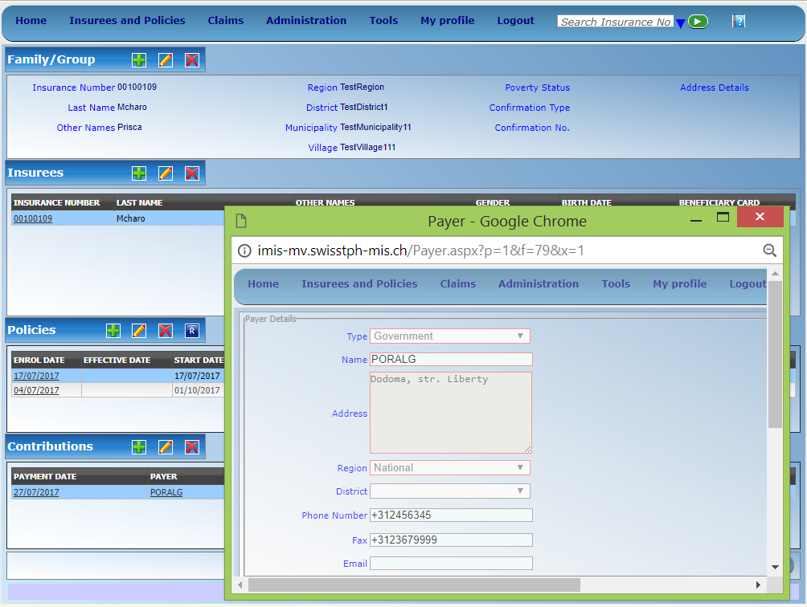Image 121 - Payer Pop up – Contribution Panel
In the
Contributions Panel, action buttons allow to add, edit and delete contributions.Image 122
The
green plus signis for adding a new contribution.The
yellow pencil signis for editing a contribution.The
red cross signis for deleting a contribution.
- Button Panel
The
Cancelbutton re-directs to the Home Page.
- Information Panel
The Information Panel is used to display messages back to the user. Messages will occur once an insuree, a policy or a contribution have been added, updated or deleted or if there was an error at any time during the process of these actions.
1.4.6.4 Family/Group Page¶

Image 123 - Family/Group Page
RegionSelect from the list of available regions the region, in which the head of family/group permanently stays. Note: The list will only be filled with the regions assigned to the current logged in user. If this is only one then the region will be automatically selected. Mandatory.
DistrictSelect from the list of available districts the district, in which the head of family/group permanently stays. Note: The list will only be filled with the districts belonging to the selected region and assigned to the current logged in user. If this is only one then the district will be automatically selected. Mandatory.
MunicipalitySelect from the list of available municipalities the municipality, in which the head of family/group permanently stays. Note: The list will only be filled with the municipalities belonging to the selected district. Mandatory.
VillageSelect from the list of available villages the village, in which the head of family/group permanently stays. Note: The list will only be filled with the villages belonging to the selected municipality. Mandatory.
Poverty StatusSelect whether the family/group has the poverty status. Mandatory.
Confirmation TypeSelect the type of a confirmation of the social status of the family/group.
Confirmation No.Enter alphanumeric identification of the confirmation of the social status of the family/group.
Group TypeSelect the type of the group/family.
Address Details.Enter details of the permanent address of the family/group.
Insurance NumberEnter the insurance number for the head of family/group. Mandatory.
Last nameEnter the last name (surname) for the head of family/group. Mandatory.
Other NamesEnter other names of the head of family/group. Mandatory.
Birth DateEnter the date of birth for the head of family/group. Note: You can also use the button next to the birth date field to select a date to be entered.
GenderSelect from the list of available genders the gender of the head of family/group. Mandatory.
Marital StatusSelect from the list of available marital statuses the marital status of the head of family/group. Mandatory.
Beneficiary CardSelect from the list of card whether or not an insurance identification card was issued to the head of family/group. Mandatory.
Current RegionSelect from the list of available regions the region, in which the head of family/group temporarily stays.
Current DistrictSelect from the list of available districts the district, in which the head of family/group temporarily stays. Note: The list will only be filled with the districts belonging to the selected region
Current MunicipalitySelect from the list of available municipalities the municipality, in which the head of family/group temporarily stays. Note: The list will only be filled with the municipalities belonging to the selected district.
Current VillageSelect from the list of available villages the village, in which the head of family/group temporarily stays. Note: The list will only be filled with the villages belonging to the selected municipality.
Current Address DetailsEnter details of the temporal address of the head of family/group.
ProfessionSelect the profession of the head of family/group.
EducationSelect the education of the head of family/group.
Phone NumberEnter the phone number for the head of family/group.
Identification TypeSelect the type of the identification document of the head of family/group.
Identification No.Enter alphanumeric identification of the document of head of family/group.
Region of FSPSelect from the list of available regions the region, in which the chosen primary health facility (First Service Point) of the head of family/group is located.
District of FSPSelect from the list of available districts the district, in which the chosen primary health facility (First Service Point) of the head of family/group is located. Note: The list will only be filled with the districts belonging to the selected region.
Level of FSPSelect the level of the chosen primary health facility (First Service Point) of the head of family/group.
First Service PointSelect from the list of available health facilities the chosen primary health facility (First Service Point) of the head of family/group. Note: The list will only be filled with the health facilities belonging to the selected district which are of the selected level.
BrowseBrowse to get the photo for the head of family/group related to his/her insurance number.2. Saving
Once all mandatory data is entered, clicking on the
Savebutton will save the record. The user will be re-directed back to the Family Overview Page, with the newly saved record displayed and selected in the result panel. A message confirming that the family member has been saved will appear on the Information Panel.3. Mandatory data
If mandatory data is not entered at the time the user clicks the
Savebutton, a message will appear in the Information Panel, and the data field will take the focus (by an asterisk).4. Cancel
By clicking on the
Cancelbutton, the user will be re-directed to the Find Family Page.
1.4.6.5 Adding a Family¶
Click on the Green Plus Sign to re-direct to the Family/Group Page.
When the page opens all entry fields are empty. See the Family/Group Page for information on the data entry and mandatory fields.
1.4.6.6 Editing a Family/Group¶
Click on the Yellow Pencil Sign to re-direct to the Change Family/Group Page
The page will open with the current information loaded into the data entry fields, plus there are options to change the head of the family/group and move an insuree to the family/group.
Image 124 - Change Family/Group Page
1.4.6.7 Changing a Head of Family/Group¶
The head of the Family/Group is the main contact associated with a policy. For various reasons it may be necessary to change the head of a family/group. The new head must a head of family in another family.
Enter the insurance number for the new head of family/group, click on check, to confirm that the insurance number is valid and that it really is the person expected. The name will appear to the right of the check button. If all is OK, click on the Change button to complete the change. On a successful change, the user will be re-directed back to the Family Overview Page; the new head will be displayed in the Family/Group Information Panel
1.4.6.8 Moving an Insuree¶
Insurees may be moved from one family/group to another. The new insuree must not be a head of family/group in another family/group.
Enter the insurance number for the insuree to move. Click on check, to confirm that the insurance number is valid and that it really is the person expected. The name will appear to the right of the check button. If all is OK, click on the Change button to complete the change. On a successful change, the user will be re-directed back to the Family Overview Page the new insuree will be displayed in the insuree Information Panel.
1.4.6.9 Deleting a Family/Group¶
Click on the Red Cross Sign button to delete the currently selected record.
Before deleting a confirmation popup (Image 125 - Delete confirmation- Button Panel) is displayed, which requires the user to confirm if the action should really be carried out? Deleting of a family requires deleting of all its dependants first.
Image 125 - Delete confirmation- Button Panel
When a family is deleted, all records retaining to the deleted family will still be available by selecting historical records.
1.4.6.10 Insuree Page¶
1. Data Entry
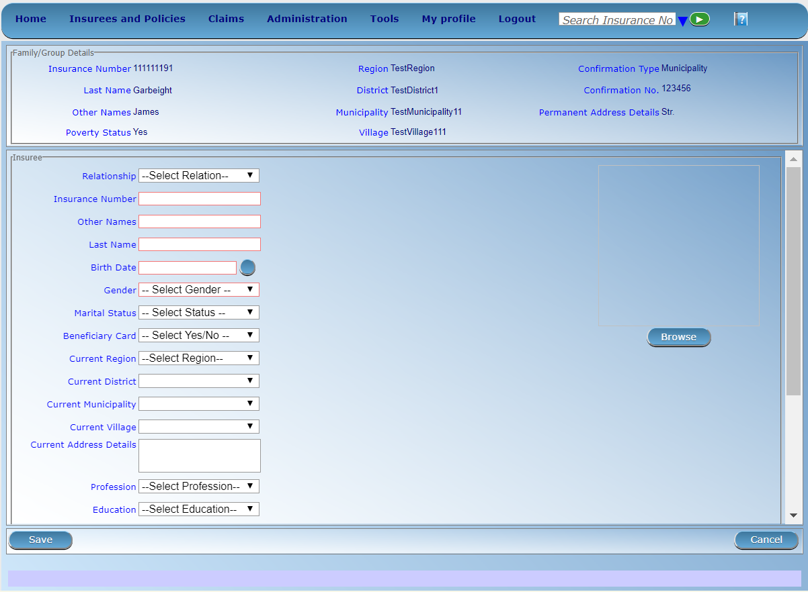Image 126 - Insuree Page
RelationshipSelect from the list of available relationships of the insuree to the head of family/group.
Insurance NumberEnter the insurance number for the insuree. Mandatory.
Last nameEnter the last name (surname) for the insuree. Mandatory, 100 characters maximum.
Other NamesEnter other names of the insuree. Mandatory, 100 characters maximum.
Birth DateEnter the date of birth for the insuree. Note: You can also use the button next to the birth date field to select a date to be entered.
GenderSelect from the list of available genders the gender of the insuree. Mandatory.
Marital StatusSelect from the list of available options for the marital status of the insuree. Mandatory.
Beneficiary CardSelect from the list of options whether or not the card was issued to the insure. Mandatory.
Current RegionSelect from the list of available regions the region, in which the insuree temporarily stays.
Current DistrictSelect from the list of available districts the district, in which the insuree temporarily stays. Note: The list will only be filled with the districts belonging to the selected region
Current MunicipalitySelect from the list of available municipalities the municipality, in which the insuree temporarily stays. Note: The list will only be filled with the municipalities belonging to the selected district.
Current VillageSelect from the list of available villages the village, in which the insuree temporarily stays. Note: The list will only be filled with the villages belonging to the selected municipality.
Current Address Details.Enter details of the temporal address of the insuree.
ProfessionSelect from the list of available professions the profession of the insuree.
EducationSelect from the list of available educations the education of the insuree.
Phone NumberEnter the phone number for the insuree.
Identification TypeSelect the type of the identification document of the insuree.
Identification No.Enter alphanumeric identification of the document of the insuree.
Region of FSPSelect from the list of available regions the region, in which the chosen primary health facility (First Service Point) of the insuree is located.
District of FSPSelect from the list of available districts the district, in which the chosen primary health facility (First Service Point) of the insuree is located. Note: The list will only be filled with the districts belonging to the selected region.
Level of FSPSelect the level of the chosen primary health facility (First Service Point) of the insuree.
First Service PointSelect from the list of available health facilities the chosen primary health facility (First Service Point) of the insuree. Note: The list will only be filled with the health facilities belonging to the selected district which are of the selected level.
BrowseBrowse to get the photo for the insuree related to his/her insurance number.Note: There is an automated service in the IMIS Server which will run on configured time basis repeatedly and assign related photos to insurees without photos if any exist in the IMIS database. So after a user has input insuree’s insurance number and no photo is displayed, there is no need to browse for the photo as that process will be done automatically by the service if the service is configured.
2. Saving
Once all mandatory data is entered, clicking on the
Savebutton will save the record. The user will be re-directed back to the Family Overview Page, with the newly saved record displayed and selected in the result panel. A message confirming that the insuree has been saved will appear on the Information Panel.3. Mandatory data
If mandatory data is not entered at the time the user clicks the
Savebutton, a message will appear in the Information Panel, and the data field will take the focus (by an asterisk)4. Cancel
By clicking on the
Cancelbutton, the user will be re-directed to the Family Overview Page.
1.4.6.11 Adding an Insuree¶
Click on the Green Plus Sign to re-direct to the Insuree Page.
When the page opens all entry fields are empty. See the Insuree Page for information on the data entry and mandatory fields.
1.4.6.12 Editing an Insuree¶
Click on the Yellow Pencil Sign to re-direct to the Insuree Page.
The page will open with the current information loaded into the data entry fields. See the Insuree Page for information on the data entry and mandatory fields.
1.4.6.13 Deleting an Insuree¶
Click on the Red Cross Sign to delete the currently selected record.
Before deleting a confirmation popup (Image 127 - Delete confirmation- Button Panel) is displayed, which requires the user to confirm if the action should really becarried out?
Image 127 - Delete confirmation- Button Panel
When an insuree is deleted, all records retaining to the deleted insuree will still be available by selecting historical records.
1.4.6.14 Policy Page¶
1. Data Entry

Image 128 - Policy Page
Enrolment DateEnter the enrolment date for the policy. Mandatory. Note: You can also use the button next to the enrolment date field to select a date to be entered.
ProductSelect from the list of available products the product of the policy. Mandatory.
Effective DateThe effective date for the policy is calculated automatically later on. The effective date is the maximum of the start date and the date when the last contribution was paid or when the user enforced activation of the policy.
Start DateThe start date for the policy is calculated automatically. Either it is the enrolment date plus the administration period of the insurance product associated with the policy for free enrolment (without cycles) or it is a cycle start date determined according to enrolment date and the administration period for enrolment in fixed cycles. The start date may be modified by the user.
Expiry DateThe expiry date for the policy is calculated automatically. When entering a new policy, the expiry date is the start date plus the insurance period of the insurance product associated with the policy for free enrolment or the cycle start date plus the insurance period for enrolment in fixed cycles.
Enrolment OfficerSelect from the list of available enrolment officers the enrolment officer related to the policy. Mandatory2. Saving
Once all mandatory data is entered, clicking on the
Savebutton will save the record. The user will be re-directed back to the Family Overview Page, with the newly saved record displayed and selected in the result panel. A message confirming that the policy has been saved will appear on the Information Panel.3. Mandatory data
If mandatory data is not entered at the time the user clicks the
Savebutton, a message will appear in the Information Panel, and the data field will take the focus (by an asterisk).4. Cancel
By clicking on the
Cancelbutton, the user will be re-directed to the Family Overview Page.
1.4.6.15 Adding a Policy¶
Click on the Green Plus Sign to re-direct to the Policy Page.
When the page opens all entry fields are empty. See the Policy Page for information on the data entry and mandatory fields.
1.4.6.16 Editing a Policy¶
Click on the Yellow Pencil Sign to re-direct to the Policy Page.
The page will open with the current information loaded into the data entry fields. See the Policy Page for information on the data entry and mandatory fields.
1.4.6.17 Deleting a Policy¶
Click on the Red Cross Sign to delete the currently selected policy.
Before deleting of a policy, all contributions of the policy should be deleted. Before deleting a confirmation popup (Image 129 - Delete confirmation- Button Panel) is displayed, which requires the user to confirm if the action should really be carried out?
Image 129 - Delete confirmation- Button Panel
When a policy is deleted, all records retaining to the deleted policy will still be available by selecting historical records.
1.4.6.18 Contribution Page¶
1. Data Entry
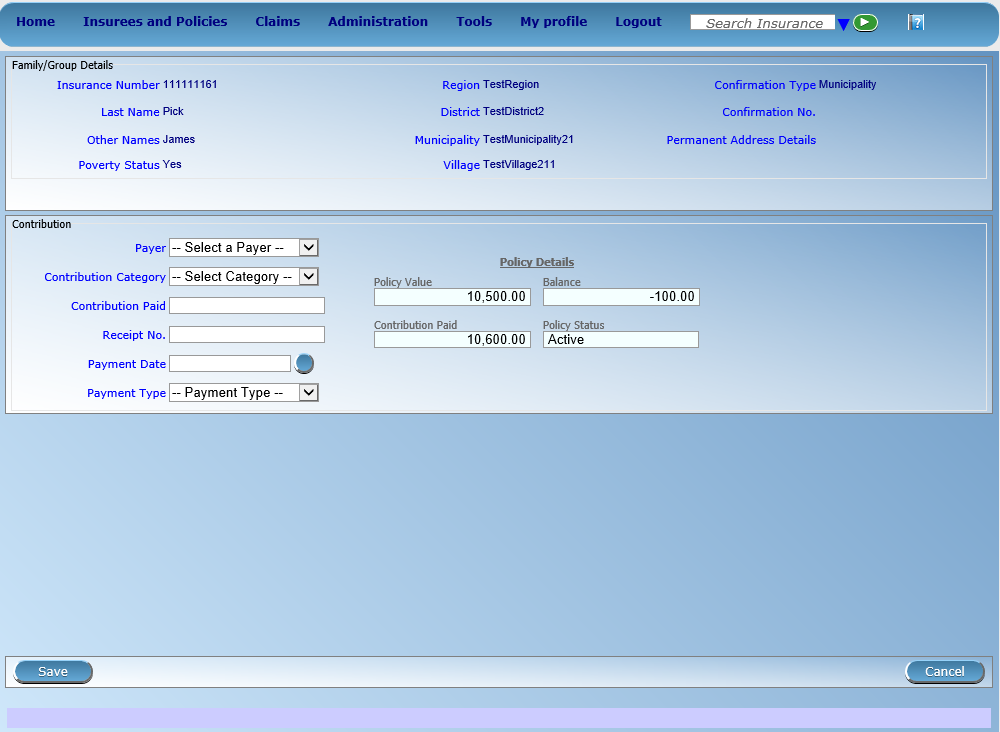Image 130 - Contribution Page
PayerSelect from the list of available (institutional) payers the payer of the contribution (if the contribution is not paid by the family/group itself).
Contribution PaidEnter the paid amount for the contribution. Mandatory.
Receipt No.Enter the receipt identification for the contribution. Receipt identification has to be unique within all policies of the insurance product. Mandatory.
Payment DateEnter the date of payment for the contribution. Mandatory. Note: You can also use the button next to the date of payment field to select a date to be entered.
Payment TypeSelect from the list of available types of payment the payment type of the contribution. Mandatory.2. Saving
Once all mandatory data is entered, clicking on the
Savebutton will save the record. Depending on the contribution paid, the following messages will appear.
- If the Contribution paid matches the price of the policy:
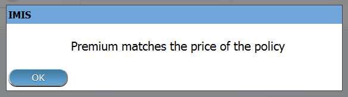Image 131
- If the contribution paid is lower than the price of the policy:
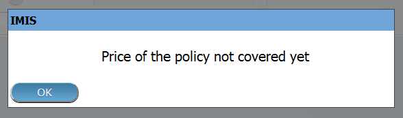Image 132
Followed by:

Image 133
If you choose Yes, the policy will be (enforced) set as Active. If you choose No, it will remain Idle.
- If the contribution is higher than the price of the policy:

Image 134
The user will then be re-directed back to the Family Overview Page, with the newly saved record displayed and selected in the result panel. A message confirming that the contribution has been saved will appear on the Information Panel.
3. Mandatory data
If mandatory data is not entered at the time the user clicks the
Savebutton, a message will appear in the Information Panel, and the data field will take the focus (by an asterisk).4. Cancel
By clicking on the
Cancelbutton, the user will be re-directed to the Family Overview Page .
1.4.6.19 Adding a Contribution¶
Click on the Green Plus Sign to re-direct to the Contribution Page.
When the page opens all entry fields are empty. See the Contribution Page for information on the data entry and mandatory fields.
1.4.6.20 Editing a Contribution¶
Click on the Yellow Pencil Sign to re-direct to the Contribution Page. The Contribution Page will open with the current information loaded into the data entry fields. See the Contribution Page for information on the data entry and mandatory fields.
1.4.6.21 Deleting a Contribution¶
Click on the Red Cross Sign button to delete the currently selected record.
Before deleting a confirmation popup (Image 135 - Delete confirmation- Button Panel) is displayed, which requires the user to confirm if the action should really be carried out?
Image 135 - Delete confirmation- Button Panel
When a contribution is deleted, all records retaining to the deleted contribution will still be available by selecting historical records.
1.5 Claims¶
The functionality under the menu Claims allows complete processing of claims from their entering into IMIS, modification, submission to processing, automatic checking of their correctness, reviewing of them by medical officers, their evaluating and preparation of report to an accounting system for their remuneration to contractual health facilities. Each claim can be consequently in several states. Once it is entered to IMIS (either by the mobile phone application Claim Management or typed in and saved in IMIS) it goes to the status Entered. When it is submitted and it successfully passes at least some automatic checks, the claim goes to the status Checked. If the claim doesn’t pass automatic checking it goes to the status Rejected and its processing ends. The claim in the status Checked may be reviewed from medical point of view and/or a feedback on it can be collected from the patient. Medical reviewing and feedback acquiring can be by-passed. Ones such (manual) scrutiny of the claim is at the end, the claim may be pushed to the status Processed. In this status the claim is evaluated in nominal prices, taking into account all ceilings, deductibles and other cost sharing rules associated with insurance product or products covering claimed health care. If there is no medical service or medical item price of which a relative one according to the corresponding insurance product, the claim goes automatically to the status Valuated. If there is at least one medical service or medical item with relative pricing, the claim goes to the status Valuated only after a batch for corresponding period is run. The batch for a period (month, quarter, year) finishes evaluation of relative prices on claims on one hand and summarizes all claims in the period for accounting system that is external to IMIS (it is not a part of it). Different values (prices) of a claim are associated with each stage of processing of claims. When a claim is entered the value of the claim based on nominal prices of claimed medical services/items is designated as Claimed Value. Claimed Value is associated with the state Entered. The value of the claim after automatic checking of claims during submission of the claim and after manual interventions of medical officers is designated as Approved Value. Approved Value is associated with the state Checked. The value of the claim after corrections based on all cost sharing rules of covering insurance products is designated as Adjusted Value. Adjusted Value is associated with the state Processed. The final value of the claim taking into account actual value of relative prices is designated as Paid Value. Paid Value is associated with the state Valuated.
1.5.1 Heath Facility Claims¶
Access to the Health Facility Claims Page is restricted to users with the role of Claim Administrator.
1.5.1.1 Pre-conditions¶
1.5.1.2 Navigation¶
All functionality for use with the administration of health facility claims can be found under the main menu Claims, sub menu Health Facility Claims.

Image 136 - Navigation Health Facility Claims
Clicking on the sub menu Health Facility Claims re-directs the current user to the Claims Control Page.
1.5.1.3 Claims Control Page¶

Image 137 - Claims Control Page
The Claims Control Page is the central point for all health facility claim administration. By having access to this panel, it is possible to add, edit and search claims. Claims can be edited only in the state Entered. The panel is divided into four panels (Image 136 - Navigation Health Facility Claims).
- Search Panel
The search panel allows a user to select specific criteria to minimise the search results. In the case of claims the following search options are available which can be used alone or in combination with each other.
RegionSelect theRegion; where claiming or searched for health facility is located from the list of regions by clicking on the arrow on the right of the selector to select claims from a specific region. Note: The list will only be filled with the regions assigned to the current logged in user. If this is only one then the region will be automatically selected
DistrictSelect thedistrict; where claiming or searched for health facility is located from the list of districts by clicking on the arrow on the right of the selector to select claims from a specific district. Note: The list will only be filled with the districts belonging to the selected region and assigned to the current logged in user. If this is only one then the district will be automatically selected.
HF CodeSelect theHF Code(Health Facility Code) from the list of codes of health facilities by clicking on the arrow on the right of the selector, to select claims from a specific health facility. Note: The list will only be filled with the health facilities belonging to the selected district and assigned to the current logged in user.
HF NameType in the beginning of; or the fullHF Name(Health Facility Name) to search for claims belonging to the health facility whose name start with or match completely the typed text.
Claim AdministratorSelect theClaim Administratorfrom the list of claim administrators by clicking on the arrow on the right of the selector, to select claims submitted by a specific claim administrator. Note: The list will only be filled with the claim administrators belonging to the health facility selected.
Visit TypeSelect theVisit Typefrom the list of visit types (or hospital stays) by clicking on the arrow on the right of the selector, to select claims with specified visit type.
Insurance NumberType in the beginning of; or the fullInsurance Number, to search for claims, on behalf of insurees with the insurance number which starts with or match completely the typed text.
Claim No.Type in the beginning of; or the fullClaim No., to search for claims with the specific claim identification which starts with or match completely the typed text.
Review StatusSelect theReview Statusfrom the list of options for review status by clicking on the arrow on the right of the selector, to select claims with specific review status.
Feedback StatusSelect theFeedback Statusfrom the list of options for feedback status by clicking on the arrow on the right of the selector, to select claims with specific feedback status.
Claim StatusSelect theClaim Statusfrom the list of options for claim status by clicking on the arrow on the right of the selector, to select claims with specific claim status.
Main Dg.Select theMain Dg.from the list of diagnoses status by clicking on the arrow on the right of the selector, to select claims with main diagnosis.
Batch RunSelect thebatch runfrom the list of batch runs by clicking on the arrow on the right of the selector, to select claims from specific batch run
Visit Date FromType in a date; or use the Date Selector Button, to search for claims with aVisit Date Fromdate which is on or is greater than the date typed/selected. Note. To clear the date entry box; use the mouse to highlight the full date and then press the space key.Visit Date Fromshould be the day of admission for in-patient care or the visit date in case of out-patient care.
Visit Date ToType in a date; or use the Date Selector Button, to search for claims with aVisit Date Fromdate which is on or is less than the date typed/selected. Note. To clear the date entry box; use the mouse to highlight the full date and then press the space key.Visit Date Toshould be the day of discharge for in-patient care or the visit date in case of out-patient care.
Claim Date FromType in a date; or use the Date Selector Button, to search for claims with aClaim Datedate which is on or is greater than the date typed/selected. Note. To clear the date entry box; use the mouse to highlight the full date and then press the space key.
Claim Date ToType in a date; or use the Date Selector Button, to search for claims with aClaim Datedate which is on or is less than the date typed/selected. Note. To clear the date entry box; use the mouse to highlight the full date and then press the space key.*
Date Selector ButtonClicking on the
Date Selector Buttonwill pop-up an easy to use, calendar selector (image138); by default the calendar will show the current month, or the month of the currently selected date, with the current day highlighted.
- At anytime during the use of the pop-up, the user can see the date of today.
- Clicking on today will close the pop-up and display the today’s date in the corresponding date entry box.
- Clicking on any day of the month will close the pop-up and display the date selected in the corresponding date entry box.
- Clicking on the arrow to the left displays the previous month.
- Clicking on the arrow on the right will displays the following month.
- Clicking on the month will display all the months for the year.
- Clicking on the year will display a year selector.
Search ButtonOnce the criteria have been entered, use the search button to filter the records, the results will appear in the Result Panel.
- Result Panel
The Result Panel displays a list of all claims found, matching the selected criteria in the search panel. The currently selected record is highlighted with light blue, while hovering over records changes the highlight to yellow (Image 139 - Selected record (blue), hovered records (yellow) - Result Panel). The leftmost record contains a hyperlink which if clicked, re-directs the user to the actual record for detailed viewing if it is a historical record or editing if it is the current record.
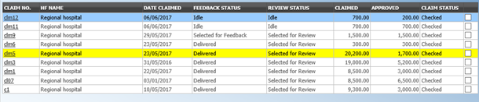Image 139 - Selected record (blue), hovered records (yellow) - Result Panel
A maximum of 2000 records can be displayed at one time, in a scroll panel. Further records can be viewed by processing the current loaded claims and search claims again.
- Button Panel
With exception of the
Cancelbutton, which re-directs to the Home Page, and theAddbutton which re-directs to the Claim Page, the button panel (the buttons Load and Submit) is used in conjunction with the current selected record (highlighted with blue). The user should first select a record by clicking on any position of the record except the leftmost hyperlink, and then click on the button.
addBy clicking on the add button, the user is directed to the Claim Page, where new entries for new claim can be added. When the page opens all entry fields are empty. See the Claim Page for information on the data entry and mandatory fields.
loadBy clicking on the load button, the user is directed to the Claim Page, where the current selected claim can be edited (provided it in the state Entered).
The page will open with the current information loaded into the data entry fields. See the Claim Page for information on the data entry and mandatory fields.
submitBy clicking on the submit button, claim status of all claims with claim status Entered and which have been selected to be submitted by checking the check box on right end of each record, will be submitted.
On the top of result panel, there is a checkbox to be used to select all claims currently loaded in the result panel and whose claim status is Entered, prior to be submitted.
Once the process is done, a popup window (Image 140 - Submit Claims Prompt – Claims Control Page) with the result of the process will be shown.
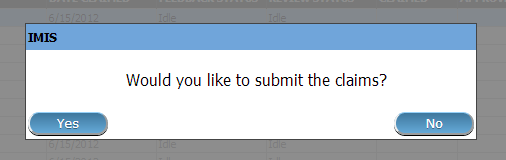Image 140 - Submit Claims Prompt – Claims Control Page

Image 141 - Submitted Claims details – Claims Control Page
deleteBy clicking on the delete button, the current selected claim will be deleted.
Before deleting a confirmation popup (Image 142 - Delete confirmation – Claims Control Page) is displayed, which requires the user to confirm if the action should really be carried out?
Image 142 - Delete confirmation – Claims Control Page
cancelBy clicking on theCancelbutton, the user will be re-directed to the Home Page.
- Information Panel
The Information Panel is used to display messages back to the user. Messages will occur once a claim has been added, updated or deleted or if there was an error at any time during the process of these actions.
1.5.1.4 Claim Page¶
1. Data Entry

Image 143 - Claim Page
HF CodeDisplays the code of the health facility. The field is read only (taken over from the Claims Control Page) and cannot be edited.
HF NameDisplays the name of the health facility. The field is read only (taken over from the Claims Control Page) and cannot be edited.
Insurance NumberEnter the insurance number of the patient. When done entering this field, the corresponding name of the patient will be filled on the name of the patient (the text box which is read only field and is on the right side of the Insurance Number text field). Mandatory.
Claim No.Enter the identification of the claim. Mandatory, up to 8 characters. It should be unique within the claiming health facility.
Main Dg.Select the code of the main diagnosis from the drop down list of diagnosis codes. Mandatory.
Sec Dg 1Select the code of the first secondary diagnosis from the drop down list of diagnosis codes.
Sec Dg 2Select the code of the second secondary diagnosis from the drop down list of diagnosis codes.
Sec Dg 3Select the code of the third secondary diagnosis from the drop down list of diagnosis codes.
Sec Dg 4Select the code of the fourth secondary diagnosis from the drop down list of diagnosis codes.
Claim AdministratorDisplays code of the claim administrator. The field is read only (taken over from the Claim Control Page) and cannot be edited.
Visit Date FromEnter the visit date for out-patient care or the admission date for in-patient care. Mandatory.
Visit Date ToEnter the discharge date for in-patient care.
Date ClaimedEnter the date when the claim was prepared by the health facility.
Guarantee No.Enter identification of a guarantee letter for prior approval of provision of claimed health care.
Visit TypeSelect the type of visit/hospital admission from the drop down list (Emergency, Referral, Other)
Services
service codeWhen entering the service code, a dropdown suggestion box for the available services with the service code or service name matching your typed text will be shown. Available medical services in the dropdown suggestion box are taken over from the pricelist of medical services associated with the claiming health facility. The desired service can then be selected from the dropdown suggestion box by clicking on it using mouse or selecting it using up and down arrows, then pressing Enter key fill the service code text field, together with quantity and value field in the same row.
Once the selected service has been written on the service data grid row, the dropdown suggestion box will close itself. When needed, the dropdown suggestion box can be closed by clicking any place on the page but outside the dropdown suggestion box.

Image 144 - Services dropdown suggestion box – Claim Page
quantityThis field can be filled manually by entering a number in it or automatically is filled by 1 when the service code above is filled, through dropdown suggestion box. It is this field that receives focus after service code is filled above from the dropdown suggestion box.
priceThis field can be filled manually by entering a number in it or automatically is filled when the service code above is filled, through dropdown suggestion box. Automatically filled prices are taken over from the pricelist of medical services associated with the claiming health facility.
explanationEnter extra information about the service for the scheme administration (a medical officer of the scheme administrator).
Items
item codeWhen entering the item code, a dropdown suggestion box for the available items with the item code or item name matching your typed text will be shown. Available medical items in the dropdown suggestion box are taken over from the pricelist of medical items associated with the claiming health facility. The desired item can then be selected from the dropdown suggestion box by clicking on it using mouse or selecting it using up and down arrows, then pressing Enter key to fill the item code text field, together with quantity and value field in the same row.
Once the selected item has been written on the item data grid row, the dropdown suggestion box will close itself. When needed, the dropdown suggestion box can be closed by clicking any place on the page but outside the dropdown suggestion box.
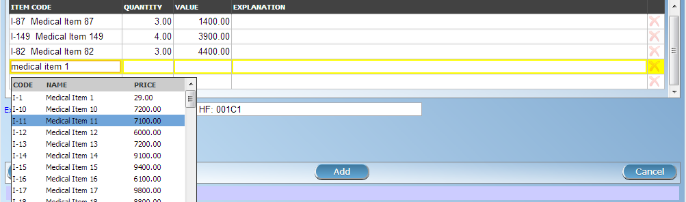Image 145 - Items dropdown suggestion box – Claim Page
quantityThis field can be filled manually by entering a number in it or automatically is filled by 1 when the item code above is filled, through dropdown suggestion box. It is this filled that receives focus after item code is filled above from the dropdown suggestion box.
priceThis field can be filled manually by entering a number in it or automatically is filled when the item code above is filled, through dropdown suggestion box. Automatically filled prices are taken over from the pricelist of medical items associated with the claiming health facility.
explanationEnter extra information about the medical item for the scheme administration (a medical officer of the scheme administrator).
claimedThis field is filled automatically with a new total of quantities multiplied to their corresponding values in both data input grids at any time when there is a change in values in the either quantity fields or value fields anywhere in both data input grids.
explanationEnter extra information about the whole claim for the scheme administration (medical officer).# User Controls
On top of services input grid panel and items input grid panel, there is a textbox field (Image 146 - Services input grid row number change, input field – Claim Page) and (Image 147 - Items input grid row number change, input field – Claim Page) which is filled with a constant representing the current number of rows in the input grid a user is working with. A user can change the current number of rows in the corresponding data input grid by entered a number of rows greater than existing one. This change is only allowed before a user has made changes to the corresponding data input grid.

Image 146 - Services input grid row number change, input field – Claim Page
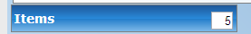Image 147 - Items input grid row number change, input field – Claim Page
A user can manually clear the inputs in the row by clicking the
Red Crossbutton on the end right of a desired row (Image 148 - Clear row inputs button-Claim Page). This action will require a user to confirm for the clearing process to proceed by choosing either yes / no from the popup window (Image 149 - Clearing of a row confirmation – Claim Page) asking for user confirmation.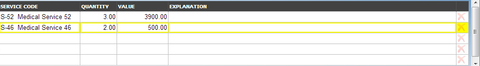Image 148 - Clear row inputs button-Claim Page

Image 149 - Clearing of a row confirmation – Claim Page
2. Saving
Once all mandatory data is entered, clicking on the
Savebutton will save the claim. The user stay in the Claim Page; a message confirming that the claim has been saved will appear on the bottom of the Claim Page.3. Mandatory data
If mandatory data is not entered at the time the user clicks the
Savebutton, a message will appear in the Information Panel, and the data field will take the focus (by an asterisk).4. Printing of a claim
By clicking on the
5. Creating of a new claim
By clicking on the
Addbutton, the Claim Page is cleared (with exception of HF Code, HF Name and Claim Administrator) and it ready for entering of a new claim for the same health facility and of the same claim administrator as before.6. Cancel
By clicking on the
Cancelbutton, the user will be re-directed to the Claims Control Page.
1.5.2 Review claims¶
The functionality allows reviewing and adjustments of claims from medical point of view. Reviewing of claims is restricted to users with the role of Medical Officer
1.5.2.1 Pre-conditions¶
A claim has been already submitted.
1.5.2.2 Navigation¶
All functionality for use with the administration of claim overview can be found under the main menu Claims, sub menu Review.
Image 150 - Navigation Review
Clicking on the sub menu Review re-directs the current user to the Claims Overview Page.
Image 151 - Claims Overview Page
1.5.2.3 Claims Overview Page¶
The Claims Overview Page is the central point for all claim review administration. By having access to this panel, it is possible to review, feedback, amend and process claims. The panel is divided into five sections (Image 150 - Navigation Review).
- Search Panel
The search panel allows a user to select specific criteria to minimise the search results. In the case of claims the following search options are available, which can be used alone, or in combination with each other.
RegionSelect theRegion; where searched for health facility is located or where patients are permanently living from the list of regions by clicking on the arrow on the right of the selector to select claims from a specific region. Note: The list will only be filled with the regions assigned to the current logged in user. If this is only one then the region will be automatically selected
DistrictSelect theDistrict; where searched for health facility is located or where patients are permanently living from the list of districts by clicking on the arrow on the right of the selector to select claims from a specific district. Note: The list will only be filled with the districts belonging to the selected region and assigned to the current logged in user. If this is only one then the district will be automatically selected.
HF CodeSelect theHF Code; from the list of health facilities codes by clicking on the arrow on the right of the selector to select claims from a specific health facility. Note: The list will only be filled with the health facilities belonging to the selected district and assigned to the current logged in user.
HF NameType in the beginning of; or the fullHF Name, to search for claims belonging to the health facility whose name start with or match completely the typed text.
Claim AdministratorSelect theclaim administratorfrom the list of claim administrator codes by clicking on the arrow on the right of the selector, to select claims submitted by a specific claim administrator. Note: The list will only be filled with the claim administrators belonging to the health facility selected.
Insurence NumberType in the beginning of; or the fullInsurence Number, to search for claims for patients with the insurance number which start with or match completely the typed text.
Claim No.Type in the beginning of; or the fullClaim No., to search for claims with claim identification which start with or match completely the typed text.
Review StatusSelect theReview Statusfrom the list of the options for review status by clicking on the arrow on the right of the selector, to select claims with a specific review status.
Feedback StatusSelect theFeedback Statusfrom the list of the options for feedback status by clicking on the arrow on the right of the selector, to select claims with a specific feedback status.
Claim StatusSelect theClaim Statusfrom the list of options for claim status by clicking on the arrow on the right of the selector, to select claims with a specific claim status.
Main DgSelect theMain Dg.from the list of diagnoses status by clicking on the arrow on the right of the selector, to select claims with main diagnosis.
Batch RunSelect theBatch Runfrom the list of batch runs by clicking on the arrow on the right of the selector, to select claims included in a specific batch run.
Visit Date FromType in a date; or use the Date Selector Button, to search for claims with aVisit Date Fromwhich is on or is greater than the date typed/selected. Note. To clear the date entry box; use the mouse to highlight the full date and then press the space key.
Visit Date ToType in a date; or use the Date Selector Button, to search for claims with aVisit Date Towhich is on or is less than the date typed/selected. Note. To clear the date entry box; use the mouse to highlight the full date and then press the space key.
Claim Date FromType in a date; or use the Date Selector Button, to search for claims with aClaim Date Fromwhich is on or is greater than the date typed/selected. Note. To clear the date entry box; use the mouse to highlight the full date and then press the space key.
Claim Date ToType in a date; or use the Date Selector Button, to search for claims with aClaim Date Towhich is on or is less than the date typed/selected. Note. To clear the date entry box; use the mouse to highlight the full date and then press the space key.
Visit TypeSelect type of out-patient visit or in-patient admission from the list of types of visit to search for claims made on specific visit/admission type.
Date Selector ButtonClicking on the Date Selector Button will pop-up an easy to use, calendar selector (iamge152); by default the calendar will show the current month, or the month of the currently selected date, with the current day highlighted.
- At anytime during the use of the pop-up, the user can see the date of today.
- Clicking on today will close the pop-up and display the today’s date in the corresponding date entry box.
- Clicking on any day of the month will close the pop-up and display the date selected in the corresponding date entry box.
- Clicking on the arrow to the left displays the previous month.
- Clicking on the arrow on the right will displays the following month.
- Clicking on the month will display all the months for the year.
- Clicking on the year will display a year selector.
Search ButtonOnce the criteria have been entered, use the search button to filter the records, the results will appear in the Result Panel.
- Claim Selection Update Panel
This panel is basically for functionality of updating multiple claims which are currently loaded in the Result Panel at once basing on the claim filter criteria available on this panel. The update on the claims is basically changing Feedback Status and Review Status of a claim from Idle to (Not) Selected for Feedback or (Not) Selected for Review respectively. The filters in this panel work on the claims which are currently loaded on the result panel. The combination of filters is either
Selectalone orSelectand eitherRandomorValueorVarianceor combination ofValueandVariance.
selectIs a selection dropdown box to select between Review Select and Feedback Select to filter only claims whose review status is Idle or feedback status is Idle respectively from among claims currently in the Result Panel.
RandomAccept a number which is considered to be a percentage of the claims in the Result Panel. Check the random checkbox and enter a number on the text field next to checkbox. The default is 5%.
ValueAccept a number which is considered to be claimed value. This will filter claims from the Result Panel by taking claims whose claimed value is equal or greater than the entered number in the Value text field. Check the value checkbox and enter a number on the text field next to checkbox. The default is 40000.
varianceAccept a number which is considered to be a percentage of the current claim value variance. Calculated by dividing the current claim value (value) and the average sum (Average) of the all claims in the previous year from the current claim date and with the same main diagnosis as that of the current claim, minus one (1) and finally multiply by hundred (100) to get the percentage variance. I.e Percentage Variance = [(Value / Average) – 1] * 100 Enter a number by checking the variance checkbox and enter a number on the text field next to checkbox. The default is 50%.
Update buttonOnce desired criteria have been set and after clicking this button, then the claims currently displayed in the result panel which satisfy the criteria, will be updated of their Idle Review Status or Feedback Status to either (Not) Selected for Review or (Not) Selected for Feedback respectively.
A popup prompt window will be displayed to confirm the process, as shown on (image153) and (Image 154 - Claim Review Selection Update Prompt – Claims Overview Page).
Once the update process is over, a popup window (Image 155 - Claim Selection Update Results – Claims Overview Page). Showing the result of the process will be displayed.

Image 153 - Claim Feedback Selection Update Prompt – Claims Overview Page

Image 154 - Claim Review Selection Update Prompt – Claims Overview Page

Image 155 - Claim Selection Update Results – Claims Overview Page
- Result Panel
The Result Panel displays a list of all claims found, matching the selected criteria in the search panel. The currently selected record is highlighted with light blue, while hovering over records changes the highlight to yellow (Image 156 - Selected record (blue), hovered records (yellow) - Result Panel).

Image 156 - Selected record (blue), hovered records (yellow) - Result Panel
A maximum of 2000 records can be displayed at one time, in a scroll panel. Further records can be viewed by processing the current loaded claims and search claims again.
The Feedback and Review Status Columns in each row contain a drop down list with options for claim feedback status and claim review status. A user can change the claim feedback and review status from low status to high status only. Either from Idle to Not Selected or Selected for Feedback in case of the feedback status or Not Selected or Selected for Review in case of the review status. Or from Not Selected to Selected for Feedback in case of the feedback status or Selected for Review in case of the review status. For changes to take effect, a user will have to update the changes by clicking the
Updatebutton.
- Button Panel
With exception of the Cancel button, which re-directs to the Claims Overview Page, the button panel is used in conjunction with the current selected record (highlighted with blue). The user should first select a record by clicking on any position of the record.
reviewClicking on this button re-directs a user to the Claim Review Page, where a claim with review status Selected for Review can be reviewed and its current review status changed to Reviewed. If the claim is not in the status Selected for Review then the claim can be only loaded and shown to the user without any subsequent action.
The page will open with the current information loaded into the data entry fields. See the Claim Review Page, for information on the data entry and mandatory fields.
feedbackClicking on this button re-directs a user to the Claim Feedback Page, where a claim with feedback status Selected for Feedback can be feed backed and its current feedback status changed to Delivered.
The page will open with the current information loaded into the data entry fields. See the Claim Feedback Page for information on the data entry and mandatory fields.
updateClicking on this button, update the feedback status and review status of claims in the result panel from either Idle to Not Selected or Selected for Feedback or Selected for Review respectively or from Not Selected to Selected for Feedback or Selected for Review respectively.
processClicking on this button changes the claim status Checked of all current selected claims in the Result Panel, selected by checking the checkbox on the right end of each record, to claim status Processed.
Claims which can be selected for being processed are ones whose claim status is Checked and Feedback Status and Review Status are not Idle. The checkbox on the top of the Result Panel can be used to select multiple claims. The process happens while a user stays on the same page. Once the process is done, a popup window (Image 157 - Process Claim Prompt – Claims Overview Page) showing results of the process will be shown.

Image 157 - Process Claim Prompt – Claims Overview Page

Image 158 - Processed Claims details – Claims Overview Page
CancelBy clicking on the cancel button, the user will be re-directed to the Claims Overview Page.
- Information Panel
The Information Panel is used to display messages back to the user. Messages will occur once a claim has been reviewed, updated, feedback added on claim or if there was an error at any time during the process of these actions.
1.5.2.4 Claim Review Page¶
1. Data Entry
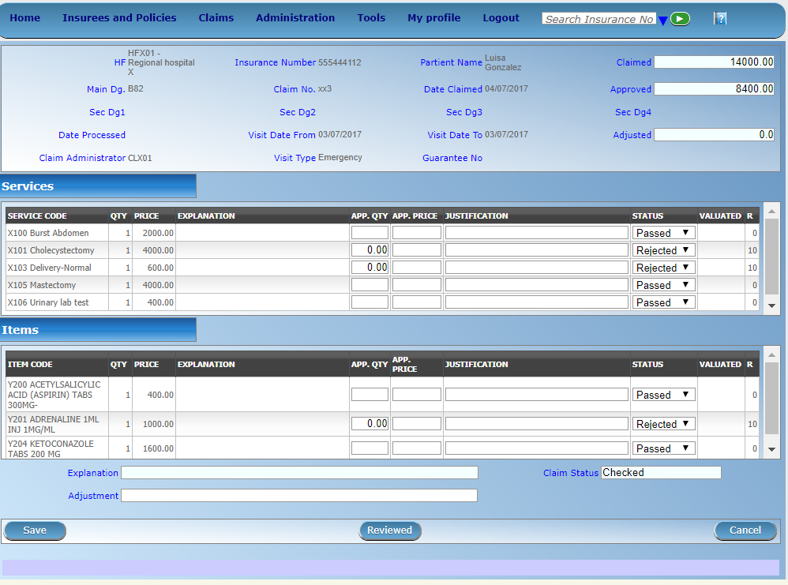Image 159 - Claim Review Page
Claim Review Pagewill show read-only information of the current claim selected for review, on the top section of the page, on some of the grid columns of the claim services grid and claim items grid and on the bottom of all the grids. As well, the page has input boxes where a user with the role Medical Officer can enter new relevant values for review of the current claim.Read-only information of the current claim includes the following:
HFThe health facility code and name which the claim belongs to.
Main Dg.The code of the main diagnosis.
Sec Dg1The code of the first secondary diagnosis.
Sec Dg2The code of the second secondary diagnosis.
Sec Dg3The code of the third secondary diagnosis.
Sec Dg4The code of the fourth secondary diagnosis.
Visit typeThe type of the visit or of the hospital stay (Emergency, Referral, Other)
Date ProcessedThe date on which the claim was processed (sent to the state Processed).
Claim AdministratorThe administrator’s code, who was responsible for submission of the current claim.
Insurance NumberThe insurance number of the patient.
Claim No.The unique identification of the claim within the claiming health facility.
Patient NameThe full name of the patient on whom the claim is made.
Date ClaimedThe date on which the claim was prepared by the claiming health facility.
Visits Date FromThe date on which the patient visited (or was admitted by) the health facility for treatment on which the claim is basing on.
Visit Date ToThe date on which the patient was discharged from the health facility for treatment on which the claim is basing on.
Guarantee No.Identification of a guarantee letter.
ClaimedThe sum of prices of all claimed services and items at the moment of submission of the claim.
approvedThe value of the claim after automatic checking during its submission and after the corrections of the claim done by a medical officer.
AdjustedThe value of the claim after automatic adjustments done according to the conditions of coverage by the patient’s policy.
ExplanationExplanation to the claim provided by the claiming health facility.
claim statusClaim status is shown on the very bottom right end side after the two grids. This is status which claim gets after submission.
rejection reasonThe last column of each of the two grids, headed with character ‘R’, gives rejection reason number for each of the claimed services or claimed items in the claim services grid or the claim items grid respectively. Rejection reasons are as follows:
Reason Code Reason Description -1 Rejected by a medical officer 0 Accepted 1 Item/Service not in the registers of medical items/services 2 Item/Service not in the pricelists associated with the health facility 3 Item/Service is not covered by an active policy of the patient 4 Item/Service doesn’t comply with limitations on patients (men/women, adults/children) 5 Item/Service doesn’t comply with frequency constraint 6 Item/Service duplicated 7 Not valid insurance number 8 Diagnosis code not in the current list of diagnoses 9 Target date of provision of health care invalid 10 Item/Service doesn’t comply with type of care constraint 11 Maximum number of in-patient admissions exceeded 12 Maximum number of out-patient visits exceeded 13 Maximum number of consultations exceeded 14 Maximum number of surgeries exceeded 15 Maximum number of deliveries exceeded 16 Maximum number of provisions of item/service exceeded 17 Item/service cannot be covered within waiting period 18 N/A 19 Maximum number of antenatal contacts exceeded
Services and Items data entry grids.
Approved Quantity (app.qty)Enter a number of approved provisions of the corresponding medical service or item.
Approved Price (app. price)Enter an approved price of the corresponding medical service or item.
justificationEnter justification for the entered corrections of the price and quantity of the medical service or item.
statusSelect either the status in the claim Passed or Rejected for the corresponding medical service or item respectively.
AdjustmentEnter a text summarizing adjustments in claim done by a medical officer.2. Saving
Once appropriate data is entered, clicking on the
Savebutton will save the claim. The user will be re-directed back to the Claims Overview Page; a message confirming that the claim has been saved will appear on the Information Panel. TheSavebutton appears only if the claim was reviewed in the status Selected for Review.3. reviewing
Once appropriate data is entered, clicking on the
Reviewedbutton will save the claim and change the claim Review Status from Selected for Review to Review. The user will be re-directed back to the Claims Overview Page; a message confirming that the claim has been saved will appear on the Information Panel. TheReviewedbutton appears only if the claim was reviewed in the status Selected for Review.4. data entry validation
If inappropriate data is entered at the time the user clicks the
Saveor `` review`` button, an error message will appear in the Information Panel, and the data field will take the focus.5. Cancel
By clicking on the
Cancelbutton, the user will be re-directed to the Claims Overview Page.
1.5.2.5 Claim Feedback Page¶
1. Data Entry

Image 160 - Claim Feedback Page
Claim Feedback Pagewill show read-only information of the current claim selected for feedback, on the top section of the page it has input boxes where a user with the role Medical Officer can enter feedback on the current claim or where the user can read a feedback delivered by enrolment officers.Read-only data of the feedback includes in the section Claim the following:
HF CodeThe health facility code which the claim belongs to.
HF NameThe health facility name which the claim belongs to
Claim AdministratorThe administrator’s code, who was responsible for submission of the current claim.
Insurance NumberThe insurance number of the patient.
Claim No.The unique identification of the claim within the claiming health facility.
Last NameThe last name of the patient on whom the claim is made.
Other NamesThe other names of the patient on whom the claim is made.
Date ClaimedThe date on which the claim was prepared by the claiming health facility.
Visits Date FromThe date on which the patient visited (or was admitted by) the health facility for treatment on which the claim is basing on.
Visit Date ToThe date on which the patient was discharged from the health facility for treatment on which the claim is basing on.
Review StatusThe status of the claim with respect to reviewing.
Feedback StatusThe status of the claim with respect to feed backing.Modifiable data of the feedback include sin the section Feedback the following
Enrolment OfficerSelect an enrolment officer from the list of enrolment officers, by clicking the arrow on the right side of selection field. The enrolment officer collects feedback from the patient.
Care RenderedSelect ‘Yes’ or ‘No’ from the list, by clicking the arrow on the right side of selection field.
Payment AskedSelect ‘Yes’ or ‘No’ from the list, by clicking the arrow on the right side of selection field.
Drugs PrescribedSelect ‘Yes’ or ‘No’ from the list, by clicking the arrow on the right side of selection field.
Drugs ReceivedSelect ‘Yes’ or ‘No’ from the list, by clicking the arrow on the right side of selection field
Overall AssessmentChoose one level among the six levels available by checking/clicking on the desired checkbox.
Feedback DateType in a date of collection of the feedback; or use the date selector button, to enter date. Note. To clear the date entry box; use the mouse to highlight the full date and then press the back space key.
Date Selector ButtonClicking on the
Date Selector Buttonwill pop-up an easy to use, calendar selector (image161); by default the calendar will show the current month, or the month of the currently selected date, with the current day highlighted.
- At anytime during the use of the pop-up, the user can see the date of today.
- Clicking on today will close the pop-up and display the today’s date in the corresponding date entry box.
- Clicking on any day of the month will close the pop-up and display the date selected in the corresponding date entry box.
- Clicking on the arrow to the left displays the previous month.
- Clicking on the arrow on the right will displays the following month.
- Clicking on the month will display all the months for the year.
- Clicking on the year will display a year selector.
2. Saving
Once all mandatory data is entered, clicking on the
Savebutton will save the feedback on current claim. The user will be re-directed back to the Claims Overview Page; a message confirming that the feedback has been saved will appear on the Information Panel. If inappropriate data is entered or mandatory data is not entered at the time the user clicks the Save button, an error message will appear in the Information Panel, and the data field will take the focus.3. Cancel
By clicking on the
Cancelbutton, the user will be re-directed to the Claims Overview Page.
1.5.3 Batch Run¶
Administration of batches of claims is restricted to users with the role of Accountant.
1.5.3.1 Pre-conditions¶
1.5.3.2 Navigation¶
All functionality for use with the administration of processing of batches can be found under the main menu Claims, sub menu Batch Run.

Image 162 - Navigation Batch Run
Clicking on the sub menu Batch Run re-directs the current user to the Batch Run Control Page.
1.5.3.3 Batch Run Control Page¶

Image163 (Batch Run Control Page)
The Batch Run Control Page is the central point for batch processing administration. Access to the page is restricted to users with the role of Accountant. By having access to this page, it is possible to process batches, filter, and filter for accounts. The panel is divided into six sections (image163)
- Batch Processing Panel.
The batch processing panel allows a user to process batches based on the following criteria:
RegionSelect theRegion; from the list of regions by clicking on the arrow on the right of the selector to select a region. Note: The list will only be filled with the regions assigned to the current logged in user and the option National.
DistrictSelect thedistrict; from the list of districts by clicking on the arrow on the right of the selector to select a district. Note: The list will only be filled with the districts belonging to the selected region and assigned to the current logged in user. If this is only one then the district will be automatically selected. If no district is selected then the processing is done only for insurance product defined for the selected region.
MonthSelect themonth; from the list of months by clicking on the arrow on the right of the selector.
YearSelect theYear; from the list of available years by clicking on the arrow on the right of the selector. Only periods for which a batch hasn’t been run yet are offered in both lists.
processOnce criteria are chosen, clicking on this process button, will process based on the selected criteria. If the option National was used in the fieldRegionthe batch is run only for nationwide insurance products. If a region is selected in the fieldRegionand no district is selected the batch is run only for regional insurance products for the selected region. If a district is selected in the field district the batch is run only for district insurance products for the selected district.
- Filter Panel.
The filter panel allows a user to filter results of running of batches (calculation of indexes for relative pricing) based on the following criteria:
TypeSelect theType; from the list of time group types (Monthly, Quarterly, Yearly) by clicking on the arrow on the right of the selector.
YearSelect theYear; from the list of available years by clicking on the arrow on the right of the selector.
PeriodSelect thePeriod; from the list of months/quarters by clicking on the arrow on the right of the selector.
RegionSelect theRegion; from the list of regions by clicking on the arrow on the right of the selector to select a region. Note: The list will only be filled with the regions assigned to the current logged in user and the option National.
DistrictSelect the District; from the list of districts by clicking on the arrow on the right of the selector to select a district. Note: The list will only be filled with the districts belonging to the selected region and assigned to the current logged in user. If this is only one then the district will be automatically selected
ProductSelect Product from the list of products by clicking on the arrow on the right of the selector.
CategorySelect category of health care (Hospital, Non-hospital, General) from the list of categories of health care by clicking on the arrow on the right of the selector.
FilterOnce criteria are chosen, clicking on this filter button will filter based on the selection criteria.
- Display Panel.
The Display Panel is used to display results of running of batches after the filter or processing. While hovering over records, records get highlighted with a yellow colour (Image 164 - Selected record (blue), hovered records (yellow) - Result Panel).

Image 164 - Selected record (blue), hovered records (yellow) - Result Panel
- Filter for Accounts Panel.
The Filter for Accounts Panel is used in filtering of batch protocols for an accounting system based on the following criteria:
Start DateType in a date; or use the Date Selector Button to enter date which is equal or less than claim date. Note. To clear the date entry box; use the mouse to highlight the full date and then press the space key.
End DateType in a date; or use the Date Selector Button to enter date which is equal or greater than claim date. Note. To clear the date entry box; use the mouse to highlight the full date and then press the space key.
Date Selector ButtonClicking on the
Date Selector Buttonwill pop-up an easy to use, calendar selector (Image 16 - Health Facilities Control Page); by default the calendar will show the current month, or the month of the currently selected date, with the current day highlighted.
- At anytime during the use of the pop-up, the user can see the date of today.
- Clicking on today will close the pop-up and display the today’s date in the corresponding date entry box.
- Clicking on any day of the month will close the pop-up and display the date selected in the corresponding date entry box.
- Clicking on the arrow to the left displays the previous month.
- Clicking on the arrow on the right will displays the following month.
- Clicking on the month will display all the months for the year.
- Clicking on the year will display a year selector.
RegionSelect theRegion; from the list of regions by clicking on the arrow on the right of the selector to select a region. Note: The list will only be filled with the regions assigned to the current logged in user and the option National.
DistrictSelect thedistrict; from the list of districts by clicking on the arrow on the right of the selector to select a district. Note: The list will only be filled with the districts belonging to the selected region and assigned to the current logged in user. If this is only one then the District will be automatically selected
HFSelect a health facility from the list of health facilities codes and names clicking on the arrow on the right of the selector. Note: The list will only be filled with the Health Facilities belonging to the Districts assigned to the current logged in user.
ProductSelect a product from the list of products by clicking on the arrow on the right of the selector. The list of products contains only nationwide insurance products if the option National is used in the field Region. It contains only regional insurance products for the selected region if no district is selected. It contains only district insurance products for the selected district.
LevelSelect a level from the list of levels of health facilities by clicking on the arrow on the right of the selector.
Group BySelect either grouping of the report by health facility (HF) or by product (Product) by checking either the health facility checkbox or product checkbox respectively.
Show AllCheck this checkbox, if you need to show all health facilities in the report although they have no claim included.
Show ClaimsCheck this checkbox, if you need to show all claims in detailed way in the protocol.
PreviewOnce criteria are chosen, clicking on this preview button will create a protocol of the selected batch.
- Button Panel
This panel contains control button.
CancelBy clicking on the cancel button, the user will be re-directed to the Home Page.
- Information Panel
The Information Panel is used to display messages back to the user. Messages will occur once a batch has been processed, filtered or if there was an error at any time during the process of these actions.
1.6 Tools¶
1.6.1 Upload List of Diagnoses¶
Access to uploading of diagnoses is restricted to the users with the role of IMIS Administrator.
1.6.1.1 Navigation¶
All functionality for use with the administration of uploading of the list of diagnoses can be found under the main menu Tools, sub menu Upload Diagnoses.

Image 166 - Navigation Upload Diagnoses
Clicking on the sub menu Upload Diagnoses re-directs the current user to the Upload Diagnoses Page.

Image 167 - Upload Diagnoses Page
The Upload Diagnoses Page is divided into three sections (Image 167 - Upload Diagnoses Page).
- Select Criteria
The Select Criteria allows the user to choose file containing diagnoses codes; that should be uploaded. Also a user can select the option whether or not to delete existing codes, if the code is not in the source file. The source file containing the uploaded list of diagnoses is a txt file having in the title (first) row (items separated by a Tab character):
CDCode ICDName
And on each subsequent row is the code of one diagnosis and its name separated by a Tab character
- Buttons
UploadBy clicking on the Upload button, a prompt popup message will appear, require a user to agree or disagree (Image 168 - Upload Diagnoses). If user agrees the selected file containing list of diagnoses will be uploaded.
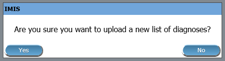Image 168 - Upload Diagnoses
CancelBy clicking onCancelbutton, user will be re-directed to Home page.
- Information Panel
The Information Panel is used to display messages back to the user.
1.6.2 Policy Renewals¶
Access to management of policy renewals is restricted to the users with the role of Clerk.
1.6.2.1 Navigation¶
All functionality for use with the administration of policy renewals can be found under the main menu Tools, sub menu Policy Renewals

Image 169 - Navigation Policy Renewals
Clicking on the sub menu Policy Renewals re=directs the current user to the Policy Renewal Page.
Image 170 - Policy Renewal Page
1.6.2.2 Policy Renewal Page¶
By having access to this page, it is possible preview the report on policy renewals, preview the journal on policy renewals and update the status of a policy. The journal will contain information on actual prompts being generated by the system. These prompt could already have been sent to the mobile phones of enrolment officers. The report on policy renewals will contain information on the expiration of policies for any given period. The page is divided into two panels (Image 170 - Policy Renewal Page).
- Select Criteria Panel
The Select Criteria Panel or the filter panel allows a user to select specific criteria to minimise the report on policy renewals.
Two tasks are carried out by this form. 1) Preview the report on policy renewal and 2) Preview the journal on policy renewal. Depending on the selected option, filter will be changed accordingly.
If Preview option is selected then a user has the following filters.
Policy StatusSelect the policy status from the drop down list by clicking on the right arrow. By selecting any of the options a user can filter the report on particular status of the policy. This filter is not mandatory. User can leave it blank to preview the report on any status.
RegionSelect theRegion; from the list of regions by clicking on the arrow on the right of the selector to select policies from a specific region. Note: The list will only be filled with the regions assigned to the current logged in user. If this is only one then the region will be automatically selected.
DistrictSelect thedistrict; from the list of districts by clicking on the arrow on the right of the selector to select policies from a specific district. Note: The list will only be filled with the districts belonging to the selected region and assigned to the current logged in user. If this is only one then the district will be automatically selected.
MunicipalitySelect theMunicipality; from the list of municipalities by clicking on the arrow on the right of the selector to preview report from a specific district. Note: The list will only be filled with the municipalities that belong to the selected district. If this is only one then the municipality will be automatically selected.
VillageSelect thevillage; from the list of villages by clicking on the arrow on the right of the selector to preview report from a specific village. Note: The list will only be filled with the villages that belong to the selected municipality.
Enrolment OfficerSelect theEnrolment Officer; from the list of enrolment officers by clicking on the arrow on the right of the selector to preview the report for the specific officer. Note: The list will only be filled with the enrolment officers belonging to the districts assigned to the current logged in user. If this is only one then the enrolment officer will be automatically selected.
Date FromBy clicking on the button next to theDate Fromdata field a calendar will pop up. Click on his desired date and the textbox will be filled with the selected date. This is a mandatory field. Only the policies for renewal date greater than or equal to theDate Fromwill be previewed.
Date ToBy clicking on the button next to theDate Todata field a calendar will pop up. Click on his desired date and the textbox will be filled with the selected date. This is a mandatory field. Only the policies for renewal date less than or equal to theDate Towill be previewed.When previewing the journal; the
Policy Statusfilter will be replaced withSMS Statusand there will be one more additional filter,Journal On.
SMS StatusSelect the
SMS statusfrom the drop down list by clicking on the right arrow. By selecting any of the options the user can filter the journal on a particularSMS status. This filter is not mandatory. By leaving it blank all journals will be displayed.
Journal OnSelect the
journal Onfrom the drop down list by clicking on the right arrow, to filter the journal either on prompt or on expiry of the prompt.
- Button Panel
Cancel:Re-directs to the Home Page
Preview:Click on the preview button to display the report based on the filters.
Update:Click on this button to manually update the status of the policy on the current day. Although this task is carried out by the IMIS Policy Renewal Service running on the server at specific intervals of time, this button enables the task to be run manually.
- Information Panel
The Information Panel is used to display messages back to the user. Messages will occur once a user has updated the policy status or if there was an error at any time during the process of these actions.
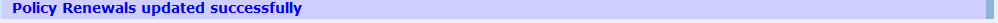Image171 - Policy Renewal updated successfully message
1.6.2.3 Preview Report on Renewals¶

Image 172 - Preview Report on Renewals
After selecting specific criteria; preview the report (Image 172 - Preview Report on Renewals) by clicking on the preview button.
1.6.2.4 Preview Journal on Renewals¶
Just like preview of the policy renewals the journal report can also be previewed. The difference between the Policy Renewal report and the Journal is; one forecasts the renewal while the other gives a report on the status of the renewal. Below is an example of a Journal Report.

Image 173 - Preview Journal on Renewals
1.6.3 Feedback Prompts¶
Access to administration of feedback prompts is restricted to the users with the role of Medical Officer.
1.6.3.1 Navigation¶
All functionality for use with the administration of feedback prompt can be found under the main menu Tools, sub menu Feedback Prompts

Image 174 - Navigation Feedback Prompts
Clicking on the sub menu Feedback Prompts re-directs the current user to the Feedback Prompt Page (:ref:`image174).

Image 175 - Feedback Prompts Page
The Feedback Prompt Page is divided into three panels (Image 175 - Feedback Prompts Page).
- Select Criteria Panel
The Select Criteria Panel or the filter panel allows a user to select specific criteria for feedback.
SMS StatusSelectSMS Statusfrom the list
RegionSelect theRegion; from the list of regions by clicking on the arrow on the right of the selector to select a specific region for feedbacks. Note: The list will only be filled with the regions assigned to the current logged in user. If this is only one then the region will be automatically selected.
DistrictSelect thedistrictfrom the list of districts by clicking on the arrow on the right of the selector to select district for feedbacks. Note: The list will only be filled with the districts belonging to the selected region and assigned to the current logged in user. If this is only one then the District will be automatically selected.
MunicipalitySelect theMunicipalityfrom the list of municipalities you wish to prompt for feedbacks. Note: The list will only be filled with the municipalities that belong to the selected district. If this is only one then the municipality will be automatically selected.
VillageSelect thevillage; from the list of villages you wish to prompt for feedbacks. Note: The list will only be filled with the villages that belong to the selected municipality.
Enrolment OfficerSelect theEnrolment Officer; from the list of enrolment officers by clicking on the arrow on the right of the selector to preview the report for the specific officer. Note: The list will only be filled with the enrolment officers belonging to the districts assigned to the current logged in user. If this is only one then the enrolment officer will be automatically selected.
Start DateType in a date; or use the Date Selector Button, to enter theStart Datefor feedbacks. Mandatory. *Note. To clear the date entry box; use the mouse to highlight the full date and then press the space key.
End DateType in a date; or use the Date Selector Button, to enter theEnd Datefor feedbacks. Mandatory. Note. To clear the date entry box; use the mouse to highlight the full date and then press the space key.
Send SMSBy ClickingSend SMSbutton, user actually sends an SMS. When an SMS is sent successfully as message will be given. If failed to be sent, a failure message will appear.
- Buttons Panel
PreviewBy clicking on thePreviewbutton, a report (journal) of feedbacks prompted will get generated and displayed (Image 176 - Feedback Prompt Journal).
CancelBy clicking onCancelbutton, user will be re-directed to Home Page.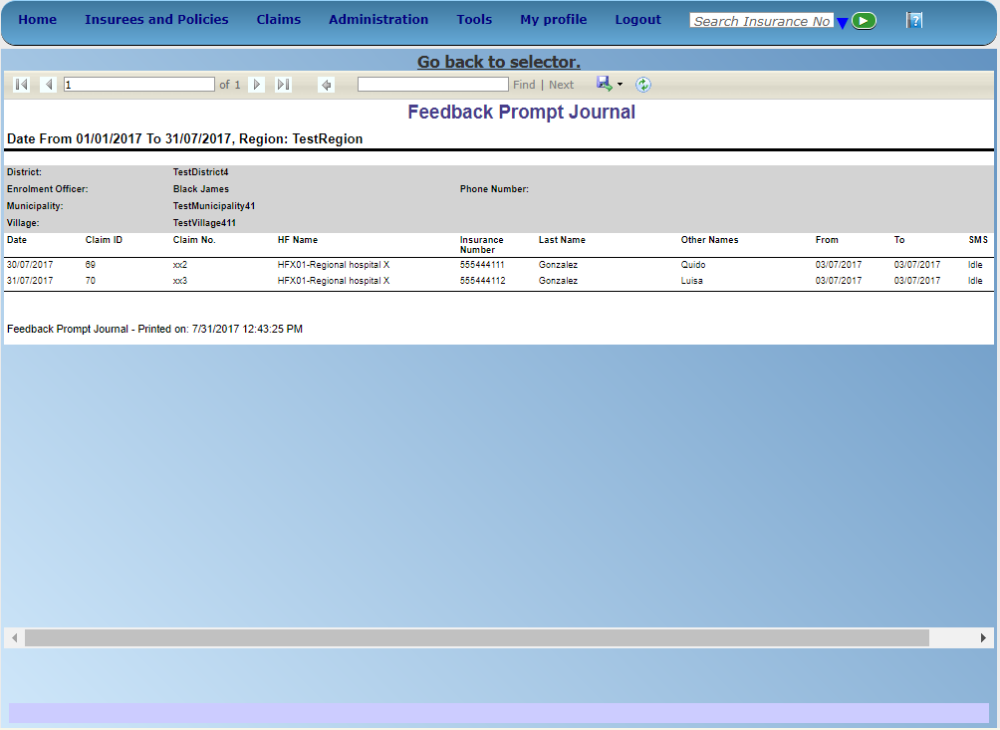Image 176 - Feedback Prompt Journal
- Information Panel
The Information Panel is used to display messages back to the user. Messages will occur if there was an error at any time during the processing of the reports.
1.6.4 IMIS Extracts¶
Access to the IMIS Extracts page is restricted to users with the role of Scheme Administrator (IMIS Central online) or HF Administrator (offline installations). This page will contain all functionality for data synchronization between IMIS Central and IMIS offline installations as well as the generation of extract files for the mobile phones (Android). Depending on the type of installation, the interface will enable and disable certain functions.
1.6.4.1 Pre-conditions¶
The extract functionality is covering extracts for the mobile phone applications and the IMIS ‘offline’ installations. Offline extracts are only to be generated in case a district has so called ‘off-line’ installations in areas where no Internet connectivity is available.
Extracts are to be downloaded to the local PC that is initiating the creation of the extract.
Standard procedures should be formulated to stipulate the time interval between Extract creations and the management of transporting and installing/transferring these extracts into the target environment: mobile phones or offline IMIS clients.
1.6.4.2 Navigation¶
All functionality related to IMIS extracts can be found under the main menu Tools, sub menu IMIS Extracts
Image 177 - Navigation IMIS Extracts
Clicking on the sub menu IMIS Extracts re-directs the current user to the IMIS Extracts Page.
This page opens in two different modes depending on the type of IMIS installation: IMIS Central (live server) or IMIS offline (installed on local network in a health facility or an office of the scheme administration).
1.6.4.3 IMIS Extracts (online mode)¶

Image 178 - IMIS Extracts
A - Phone Extract panel
The Phone extract panel is used for the generation of so called SQLite database files for the mobile phone applications. Each district will have its own phone extract file that needs to be distributed to the mobile phones within the district. To generate a phone extract file, the operator has to select a region and a district from the list of available districts. In case the user is having access to its own district only, the district will be automatically selected and shown on the display.
By clicking the Create button in panel A, a phone extract will be created. This process might take a while. As long as the hour glass (as a cursor) is shown, IMIS is still processing the file. The file size depends on the amount of photographs included in the extract. The file size could range into hundreds of MBs. To alleviate this problem two options are available:
With InsureesChecking this box means that a complete phone extract (including photos) will be generated. Leaving it unchecked a shortened phone extract without photos will be generated.
In backgroundChecking this box means that the phone extract will be created in background and the user will be notified by e-mail (provided his/her e-mail is entered in the register of users).
In case the extract is created in the background, the following dialog box appears:
Image 179
If the extract is not created in background the user is notified about successful creation by the following message as shown below.

Image 180
The extract will be downloaded to your local computer by clicking the Download link that will appear after the creation of the extract, as shown below.

Image 181
The extract file is called IMISDATA.DB3 and needs first to be copied (downloaded) to the local machine. After clicking the Download button, the operator is able to select the destination folder (locally) for the file to download as shown below.

Image 182
The extract is now ready to be transferred/copied to the mobile phones. This process is performed manually by connecting the mobile phone to the computer with the provided USB cable. The user needs to copy, manually, the file from the local machine into the ‘IMIS’ Folder on the mobile phone.
B - Offline Extract panel
The offline extract panel is used to generate the IMIS ‘offline’ extract files for the health facilities or offices of the scheme administration that run IMIS offline. To generate an offline extract file, the operator has to select a region and a district from the list of available districts. In case the user is having access to its own district only, the district will be automatically selected and shown on the display. When an operator belongs to one specific district, the district box is already selected with the district of the user. To create a new extract, the operator needs to click the Create button (in panel B).
Three types of extracts could be generated:
- Differential Extract
(Download D)Differential extracts will only contain the differences in data compared with the previous extract. The first differential extract (sequence 000001) will contain all data as it will be the first extract. Thereafter, this type of the extract, will only contain any differences after the previous extract. This will result in smaller files sent to the health facilities in off-line mode. When we click the create button, the differential extract is always generated and will be assigned the next sequence number. A separate Photo extract will be created containing only photographs linked to changes compared with the previous extract. Differential extracts with insure and policy data are only generated in case the
With Insureecheckbox is checked as shown below.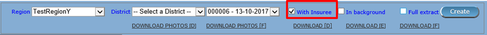Image 183
- Full extract
(Download F)The Full extract will always contain all information in the database. These extracts are only generated in case the
Full extractand theWith Insureecheckbox are checked as shown below.
Image 184
By clicking the
Createbutton, in case ofFull extractis checked, two extracts will be generated, one differential extract and one full extract. Both extracts will have the same sequence number. This implies that full extracts are not always needed/generated. A separate photo extract will be created containing all photographs.
- Empty Extract
(Download E)Empty extracts will only contain the data from registers and no data on insurees and their policies/photos. If a full set of register data should be included in the extract, the checkbox
Full extracthas to be checked as shown below.
Image 185
After clicking the Create button, the system will create the extract file and will on completion display the following message:
Image 186
The message is only shown to provide some details on how much information is exported to the extract file.
Depending on the Full extract option, we will be re-directed to the extract page and will see the newly generated extract sequence in the list or will get a new message as shown below:
Image 187
After clicking OK the statistics of the full extract will be shown:

Image 188
We are now ready to download the extract to our computer.
The combo box next to the district selector contains information on all generated extracts with the sequence number and date. (e.g. Sequence 000007 – Date 06-09-2012). If the extract selector does not show any entries (blank) it means that no previous extracts were created. At least one full extract needs to be generated. This is needed to initialise a new offline IMIS installation.
To download the actual extracts, the operator needs to select the desired extract sequence from the list of available extracts.
Four different types of extracts could be downloaded by clicking one of the following buttons:
Download D(Differential extract)
- Will download the selected differential extract with the following filename
Filename: OE_D_<DistrictID>_<Sequence>.RAR (e.g. OE_D_1_8.RAR)
Download F(Full extract)
- Will download the latest full extract with the following filename
Filename: OE_F_<DistrictID>_<Sequence>.RAR (e.g. OE_F_1_8.RAR)
Download E(Empty extract)
- Will download the latest full extract with the following filename
Filename: OE_E_<DistrictID>_<Sequence>.RAR (e.g. OE_F_1_8.RAR)
Download Photos D(Differential Photo extract)
- Will download the selected differential photo extract with filename:
Filename: OE_D_<DistrictID>_<Sequence>.RAR (e.g. OE_D_1_8_Photos.RAR)
Download Photos F(Full Photo extract)
- Will download the latest FULL photo extract with the following filename
Filename: OE_D_<DistrictID>_<Sequence>.RAR (e.g. OE_F_1_8_Photos.RAR)
After clicking the desired extract download button, the file download dialog box appears to select the destination folder for the extract file as shown below:

Image 189
In case the extract file is not available (anymore) on the server, the following dialog box might appear:

Image 190
The reason for this box to appear could be that the file to be downloaded has been removed from the server or that you have attempted the download a full extract but no full extract was generated (only the differential extracts exist). It is also possible that you have attempted to download a photo extract but no photos were added since the last extract.
Checking the checkbox In background means that the off-line extract will be created in background and the user will be notified by e-mail (provided his/her e-mail is entered in the register of users) as shown below:

Image 191
In case the extract is created in the background, the following dialog box appears:
Image 192
C - Import Extract panel
This panel will be disabled in the IMIS online mode. (Only available for IMIS offline)
D - Import Photos panel
This panel will be disabled in the IMIS online mode. (Only available for IMIS offline)
E - Button panel
The Cancel button brings the operator back to the Home Page.
F - Information panel
The Information Panel is used to display messages back to the user. Messages will occur once an action has completed or if there was an error at any time during the process of these actions.
1.6.4.4 IMIS Extracts (OFFLINE MODE)¶
Offline HF
Image 193
A - Import Extract
Used to extract photos obtained from online IMIS
B - Import Photos
Used to upload photos obtained from online IMIS
C - Download Claim XMLs
Used to download claims made in the offline health facility prior to be sent to online IMIS
Offline Insurer

Image 194
A - Import Extract
Used to upload extract obtained from online IMIS
B - Import Photos
Used to upload photos obtained from online IMIS
C - Import Extract
The Choose file section should be clicked to select an extract file to upload/import. The following file selector appears for Internet explorer (the appearance might differ for different internet browsers):

Image 195
On clicking the Choose File button, the file selector dialog appears as shown below:

Image 196
With the import/upload of an extract it is important to understand that each extract has its sequence number. This sequence number is found in the filename of the extract. We would in case of differential imports/uploads have to follow the sequence. In the example screen above, it shows in the status bar, that the last import was number 6. Therefore we should select in this case the differential extract number 7 as highlighted in the file selection dialog.
Alternatively the operator could select any full extract with a sequence number higher than 6. In case a wrong extract is selected, warning messages will appear as shown below:

Image 197
or
Image 198
In case you are missing extract sequences, additional extracts are needed to be uploaded before the extract selected. The extract selected, in this case, does not directly follow the last sequence as indicated in the status bar of the screen. The additional extracts are to be provided by NSHIP district office.
In case the extract file selected is valid, the system will import the data. New data will be added and existing data might be modified. After a successful import of an extract (Differential and FULL), a form is displayed with the statistics of the import as shown below:

Image 199
The above statistics are provided to give some quick overview of how many records were inserted or updated during the import process. In case we would for example update the phone number of an enrolment officer, it would result in one update and one insert as we always keep historical records. The photos inserts and updates are related to information on the photos, but are not the actual photographs. The actual photographs (\*.jpg) are uploaded separately.
D - Import Photos
The import of photos is optional and will have no further checking on sequence numbers. NSHIP should provide (if available) with each extract the photo extract as well.
E.g. (for Differential extract)

Image 200
OR (for FULL extract)

Image 201
The photo extract will contain all photographs associated with the actual extract in a zipped format. The Upload procedure will simply unzip the extract and copy the image files to the photo folder of IMIS.
After successful upload of the photographs the following message appears:
Image 202
E - Button panel
The ‘Cancel’ button brings the operator back to the main page of IMIS.
F - Information panel
The Information Panel is used to display messages back to the user. Messages will occur once an action has completed or if there was an error at any time during the process of these actions. If the user opens the IMIS extracts page (in offline mode only), the status bar will show the last sequence number uploaded.
1.6.5 Reports¶
Access to the reports is generally restricted to the users with the role of Manager, Accountant, Scheme Administrator and IMIS Administrator. By having access to the Reports Page, it is possible to generate several operational reports. Each report can be generated by users with a specific role (Manager, Accountant, Scheme Administrator and IMIS Administrator) only.
1.6.5.1 Pre-Conditions¶
1.6.5.2 Navigation¶
All functionality for use with the administration of Reports can be found under the main menu Tools, sub menu Reports.
Image 203 - Navigation Reports
Clicking on the sub menu Reports re-directs the current user to the Reports Page (Image 204 - Reports Page).

Image 204 - Reports Page
The Reports Page is divided into four panels (Image 204 - Reports Page).
- Select Criteria
The Select Criteria panel or the filter panel allows a user to select specific criteria determining the scope of data included in the report. The criteria (Image 205 - Primary Operational Indicators - Policies Report Criteria – Image 222 Capitation Payment Report Criteria) will change depending on the selected type of the report.
- Primary Operational Indicators - Policies Report.
Image 205 - Primary Operational Indicators - Policies Report Criteria
- Primary Operational Indicators - Claims Report.

Image 206 - Primary Operational Indicators - Claims Report Criteria
- Derived Operational Indicators Report.

Image 207 - Derived Operational Indicators Report Criteria
- Contribution Collection Report.

Image 208 - Contribution Collection Report Criteria
- Product Sales Report.
Image 209 - Product Sales Report Criteria
- Contribution Distribution Report.

Image 210 - Contribution Distribution Report Criteria
- User Activity Report.

Image 211 - User Activity Report Criteria
- Enrolment Performance Indicator Report.

Image 212 - Enrolment Performance Indicators Report Criteria
- Status of Registers Report.
Image 213 - Status of Registers Report Criteria
- Insurees without Photos Report.
Image 214 - Insurees without photos Report Criteria
- Payment Category Overview Report.

Image 215 - Payment Category Overview Report Criteria
- Matching Funds Report.
Image 216 - Matching funds Report Criteria
- Claim Overview Report.

Image 217 - Claim Overview Report Criteria
- Percentage of Referrals Report.

Image 218 - Percentage of Referrals Report Criteria
- Families and Insurees Overview Report.

Image 219 - Families and Insurees Overview Report Criteria
- Pending Insurees Report.

Image 220 - Pending Insurees Report Criteria
- Renewals Report.

Image 221 Renewals Report Criteria
- Capitation Payment Report
Image 222 Capitation Payment Report Criteria
The general meaning of selection criteria for creating of a report is as follows:
Date FromType in a date; or use the Date Selector Button, to enter the beginning of a period, in which policies have their enrolment, effective, expire or renewal days, contributions were paid or in claimed health care was provided. If used with a report, it is mandatory. Note. To clear the date entry box; use the mouse to highlight the full date and then press the space key.
Date ToType in a date; or use the Date Selector Button, to enter the end of a period, in which policies have their enrolment, effective, expire or renewal days or in which claimed health care was provided. If used with a report, it is mandatory. Note. To clear the date entry box; use the mouse to highlight the full date and then press the space key.
Payment TypeSelect thePayment Typefrom the drop down list by clicking on the right arrow. By selecting any of the options a user can filter the report on a particular type of the payment. This filter is not mandatory, leave it blank to preview the report on all the payment modes.
RegionSelect theRegion; from the list of regions by clicking on the arrow on the right of the selector to select a region, data of which should be included for the report. Note: The list will only be filled with the regions assigned to the current logged in user. If this is only one then the region will be automatically selected.
DistrictSelect theDistrict; from the list of districts by clicking on the arrow on the right of the selector to select a district, data of which should be included for the report. Note: The list will only be filled with the districts belonging to the selected region and assigned to the current logged in user. If this is only one then the district will be automatically selected.
ProductSelect theProduct; from the list of products by clicking on the arrow on the right of the selector to include in the report data for the specific product. Note: The list will only be filled with the products belong to the districts assigned to the current logged in user. If this is only one then the product will be automatically selected.
MonthSelect theMonthfrom the list of months by clicking on the arrow on the right of the selector to include in the report data relating to that month selected.
YearSelect theyearfrom the list of years by clicking on the arrow on the right of the selector to include in the report data relating to that year selected.
QuarterSelect thequarterfrom the list of quarters by clicking on the arrow on the right of the selector to include in the report data relating to that quarter selected.
HF CodeSelect theHF Code; from the list of heath facility codes by clicking on the arrow on the right of the selector to create the report for the specific health facility. Note: The list will only be filled with health facility codes of health facilities belonging to the districts assigned to the current logged in user. If this is only one then the health facility code will be automatically selected.
Enrolment OfficerSelect the enrolment officer; from the list of enrolment officers by clicking on the arrow on the right of the selector to select enrolment officer data of whom should be included in the report. Note: The list will only be filled with the enrolment officers assigned to the current selected district. If this is no district selected the enrolment officers list will be filled by all districts’ enrolment officers
PayerSelect the payer from the drop down list by clicking on the right arrow. By selecting any of the options a user can filter the report on a particular payer. This filter is not mandatory; leave it blank to preview the report on all the payers.
Claim StatusSelect the claim status from the drop down list by clicking on the right arrow. By selecting any of the options a user can filter the report on a particular claim status. This filter is not mandatory, leave it blank to preview the report on all the claim statuses.
SortingSelect the way of sorting of records in the report from the list of available ways of sorting (Renewal Date, Receipt Number, Enrolment Officer).
PreviousSelect the previous reports from the drop down list by clicking on the right arrow. By selecting any of the options a user can fetch a report which was produced before. Note: This filter is available only for Matching Funds Report.
Date Selector ButtonClicking on the
Date Selector Buttonwill pop-up an easy to use, calendar selector (image223) by default the calendar will show the current month, or the month of the currently selected date, with the current day highlighted.
- At anytime during the use of the pop-up, the user can see the date of today.
- Clicking on today will close the pop-up and display the today’s date in the corresponding date entry box.
- Clicking on any day of the month will close the pop-up and display the date selected in the corresponding date entry box.
- Clicking on the arrow to the left displays the previous month.
- Clicking on the arrow on the right will displays the following month.
- Clicking on the month will display all the months for the year.
- Clicking on the year will display a year selector.
- Report Type Selector
This panel contains a list of available report types. A user can select to create a desired report by clicking on the report type list item (Image 224 - Report Type Selector) and narrow the report using the criteria being shown on the panel above, and then click the preview button to create the report. Available report types are:
- Primary Operational Indicators Report.
- Derived Operational Indicators Report.
- Contribution Collection Report.
- Product Sales Report.
- Contribution Distribution.
- User Activity Report.
- Enrolment Performance Indicators
- Status of Registers
- Insures without Photos.
- Matching Funds.
- Claim Overview.
- Payment Category Overview.
- Families and Insurees Overview.
- Pending Insurees.
- Percentage of Referrals.
- Capitation Payment
Image 224 - Report Type Selector
- Button Panel
Preview buttonBy clicking on this button, the system will process the selected report type basic on the corresponding criteria submitted and re-direct current user to Report Page, for previewing the processed report. At any time the user clicks on the preview button, the current criteria will be saved in the session and can be reused later in the same session and for other report types where the same criteria are found.
Cancel buttonBy clicking on this button, the current user will be re-directed to the Home Page.
- Information Panel
The Information Panel is used to display messages back to the user. Messages will occur if there was an error at any time during the processing of the reports.
1.6.5.3 Report Preview¶
The report viewer offers the facility to navigate through the report either by using the arrows or by typing in a page number at the top of the report. Another feature of the report viewer is to export the report in different formats. Currently system supports three formats; Word, Excel and PDF. Select the desired format from the list by clicking on the Export link. Use the Go Back to Selector link to go back to the previous selection page.
Below are the types of reports as they can be seen in the report page.
1. primary operational indicators - policies report
The report provides aggregate data relating to policies and insurees according to insurance products. The report can be run by users with the role Manager. The table below will provide an overview on primary indicators of the report.
Code indicators
Dimension Description P1 Number of policies Time, Insurance product The number of policies of given insurance product on the last day of a respective period
(Status of the policy is Active, the last day of period is within <Effective date, Expiry day> )
P2 Number of new policies Time, Insurance product The number of new policies of given insurance product during a respective period
(Enrolment date is within the respective period, there is
nopreceding policy with the same (or before converted) insurance product for given policy)P3 Number of suspended policies Time, Insurance product The number of policies for given insurance product that were suspended during a respective period
(Status of the policy is Suspended, suspension took place within the respective period)
P4 Number of expired policies Time, Insurance product The number of policies for given insurance product that expired during a respective period
(Status of the policy is Expired, expiration took place within the respective period)
P5 Number of renewals Time, Insurance product The number of policies that were renewed for given insurance product (or a converted one) during a respective period
( Enrolment date is within the respective period, there is a preceding policy with the same (or before converted) product for given family) )
P6 Number of insurees Time, Insurance product The number of insurees covered by policies of given insurance product on the last day of a respective period
(An insuree belongs to a family with an active coverage on the last day of the respective period-see P1 )
P7 Number of newly insured insurees Time, Insurance product The number of insurees covered by new policies of given insurance product during a respective period
(An insuree belongs to a family with newly acquired policy during the respective period-see P2 )
P8 ns
Time, Insurance product
- ns
- (for policies of given insurance product) during a respective period ( Date of payment of a Contributio
- n
- is within the respective period)
P9 ns
Time, Insurance product
- ns
- that should be allocated for policies of given insurance product for a respective period provided a uniform distributio
- n
throughout the insurance period takes place.
(If the respective period overlaps with <Effective date, Expiry day> of a policy then a proportiona
- l
- part of correspondi
- ng
- Contributio
- ns
- relating to the respective period is included in available Contributio
ns)
Below is an example of the report:
Image 225 - Preview – Primary Operational Indicators - Policies Report
2. primary operational indicators - claims report
The report provides aggregate data relating to policies and insurees according to insurance products. The report can be run by users with the role Manager. The table below will provide an overview on primary indicators of the report.
Code indicators
Dimension Description P10 Number of claims Time, Health facility, Insurance product The number of claims for given insurance product that emerged during a respective period
(Start date of a claim is within the respective period)
P11 Amount remunerated Time, Health facility, Insurance product Amount remunerated for claims for given insurance product that emerged during a respective period
(Start date of a claim is within the respective period)
P12 Number of rejected claims Time, Health facility, Insurance product The number of claims for given insurance product that emerged during a respective period and were rejected
(Start date of a claim is within the respective period and the Status approval of the claim is Rejected )
Below is an example of the report:
Image 226 - Preview – Primary Operational Indicators - Claims Report
3. derived operational indicators report
The report provides operational indicators derived from primary operational indicators. The report can be run by users with the role Manager. The table below will provide an overview on the actual derived indicators provided by the report.
Code Derived indicators Dimension Description D1 Incurred claims ratio Time, Insurance product It is the ratio P11/P9 D2 Renewal ratio Time, Insurance product It is the ratio P5/P4 D3 Growth ratio Time, Insurance product It is the ratio P2/P1-for immediately preceding period D4 Promptness of claims settlement Time, Insurance product It is the average (date of sending to payment- Date of submission of the claim) for all claims relating to given insurance product and emerging in a respective period
Date of sending of payment is not in the structure of Claim, it has to be retrieved from a journal-can be?)
D5 Claims settlement ratio Time, Health facility, Insurance product It is the ratio (P10- P12)/P10 D6 Number of claims per insuree Time, Insurance product It is the ratio P10/P6 D7 Average cost per claim Time, Health facility, Insurance product It is the ratio P11/P10 D8 Satisfaction level Time, District, Health facility The average mark from feedbacks received in a respective period D9 Feedback response ratio Time, District, Health facility The ratio of number of feedbacks received (up to time of creation of the report) and number of feedbacks asked for in a respective period Below is an example of the report:

Image 227 - Preview – Derived Operational Indicators Report
4. Contribution collection report
The report lists all actual payments of contributions according to insurance products in the defined period. The report can be used as input to an accounting system. The report can be run by users with the role Accountant. Payments are assigned to the specified period according to the actual date of payment.
Below is an example of the report:

Image 228 - Preview – Contribution Collection Report
5. product sales report
The report provides overview of selling of policies according to insurance products in terms of calculated contributions (not necessarily actually paid). The report can be run by users with the role Accountant. Policies are assigned to the specified period according to their effective days.
Below is an example of the report:

Image 229 - Preview – Product Sales Report
6. Contribution distribution report
The report provides proportional amount of actually paid contributions allocated by IMIS to specific months according to insurance products. The report can be run by users with the role Accountant. This report shows the information about the Total collection, Allocated amount and Not allocated amount for contributions in the specified period.
Allocated amount is the proportionally calculated amounts of contributions paid covering the month. Not Allocated amount is the amount collected for contributions that have a start date in the future (after the month in question).
Below is an example of the report:
Image 230 - Preview – Contribution Distribution Report
7. user activity report
The report shows activities of users according to types of activities and types of entities to which the activities relate. The report can be run by users with the role IMIS Administrator. Below is an example of the report:

Image 231 - Preview – User Activity Report
8. enrolment performance indicator report
The report provides overview of activity of enrolment officers. The report can be run by users with the role Manager. Below is an example of the report:

Image 232 - Preview – Enrolment Performance Indicator Report
9. status of registers report
The report provides an overview of the number of items in registers according to districts. The report can be run by users with the role Scheme Administrator. Below is an example of the report:
Image 233 - Preview – Status of Registers Report
10. insurees without photos
The report lists all insurees according to enrolment officers that have not assigned a photo. The report can be run by users with the role Accountant. Below is an example of the report:

Image 234 - Preview – Insurees without photos
11. matching funds
The report lists all families/groups according to insurance products and (institutional) payers that paid contributions in the specified period. This report is useful for claiming of subsidies for running of health insurance schemes. The report can be run by users with the role Accountant. Below is an example of the report:
Image 235 - Preview –Matching Funds
12. claim overview
The report provides detailed data about results of processing of claims in IMIS according to insurance products and health facilities. The report can be used as a tool for communication between a health insurance scheme and its contractual health facilities. The report can be run by users with the role Accountant. Claims are assigned to the specified period according to date of provision of health care (in case of in-patient care according to the date of discharge). Below is an example of the report:

Image 236 Preview – Claim Overview
13. payment category overview
The report provides split of total contributions according to their categories. The report can be run by users with the role Accountant. Contributions are assigned to the specified period according to actual payment date. Below is an example of the report:

Image 237 - Preview – Payment Category Overview
14. Families and Insurees Overview report
The report provides an overview of enrolled families/groups and their members in specified location within the specified period. The report can be run by users with the role Accountant. Below is an example of the report:
Image 238 - Preview – Families and Insurees Overview Report
15. Percentage of Referrals report
The report lists all primary health care facilities (the category is Dispensary and Health Centre) in the selected district and for each such health facilities provides the following indicators:
- The number of visits (claims) of the primary health care facility in the selected period.
- The number of out-patient visits that have Visit Type equal to Referral in all other health facilities (irrespective of the district) for insurees with the First Service Point in the respective primary health care facility.
- The number of in-patient stays that have Visit Type equal to Referral in all health facilities-hospitals (irrespective of the district) for insurees with the First Service Point in the respective primary health care facility.
The report can be run by users with the role Accountant. Below is an example of the report:

Image 239 - Preview – Percentage of Referrals Overview Report
16. Pending Insurees report
The report lists all insurees whose photos have been sent to IMIS but who has no record in IMIS yet. The report can be run by users with the role Accountant. Below is an example of the report:

Image 240 - Preview – Pending Insurees Report
17. Renewals report
The report lists all renewed policies in given period for given insurance product and optionally for given enrolment officer. The families that have at least one payment of contributions in given period of time are included in the report. The report can be run by users with the role Accountant. Below is an example of the report:

Image 241 - Preview – Renewals Report
18. Capitation Payment Report
The report lists capitation payments for all health facilities specified in the capitation formula for specified month and for given insurance product. The report can be run by users with the role Accountant. Below is an example of the report:

Image 242 - Preview –Capitation Payment Report
1.6.6 Utilities¶
Access to the Utilities is restricted to the users with the role of IMIS Administrator.
The Utilities is the place for database administration. By having access to this page, it is possible to backup and restore the IMIS operational database and also to execute SQL Scripts (patches provided for maintenance or update of the database). At the top of the page, the current “Backend” version is displayed for reference.
1.6.6.1 Navigation¶
All functionality for use with the administration of utilities can be found under the main menu Tools, sub menu Utilities
Image 243 - Navigation Utilities
Clicking on the sub menu Utilities re-directs the current user to the Utilities Page.
Image 244 - Utilities Page
1.6.6.2 Backup¶
Backup utility can be found in the top panel of the Utilities Page. By default the path of the backup folder will be populated from the default table. User can change the path according to the requirement. Next to the textbox user can see one heck box called Save Path. If user wants to update the backup folder in default table then this check box should be in checked state. Otherwise system will take the backup on the folder assigned by the user but it will not be updated in database. So next time when user comes on the Utilities Page, the textbox will be populated with the original path. After the path has been entered user can just click on the Backup button to start the process and a progress bar will be appeared on the screen. Users are requested to be patient while the system performs the task.
Image 245 - Backup is in progress
1.6.6.3 Restore¶
Restore utility can be found in the second panel of the Utilities Page. User will have to put the path of the backup file to be restored. After the path has been entered user can just click on the Restore button to start the process and a progress bar will be appeared on the screen. Users are requested to be patient while the system performs the task.
Image 246 - Backup is in progress
1.6.6.4 Execute script¶
Execute script can be found in the third panel of the Utilities Page. User will have to choose the script by clicking on the browse button. User will have to select the file only with the “.isf” extension. After the file has been chosen, user can just click on the Execute button to run the script. Users are requested to be patient while the system is executing the script. After the script is executed successfully, backed version will be updated to the latest version. If user will try to run the lower or the equal version’s script then system will prompt the user with the appropriate message.
1.6.7 Funding¶
Access to the Funding is restricted to the users with the role of Accountant.
The Funding is the place where funding from external authorities (payers) can be for entered. IMIS creates internally one fictive family/group (the insurance number of the head of the fictive family/group is 999999999, the name is Funding and the other name is Funding as well) for the district for which a funding is done. Each entering of a fund results in creation of a fictive policy for the corresponding fictive family/group with paid contribution in the amount of the funding. The fictive policy is active since the date of payment of the corresponding fund. These fictive policies are overpaid as these funds are usually much higher than the contribution rate for a single family/member of the group but it doesn’t matter. External funding corresponds to payment of contributions for many families/members of the group in some period. IMIS can regard funds as standard contributions and its standard functionality can be used for handling of funds. One distinctive feature of payment of funds by means of the fictive policies is that the payments of funds don’t appear in the reports on matching funds generated for funding authorities. So, there is no danger that offices of the scheme administration would acquire new funds based on funding already acquired.
1.6.7.1 Navigation¶
The functionality for entering of funds can be found under the main menu Tools, sub menu Funding

Image 247 - Navigation Funding
Clicking on the sub menu Funding re-directs the current user to the Funding Page.
1.6.7.2 Funding Page¶
1. Data Entry

Image 248 - Funding Page
RegionSelect the region from the list of regions for which the funding is designated by clicking on the arrow on the right of the selector. Note: The list will only be filled with the regions assigned to the current logged in user.
DistrictSelect the district from the list of districts for which the funding is designated. by clicking on the arrow on the right of the selector. Note: The list will only be filled with the districts belonging to the selected region and assigned to the current logged in user.
ProductSelect an insurance product from the list of insurance products purchased in the selected district (including national insurance products) for which the funding is designated.
PayerSelect from the list of institutional payers the funding authority/agency.
Payment DateEnter the date of receiving of the funding.
Contribution PaidEnter the amount of the funding.
Receipt NumberEnter an identification of the document accompanying the funding.2. Saving
Once all mandatory data is entered, clicking on the
Savebutton will save the record. A message confirming that the new password has been saved will appear. The user will be re-directed back to the Home Page.3. Mandatory data
If mandatory data is not entered at the time the user clicks the
Savebutton, a message will appear in the Information Panel, and the data field will take the focus (by an asterisk on the right side of the corresponding field). The user will be re-directed to the Home Page.4. Cancel
By clicking on the Cancel button, the user will be re-directed to the Home Page.
1.7 Password change¶
Any user can change his/her password by adjustment of his/her profile.
1.7.1 Navigation¶
Functionality for changing of a password can be in the menu My Profile, sub menu Change Password

Image 249 - Navigation Change Password
Clicking on the sub menu Change Password re-directs the current user to the Change Password Page.
1.7.2 Change Password Page¶
5. Data Entry

Image 250 - Change Password Page
Current PasswordEnter the password of the current user.
New PasswordEnter a new password of the current user. The password should have at least 8 alphanumeric characters with at least one digit.
Confirm PasswordRepeat the new password of the current user.6. Saving
Once all mandatory data is entered, clicking on the
Savebutton will save the record. The user will be re-directed back to the Home Page. A message confirming that the new password has been saved will appear at the bottom.7. Mandatory data
If mandatory data is not entered at the time the user clicks the
Savebutton, a message will appear in the Information Panel, and the data field will take the focus (by an asterisk on the right side of the corresponding field).8. Cancel
By clicking on the Cancel button, the user will be re-directed to the Home Page
1.8 Offline mode¶
1.8.1 Introduction¶
IMIS system can be used in offline mode, which makes it possible for usage by health facilities (HF) and scheme administration offices with low/no internet connectivity.
1.8.2 OFFLINE FACILITIES¶
Facilities available while offline and online in IMIS, are similar with some few differences. The following are the feature wise differences found while using IMIS in offline mode.
LOGINIf a user who is logging in is having user role HF Administrator or offline Scheme Administrator and if Heath Facility ID/Scheme Office ID is not set yet, just after clicking login button on the login screen/page, the user will be prompted to enter Health Facility/Scheme Office ID (Image 251 - Enter HF ID - HF Administrator Login, IMIS offline), (Image 252 - Enter Scheme Office ID - offline Scheme Administrator Login, IMIS offline), only once for that very first time of logging in.

Image 251 - Enter HF ID - HF Administrator Login, IMIS offline

Image 252 - Enter Scheme Office ID - offline Scheme Administrator Login, IMIS offline
INFORMATION BARThroughout the application, an information bar at the bottom of each page will have a different background colour to that of online IMIS and on the its right end, there will be shown heath facility code and health facility name / Scheme Office ID submitted (Image 253 - Information Bar – Scheme Office, IMIS offline), (Image 254 - Information Bar - Health Facility, IMIS offline).
Image 253 - Information Bar – Scheme Office, IMIS offline
Image 254 - Information Bar - Health Facility, IMIS offline
MENUS ACCESSFor all users with roles other than HF Administrator and Offline Scheme Administrator , will have the menus available to them as per normal roles’ rights in online IMIS version. Menu access in the offline version is different in following scenarios:
- User with roles HF Administrator and Offline Scheme Administrator can access only
Users,IMIS ExtractsandUtilitiesmenus, while all other users with different roles can access menus just as they would do in the online IMIS version.
ExtractsExtracts Menu leads an offline user to Extracts control panel. Using this panel, an offline user with rights to this panel can import data from online IMIS to the local offline IMIS, and can also download claims and enrolments prior to upload them to the online IMIS. This panel is divided into five sections (Image 255 - Extracts Control Page, HF Administrator, IMIS offline), (Image 256 - Extracts Control Page, Offline Scheme Administrator, IMIS offline) If an offline user is HF Administrator, section C will contain facility to
Download Claims. If an offline user is Offline Scheme Administrator, section C will contain facility toDownload Enrolments
Image 255 - Extracts Control Page, HF Administrator, IMIS offline

Image 256 - Extracts Control Page, Offline Scheme Administrator, IMIS offline
section a - import extractThis section has a facility to enable synchronization of online IMIS data with that offline IMIS data. When online data in a zipped file is obtained (downloaded extraction) from online IMIS to user local computer, user will use this section to put that data into offline IMIS.
User has to select a file from a local computer by clicking the ‘select file’ button on the left side of the section, and in the popup window which appears (Image 256 - Extracts Control Page, Offline Scheme Administrator, IMIS offline) user can navigate to the required file and select the file.

Image 257 - Select File Popup Window, Import Extracts, IMIS offline
After clicking the upload button on the very end of right hand side in this section, data in the file will be imported to the offline IMIS and confirmation will be given as popup messages (Image 257 - Select File Popup Window, Import Extracts, IMIS offline), (Image 258 - Popup Window, Import Extracts, HF Administrator, IMIS offline).

Image 258 - Popup Window, Import Extracts, HF Administrator, IMIS offline

Image 259 - Popup Window, Import Extracts, Offline Scheme Administrator, IMIS offline
User cannot import an extract whose sequence number is same as last one imported; if done so, a popup message (Image 260 - Popup Window, Wrong sequence of an extract file, IMIS offline) will be shown.
Image 260 - Popup Window, Wrong sequence of an extract file, IMIS offline
section b - import photosJust as the section name implies, this is a section with facility to enable a user synchronize insurees’ photos in online IMIS, with insurees’ photos in offline IMIS. When online insurees’ photos in a zipped file is obtained from online IMIS to user local computer, user will use this section to put those photos into offline IMIS.
User has to select a file from a local computer by clicking the ‘select file’ button on the left side of the section, and in the popup window which appears (Image 261 - Select File Popup Window, Import Photos, IMIS offline), user can navigate to the required file and select the file.
Image 261 - Select File Popup Window, Import Photos, IMIS offline
After clicking the upload button on the very end of right hand side in this section, data in the file will be imported to the offline IMIS and confirmation will be given as popup messages (Image 261 - Select File Popup Window, Import Photos, IMIS offline).

Image 262 - Popup Window, Import Photos, IMIS offline
If importation of photo is not done due to some reason, the above popup message will not be shown, instead system will issue proper popup message to notify a user what went wrong and what is to be done.
section c - download claim xmlsThis section has facility to enable offline HF Administrator download to a zipped file all offline claims. By clicking the download button on the right hand side, the user initiate download process and all offline claims will be downloaded to a default downloads folder in user’s local computer or a prompt of ‘where to save file’ will be displayed by browser’. User can navigate through folder in his/her local computer to find the file downloaded. If no new claims found, a message will be displayed.
download enrolment xmlsThis section has facility to enable Offline Scheme Administrator download to a zipped file all offline enrollments of families, insurees, policies and contributions. By clicking the download button on the right hand side, the user initiate download process. If no enrolment found, a popup message box (Image 262 - Popup Window, Import Photos, IMIS offline) will appear, notifying the user. Otherwise enrollments will be downloaded in a zipped file and a confirmation popup message (Image 264 - Popup Window, Download Enrolments, IMIS offline) will appear

Image 263 - Popup Window, Download Enrolments, IMIS offline

Image 264 - Popup Window, Download Enrolments, IMIS offline
section d - buttonsThis section has a cancel button, which when clicked will take the current user to the Home page.
section e - information barInformation bar at the bottom will show different notification messages in blue color depending on the actions of the user. Such actions and messages may be:
- No Previous Extract Found
This message is seen at the first time when using the system and no any extract has been imported into the offline IMIS

Image 265 - IMIS Extracts, Information Bar, IMIS offline
- Last Extract Sequence: <Sequence Number>
This message is seen, after a single / series of extract importation have been made to the offline IMIS and that much times will be shown as a sequence number at the end of the message. This enables proper tracking of right extracts to import and use.

Image 266 - IMIS Extracts, Information Bar, IMIS offline
- No claims Found
When HF offline IMIS user is downloading offline claims and no new offline claims is found, this message is displayed.

Image 267 - IMIS Extracts, Information Bar, IMIS offline
- USERS
Users with role HF Administrator, can create only users with roles: Receptionist, Claim Administrator and HF Administrator (Image 268 - Users Page - HF Administrator, IMIS offline). User with role ‘offline NSHIP Administrator’, can create only user with role: Clerk (Image 269 - Users Page - Offline Scheme Administrator, IMIS offline).
Image 268 - Users Page - HF Administrator, IMIS offline

Image 269 - Users Page - Offline Scheme Administrator, IMIS offline
- data access
- Search / Find
In all pages in
InsureesandPoliciesmenus with search / find acility, there will be an extra search criteria (image 270) to enable search for offline data only. This feature is available if a user is in Offline IMIS.
Image 270 - Search Criteria - offline only data, IMIS offline
- Create / Edit
Only families, insurees, policies and contributions created/edited while offline, will be available for further manipulation. An online data is available for viewing purposes.
For an offline user with a right to open
InsureesandPoliciesmenus, he/she can access all data but can manipulate only that data which was created offline. The rest of the data will be available in read-only mode
1.9 Analytic and reporting component¶
The Analytic and Reporting component of the Insurance Management Information System (AR-IMIS) provides managerial data for management of health insurance schemes supported by IMIS, allows easy and speedy analysis of these data with the objective to reveal causes of different phenomena encountered in supported health insurance schemes. Provided data allow also monitoring of developments within supported health insurance schemes and identification of potential errors in operational data.
1.9.1 Concept of AR-IMIS¶
The concept of AR-IMIS is based on populating of the Data Warehouse with aggregate data from the operational database of IMIS. This populating is done automatically and regularly (usually once a week) from the operational database by Extract, Transformation and Loading process (ETL). Within this process data from the operational database are aggregated and stored in the Data Warehouse in conformance with multidimensional data model (Image 271 - Concept of AR-IMIS).
Image 271 - Concept of AR-IMIS
This model is suitable for analysis of data. Questions like “What is the number of newly covered insurees by an insurance product at during a calendar period and who were of an age, a gender, lived in a location and were cared for by a enrolment officer? Data in the multidimensional Data Warehouse are presented by a suitable front-end tool. Currently AR-IMIS uses MS Excel as the front-end presentation tool. An Excel file is remotely connected to the Data Warehouse and data are stored in the Excel file in the form of so called pivot tables. The multidimensional model is based on the notion of facts and dimensions. The facts (indicators) are what we are interested in. For example, a fact may number of insured persons, number of active policies, number of submitted claims etc. Facts can be looked at from different angles-for example from the point of view of age and gender of insured persons, from the point of view of time period etc. These angles (points of view) are captured by the notion of dimensions that are used for qualification of facts (Image 272 - Facts and dimensions).

Image 272 - Facts and dimensions
A dimension is composed from points that represent specific values in the dimension for which we want to look at facts-for example November 2015 may be one point in the Time dimension. Points of a dimension may be organized in hierarchies. Higher levels of hierarchies represent more aggregate views. Going to the lower levels by so called drill down operation we can analyze facts in more detail-for example we may drill down from calendar years to quarters of corresponding calendar years and further to months. We can go in an opposite direction and look at facts from more aggregate points of view (drill up).For example from looking at the amount of collected contributions in calendar months we can look at the same indicator according to quarters of a year or according to calendar years.
Facts with related meaning and the identical set of qualifying dimension are represented in the multidimensional model of the Data Warehouse as so called cubes. We can do other operations on cubes as for example slicing when we select one or several points in one dimension and look at the rest of cube or dicing when we select on or several points in two or more dimensions. All such operations allow analysis of data in the Data Warehouse in an easy and comprehensive way.
1.9.2 Dimensions¶
Dimensions represent our point of view on facts. Each dimension has several values (points). The points are used for qualification of our view on the facts. AR-IMIS provides values of facts corresponding to specified points across one or more dimensions. The points may be organized in hierarchies. Lower levels of a hierarchy allow looking at a fact according to more specific points. For example, the most important Time dimension has at the lowest level calendar months. The calendar months are grouped into quarters and quarters into calendar years. So, we can get a value of a fact corresponding to a specific month. Going one level up in the dimension Time, we can get can get a value of the fact corresponding to a specific quarter and going even up we can get a value of the fact corresponding to a specific calendar year. If we don’t specify any point in a dimension, it means we are interested in a value of a fact for all points together in the given dimension.
AR-IMIS defines several dimensions. Their meaning is dependent on the context of a fact for which they are used. For example, for the fact Number of submitted claims the Time dimension means in AR-IMIS a period in which claimed health care was provided. It could have also other interpretations, for example, it may be a period in which claims were submitted. Exact interpretation of each dimension is indicated with description of each fact provided below.
The points of a dimension are either fixed, e.g. the points Sex are Male/Female/Undefined for the dimension, or are obtained from registers in the operational part of IMIS. For example, the points for the dimension Services are obtained from the current status of the register of services in IMIS.
The following table shows dimensions used across AR-IMIS. For each dimension its name, names of attributes used for referencing of their points, source for their points, and their meaning.
| Name | Names of hierarchy / attributes | Source of data | Points |
|---|---|---|---|
| Time | Time Hierarchy Other fields: Month Name Quarter Name Year Time |
generated by IMIS | Hierarchy: Years->Quarters ->Months |
| Age | Age Range | generated by IMIS | below1,1-4,5-9… , 80+,Unkown |
| Gender | Gender Name | generated by IMIS | Male, Female, Unknown |
| Regions | Region Hierarchy Other fields: Region District Ward Village |
register of locations | Hierarchy: Regions->Distri cts->Wards->Vil lages |
| Products | Product Hierarchy Other fields: Region District Product Name Product Code |
`register of insurance products <#insu rance-products- administration> `__ | Hierarchy: Regions->Distri cts->Products |
| Payers | Payer Name | `register of payers <#payers -administration >`__ | Families, Payers (the list of) |
| Officers | Officer Hierarchy Other fields: Region District Last Name Other Names Assistant Code |
`register of enrolment officers <#enro lment-officers- administration> `__ | Hierarchy: Regions->Distri cts->Enrolment Officers |
| Services | Service Hierarchy Other fields: Service Code Service Name Service Category |
register of medical services _ | Hierarchy: (Curative, Preventive)->Se rvices |
| Items | Item Hierarchy Other fields: Item Code Item Name Item Category |
register of medical items | Hierarchy: (Drugs, Prostheses)->It ems |
| Diseases | Disease Hierarchy Other fields: Disease Name Disease Code Disease Category |
list of diagnoses | |
| Providers | Provider Hierarchy Other fields: Provider Name Disease Code Provider Category |
`register of health facilities <#he alth-facilities -administration >`__ | Hierarchy: Regions->Distri cts-> (Dispensary, Health Centre, Hospital) ->Health facility |
| Care Category | Category Care | generated by IMIS | Emergency, Other, Referral, Unknown |
| Care Type | Care Type | generated by IMIS | In-patient, Out-patient, Unknown |
| Questions | Question | generated by IMIS | Care Rendered, Drug Prescribed, Drug Received, Payment Aske, Unknown |
Table 9.1 Overview of dimensions
1.9.3 Facts¶
Facts provided by AR-IMIS can be structured into the areas according to (Image 273 - Areas of facts). Within each area several facts packed into one or several cubes are provided. Facts are packed into the same cube if they have an associated meaning and are provided with the same set of dimension. The following articles lists available cubes according to the areas, for each cube indicates available facts with description of their meaning and
Image 273 - Areas of facts
underlying set of qualifying dimensions. If meaning of a dimension is not straightforward, its description is provided. It relates especially to the Time dimension where it is important which datum related with a fact is taken as the governing date for association with given point (period) in the Time dimension.
1.9.3.1 Facts on enrolment and policies¶
This group of facts relates to acquisition of insures and development of coverage by health insurance schemes. Facts available are listed in Table 9.2
| Cube | Fact | Meaning | Dimension | Comment |
|---|---|---|---|---|
| Population | Population | Number of inhabitants | Gender | |
| Region | ||||
| Time | ||||
| Number of families/gr oups | Number of families/gr oups | Number of households according to a census | Region | |
| Time | ||||
| Current and new insurees | Current insurees | Insurees covered by at least one policy active at the end of a time period | Age | Age at the end of a time period |
| Gender | ||||
| Enrolment Officers | An enrolment officer responsible for correspondi ng policy | |||
| New acquired insurees | Insurees newly insured during a time period | Region | Place of living of a household | |
| Products | An insurance product covering an insuree | |||
| Time | Period of enrolment of insurees for new insurees Period of effective day and later of their policies for current insurees |
|||
| All types of policies | Current policies | Number of active policies at the end of a time period | Age | Age of the head of a household at the end of a time period |
| Expired policies | Number of policies that expired during a time period | Gender | Gender of the head of a household | |
| Renewed policies | Number of policies that were renewed during a time period | Enrolment Officers | An enrolment officer responsible for correspondi ng policy | |
| Sold policies | Number of policies that were sold during a time period | Region | Place of living of a household | |
| Products | An insurance product of a policy | |||
| Time | Period of enrolment date for sold policies Period of expiry date for expired policies Period of renewal date(when renewing was done) for renewed policies Period of effective day and later for current policies |
|||
| Share of insured population | Share of insured population | =Current insures / Population at the end of a time period |
Gender | |
| Region | Place of living of a household | |||
| Products | An insurance product covering an insuree | |||
| Time | ||||
| Share of insured families/gr oups | Number of insured families/gr oups | Number of households that are covered by at least one active policy at the end of a time period | Region | Place of living of a household |
| Time | ||||
| Share of insured families/gr oups | =Number of insured households /Number of households at the end of a time period |
Region | Place of living of a household | |
| Time |
Table 9.2 Facts on enrolment and policies
1.9.3.2 Facts on collected revenue¶
This group of facts relates to revenue of health insurance schemes. Facts available are listed in Table 9.3.
| Cube | Fact | Meaning | Dimension | Comment |
|---|---|---|---|---|
| Contributio n collection | Contributio n collected | Contributio ns collected in given time period | Enrolment Officers | Collection of contributio ns from policies of an enrolment officer |
| Payers | Collection of contributio ns from an institution al payer or from families itself | |||
| Products | Collection of contributio ns within an insurance product | |||
| Time | Period of payment date of contributio ns | |||
| Contributio n allocation | Contributio n allocated | Amount of collected contributio ns allocated proportiona lly for using in a time period | Products | Allocation of contributio ns within an insurance product |
| Time | Period of allocation of contributio ns | |||
Table 9.3 Facts on contributions
1.9.3.3 Facts on claims¶
This group of facts relates to claims forwarded by health care providers to administrators of health insurance schemes. Facts available are listed in Table 9.4.
| Cube | Fact | Meaning | Dimension | Comment |
|---|---|---|---|---|
| Claim details | Amount claimed | Total amount in nominal prices that was submitted by health care providers for health care provided in given period | Providers | Providers that entered and or submitted claims |
| Amount rejected | Total amount that was on totally rejected claims | Time | Time period of provision of health care that was invoiced in claims | |
| Entered claims | Number of claims entered | |||
| Submitted claims | Number of claims submitted | |||
| Rejected claims | Number of claims totally rejected | |||
| Average amount claimed | =Amount claimed/ Submitted claims | |||
| Average amount rejected | =Amount rejected/ Rejected claims | |||
| Claim details products | Amount adjusted | Amount adjusted after processing in nominal prices | Providers | Providers that submitted claims |
| Amount paid | Amount actually to be paid to health facilities taking into account indexes of relative pricing | Products | Products by which health care claimed was covered | |
| Processed claims | Number of claims sent for valuation | Time | Time period of provision of health care that was invoiced in claims | |
| Paid claims | Number of claims actually valuated | |||
| Average amount adjusted | =Amount adjusted/Pr ocessed claims | |||
| Average amount paid | =Amount paid/ Valuated claims |
Table 9.4 Facts on claims
1.9.3.4 Facts on utilization of health care¶
This group of facts relates to utilization of health care by insures according to submitted and not rejected claims. Facts available are listed in Table 9.5
| Cube | Fact | Meaning | Dimension | Comment |
|---|---|---|---|---|
| Admissions and visits and hospital days | Number of hospital admissions | Number of hospital admissions | Age | Age at the time of provision health care |
| Gender | ||||
| Disease | . | |||
| Number of hospital days | Care category | |||
| Average length of stay | = Number of hospital days/ Number of hospital admissions | Products | In case two or more insurance products covered a hospital admission/v isit, it is accounted to each of them | |
| Number of out-patient visits | Providers | Providers which claimed health care | ||
| Time | Hospital admissions are associated with time periods according to dates of discharge. Time period of provision of health care | |||
| Utilization of services | Services utilized | Number of utilized services according to submitted claims. If a service was provided during one visit/hospi tal stay, the service is counted according to the number of its provision |
Age | Age at the time of provision health care |
| Gender | ||||
| Disease | . | |||
| Care category | ||||
| Care type | ||||
| Products | ||||
| Providers | Providers which claimed health care | |||
| Services | ||||
| Time | Hospital admissions are associated with time periods according to dates of discharge. Time period of provision of health care | |||
| Utilization of medical items | Items utilized | Number of utilized medical items according to submitted claims If a medical item was provided during one visit/hospi tal stay, the medical item is counted according to the number of its provision |
Age | Age at the time of provision health care |
| Gender | ||||
| Disease | . | |||
| Care category | ||||
| Care type | ||||
| Products | ||||
| Providers | Providers which claimed health care | |||
| Items | ||||
| Time | Hospital admissions are associated with time periods according to dates of discharge. Time period of provision of health care | |||
| Average utilization of services per insuree | Average utilization of services per insuree | = Services utilized / Current insurees | Age | Age at the time of provision health care |
| Gender | ||||
| Disease | ||||
| Products | ||||
| Services | ||||
| Time | Hospital admissions are associated with time periods according to dates of discharge. Time period of provision of health care | |||
| Average utilization of medical items per insuree | Average utilization of medical items per insuree | = Items utilized / Current insurees | Age | |
| Gender | ||||
| Disease | ||||
| Products | ||||
| Items | ||||
| Time |
Table 9.5 Facts on of utilization health care
1.9.3.5 Facts on expenditures for health care¶
This group of facts relates to expenditures for health care actually paid to health care providers. Facts available are listed in Table 9.6
| Cube | Fact | Meaning | Dimension | Comment |
|---|---|---|---|---|
| Expenditure s for services | Service expenditure s | Expenditure s for services actually remunerated to health facilities | Age | Age at the time of provision health care |
| Gender | ||||
| Disease | . | |||
| Care category | ||||
| Care type | ||||
| Products | ||||
| Providers | Providers which claimed health care | |||
| Services | ||||
| Time | Hospital admissions are associated with time periods according to dates of discharge. Time period of provision of health care | |||
| Expenditure s for medical items | Item expenditure s | Expenditure s for medical items actually remunerated to health facilities | Age | Age at the time of provision health care |
| Gender | ||||
| Disease | . | |||
| Care category | ||||
| Care type | ||||
| Products | ||||
| Providers | Providers which claimed health care | |||
| Items | ||||
| Time | Hospital admissions are associated with time periods according to dates of discharge. Time period of provision of health care | |||
| Average expenditure s for services per insuree | Average expenditure s for services per insuree | = Service expenditure s/ Current insurees | Age | Age at the time of provision health care |
| Gender | ||||
| Disease | . | |||
| Products | ||||
| Services | ||||
| Time | Hospital admissions are associated with time periods according to dates of discharge. Time period of provision of health care | |||
| Average expenditure s for medical items per insuree | Average expenditure s for medical items per insuree | = Item expenditure s/ Number of inhabitants | Age | Age at the time of provision health care |
| Gender | ||||
| Disease | . | |||
| Products | ||||
| Items | ||||
| Time | Hospital admissions are associated with time periods according to dates of discharge. Time period of provision of health care | |||
| Average expenditure s for health care per insuree | Average expenditure s per insuree | = Average expenditure s of services per insuree + Average expenditure s for medical items per insuree | Age | Age at the time of provision health care |
| Gender | ||||
| Disease | ||||
| Products | ||||
| Time | Hospital admissions are associated with time periods according to dates of discharge. Time period of provision of health care |
Table 9.6 Facts on expenditures for health care
1.9.3.6 Facts on feedbacks¶
This group of facts relates to evaluation of request for feedbacks on provided health care that are issued by medical officers during processing of claims. Facts available are listed in Table 9.7
| Cube | Fact | Meaning | Dimension | Comment |
|---|---|---|---|---|
| Feedback details | Feedbacks sent | Number of requests for feedbacks sent in a time period | Products | Insurance products that covered claims initiating requests for feedbacks |
| Feedbacks responded | Number of feedbacks received in a time period | Providers | Providers that submitted claims initiating requests for feedbacks | |
| Overall assessment | Sum of all assessment overall assessment marks in responded feedbacks | Time | Period of sending/rec eiving feedbacks | |
| Feedback return share | = Feedbacks responded/ Feedbacks sent | |||
| Average overall assessment | = Overall assessment/ Feedbacks responded | |||
| Feedback answers | Answers Yes | Count of all Yes answers | Products | Insurance products that covered claims initiating requests for feedbacks |
| Share of Answers Yes | = Answers Yes/ Feedbacks responded | Providers | Providers that submitted claims initiating requests for feedbacks | |
| Questions | ||||
| Time | Period of sending/rec eiving feedbacks |
Table 9.7 Facts on feedbacks
1.9.4 How access data from the Data Warehouse¶
Data from the Data Warehouse can be accessed by means of an Excel file. As access to the Data Warehouse is protected, a user has to get from an administrator of AR-MIS URL of the Data Warehouse for remote access, a userid and a password. A userid may allow access to all data in the Data Warehouse or only to a subset of data corresponding to a specific region, to selected regions, to a specific district or to selected districts.
The procedure of accessing of data is as follows (Image 274 - Accessing the Data Warehouse)
Image 274 - Accessing the Data Warehouse
- Open an Excel file
- Click on the menu item Data
- Click on the sub-menu From Other Sources
- Click on the sub-menu From Analysis Services
- A dialog box appears for specification of logon data:
- Enter URL of the Data Warehouse into the field Server Name
- Select the option Use the following user name and password
- Enter your userid into the field User Name
- Enter your password into the field Password
- Click on Finish
- A box appears (Select Database and Tables) with the list of available cubes. Select one and click on Finish
- A box appears (Save Data Connection File and Finish).Check the box Save passport in file and click on Finish.
- A box appears (Import Data). Select whether cube should be accessed by a pivot table and/or chart and specify a placement of the pivot table. Click on OK.
- An area for the pivot table appears in the sheet with the Pivot Table Field area on the right (Image 274 - Accessing the Data Warehouse). Click on facts to be displayed and click or drag dimensions to appropriate sectors of the pivot table in the Pivot Table Field area.
Image 275 - Pivot Table in Excel